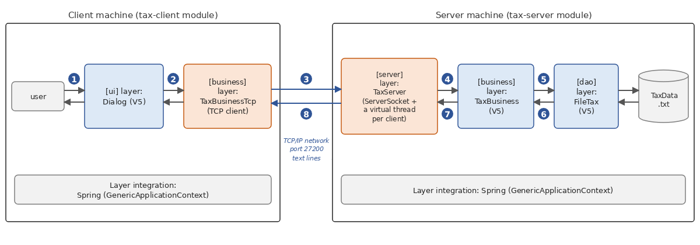

12. Webprogrammierung
Voraussetzungen: Version 8 der [Tax]-Anwendung, die am Ende dieses Kapitels beschrieben wird, verwendet die Module [tax-dao], [tax-business] und [tax-ui] aus Version 5 (Kapitel 6) wieder. Bevor Sie Ihre Projekte erstellen oder öffnen, müssen Sie Version 5 mit dem Befehl [mvn install] im Ordner [06-architectures/TaxV5] im lokalen Maven-Repository installiert haben (siehe Kapitel 6, Abschnitt zu [mvn install]).
12.1. Allgemeine Informationen
12.1.1. Internetprotokolle
Hier stellen wir die Kommunikationsprotokolle des Internets vor, auch bekannt als TCP/IP-Protokollfamilie (Transmission Control Protocol / Internet Protocol), benannt nach den beiden wichtigsten Protokollen. Es ist hilfreich, wenn der Leser vor der Entwicklung verteilter Anwendungen ein allgemeines Verständnis der Funktionsweise von Netzwerken – insbesondere der TCP/IP-Protokolle – besitzt. Diese Darstellung beruht auf einem Text aus dem Administrationshandbuch „Lan Workplace for DOS“ von Novell (frühe 1990er Jahre), dessen Struktur und Geist sie beibehält und zugleich aktualisiert: Das Internet von 2026 ist nicht mehr ganz dasselbe wie das von 1990.
Das allgemeine Konzept, ein Netzwerk aus heterogenen Computern zu schaffen, geht auf Forschungen der DARPA (Defense Advanced Research Projects Agency) in den Vereinigten Staaten zurück. Die DARPA entwickelte die als TCP/IP bekannte Protokollfamilie, die es heterogenen Maschinen ermöglicht, miteinander zu kommunizieren. Diese Protokolle wurden in einem Netzwerk namens ARPAnet getestet, das später zum Internet wurde (ARPAnet führte TCP/IP am 1. Januar 1983 ein). Die TCP/IP-Protokolle definieren Formate und Regeln für Senden und Empfangen, die von der Netzwerkarchitektur und der verwendeten Hardware unabhängig sind.
Das von der DARPA entworfene und von den TCP/IP-Protokollen verwaltete Netzwerk ist ein paketvermitteltes Netzwerk. Ein solches Netzwerk überträgt Informationen in kleinen Stücken, den Paketen. Sendet ein Computer also eine große Datei, wird sie in kleine Stücke zerlegt, die über das Netzwerk gesendet und am Ziel wieder zusammengesetzt werden. TCP/IP legt das Format dieser Pakete fest, das insbesondere Folgendes enthält:
- die Quelle des Pakets;
- sein Ziel;
- seine Länge;
- sein Typ.
Die Internetprotokolle sind in öffentlichen Dokumenten beschrieben, den RFC (Request for Comments), die von der IETF (Internet Engineering Task Force) veröffentlicht werden und unter www.rfc-editor.org verfügbar sind. Einige dieser Dokumente werden wir im Verlauf dieses Kapitels zitieren.
12.1.2. Das OSI-Modell
Die TCP/IP-Protokolle folgen im Großen und Ganzen dem offenen Netzwerkmodell namens OSI (Open Systems Interconnection Reference Model), das von der ISO (International Organization for Standardization) definiert wurde. Dieses Modell beschreibt ein ideales Netzwerk, in dem sich die Kommunikation zwischen Maschinen durch ein Sieben-Schichten-Modell darstellen lässt:

Jede Schicht erhält Dienste von der darunterliegenden Schicht und stellt der darüberliegenden Schicht ihre eigenen Dienste zur Verfügung. Angenommen, zwei Anwendungen auf verschiedenen Maschinen A und B wollen miteinander kommunizieren: Sie tun das auf der Anwendungsschicht. Sie müssen nicht alle Einzelheiten der Funktionsweise des Netzwerks kennen: Jede Anwendung gibt die Informationen, die sie übertragen möchte, an die darunterliegende Schicht weiter, die Darstellungsschicht. Die Anwendung muss daher nur die Regeln für die Schnittstelle zur Darstellungsschicht kennen. Sobald sich die Informationen in der Darstellungsschicht befinden, werden sie nach weiteren Regeln an die Sitzungsschicht weitergereicht und so fort, bis die Informationen das physische Medium erreichen und physisch zur Zielmaschine übertragen werden. Dort durchlaufen sie den umgekehrten Prozess wie auf der sendenden Maschine.
Auf jeder Schicht sendet der sendende Prozess, der für das Senden der Informationen zuständig ist, diese an einen empfangenden Prozess auf der anderen Maschine, der zur selben Schicht gehört. Er tut dies nach bestimmten Regeln, die als Protokoll der Schicht bezeichnet werden. Die eigentliche Kommunikation läuft durch die Schichten von Maschine A nach unten, überquert das physische Netzwerk und läuft dann durch die Schichten von Maschine B nach oben; jede Schicht nimmt jedoch wahr, dass sie direkt mit der entsprechenden Schicht auf der anderen Maschine kommuniziert.
Die Rollen der einzelnen Schichten sind wie folgt:
Schicht | Rolle |
Bitübertragungsschicht (Physical) | Sorgt für die Übertragung von Bits über ein physisches Medium (Kupferkabel, Glasfaserkabel, Funkwellen). Wichtige Aspekte auf dieser Ebene sind die Kodierung der Informationen in Signale und das Übertragungsverfahren. |
Sicherungsschicht (Data Link) | Abstrahiert die physischen Eigenschaften der Bitübertragungsschicht. Teilt die Informationen in Frames auf, erkennt (und korrigiert teilweise) Übertragungsfehler und regelt den Zugriff auf das gemeinsam genutzte Medium. |
Vermittlungsschicht (Network) | Verwaltet den Weg, den die über das Netzwerk gesendeten Informationen nehmen müssen. Man nennt das Routing: die Bestimmung der Route, die die Informationen bis zu ihrem Ziel nehmen müssen. |
Transportschicht (Transport) | Ermöglicht die Kommunikation zwischen zwei Anwendungen, während die vorherigen Schichten nur die Kommunikation zwischen Maschinen erlaubten. Ein von dieser Schicht erbrachter Dienst ist das Multiplexing: Die Transportschicht nutzt eine einzige Netzwerkverbindung (von Maschine zu Maschine), um Daten zu übertragen, die zu mehreren Anwendungen gehören. |
Sitzungsschicht (Session) | Stellt Dienste bereit, mit denen eine Anwendung eine Arbeitssitzung auf einer entfernten Maschine öffnen und aufrechterhalten kann. |
Darstellungsschicht (Presentation) | Vereinheitlicht die Darstellung von Daten über verschiedene Maschinen hinweg. Die Daten von Maschine A werden von der Darstellungsschicht der Maschine A nach einem Standardformat „formatiert“, bevor sie über das Netzwerk gesendet werden. Sobald sie die Darstellungsschicht der Zielmaschine B erreichen – die sie an ihrem Standardformat erkennt –, werden die Daten so umformatiert, dass die Anwendung auf Maschine B sie erkennen kann. |
Anwendungsschicht (Application) | Auf dieser Ebene befinden sich Anwendungen, die in der Regel nah am Benutzer sind, wie E-Mail, das Web oder die Dateiübertragung. |
12.1.3. Das TCP/IP-Modell
Das OSI-Modell ist ein Referenzmodell, das nie unverändert implementiert wurde. Die TCP/IP-Protokollfamilie, die zum Standard geworden ist, ist in nur vier Schichten organisiert:

Die Sitzungs- und die Darstellungsschicht existieren in TCP/IP als solche nicht: Ihre Funktionen werden, wenn nötig, von den Anwendungen selbst oder von Zwischenprotokollen wie TLS (Verschlüsselung des Datenaustauschs) übernommen, das zwischen TCP und die Anwendung eingefügt wird.
Die Netzzugangsschicht
In lokalen Netzwerken ist die heute vorherrschende Technologie Ethernet für kabelgebundene und Wi-Fi (IEEE-802.11-Standards) für drahtlose Verbindungen. Andere Technologien wie Token Ring sind inzwischen verschwunden.
Ethernet ist der Name einer Technologie für paketvermittelte lokale Netzwerke, die Anfang der 1970er Jahre bei Xerox erfunden und 1980 von Xerox, Intel und Digital Equipment sowie später vom IEEE (Standard 802.3) standardisiert wurde. Das ursprüngliche Ethernet bestand aus einem Koaxialkabel, an das alle Maschinen angeschlossen waren (Bustopologie), mit einer Datenrate von 10 Megabit pro Sekunde:

Es war ein Broadcast-Netzwerk: Eine sendende Maschine schickte Informationen mit der Adresse der empfangenden Maschine über das Kabel; alle angeschlossenen Maschinen empfingen sie, und nur der vorgesehene Empfänger behielt sie. Da mehrere Maschinen gleichzeitig senden konnten, mussten Kollisionen erkannt werden: Das war das Zugriffsverfahren CSMA/CD (Carrier Sense Multiple Access / Collision Detect). Jeder Sender hörte vor dem Senden das Kabel ab (CSMA) und überprüfte während des Sendens, ob das, was über das Kabel lief, tatsächlich das war, was er gesendet hatte; war das nicht der Fall, lag eine Kollision vor (CD): Alle beendeten das Senden und versuchten es nach einer zufälligen Wartezeit erneut.
Das moderne Ethernet hat sich stark weiterentwickelt: Die Geräte sind über Twisted-Pair-Kabel oder Glasfaserkabel an einen Switch angeschlossen, der jeden Frame an den spezifischen Port des Empfängers weiterleitet. Die Verbindungen sind vollduplex (gleichzeitiges Senden und Empfangen): Es gibt keine Kollisionen mehr, und CSMA/CD ist obsolet geworden. Typische Datenraten liegen zwischen 1 und 10 Gigabit pro Sekunde, in Rechenzentren deutlich höher.
Unverändert geblieben ist die 48-Bit-Adressierung: Jede Netzwerkkarte hat eine Adresse, die physische Adresse oder MAC-Adresse (Media Access Control) genannt wird und im Allgemeinen als sechs hexadezimale Bytes geschrieben wird (zum Beispiel [00:1A:2B:3C:4D:5E]). Sie wird vom Hersteller in die Karte programmiert, kann aber – entgegen langjähriger Behauptungen – per Software geändert werden: Moderne Betriebssysteme verwenden in Wi-Fi-Netzwerken sogar zufällige MAC-Adressen, um zu verhindern, dass ein Gerät von Netzwerk zu Netzwerk verfolgt werden kann.
Die Internetschicht (Vermittlungsschicht)
Auf dieser Schicht finden wir die folgenden Protokolle:
Protokoll | Rolle |
IP (Internet Protocol) | liefert Pakete zwischen zwei Netzwerkknoten, in Version 4 (IPv4) oder 6 (IPv6) |
ICMP (Internet Control Message Protocol) | erleichtert die Kommunikation zwischen dem Programm des IP-Protokolls auf einer Maschine und dem auf einer anderen Maschine. Es ist somit ein Protokoll zum Austausch von Kontrollnachrichten innerhalb des IP-Protokolls selbst |
ARP (Address Resolution Protocol) | ordnet die IP-Adresse einer Maschine der physischen Adresse der Maschine zu (in IPv6 übernimmt diese Rolle das NDP-Protokoll, das Neighbor Discovery Protocol) |
Manchmal wird auch RARP (Reverse Address Resolution Protocol) erwähnt, das die umgekehrte Zuordnung vornahm. Es ist seit Langem zugunsten von DHCP veraltet, auf das wir später eingehen.
Die Transportschicht
Diese Schicht umfasst die folgenden Protokolle:
Protokoll | Rolle |
TCP (Transmission Control Protocol) | gewährleistet die zuverlässige und geordnete Zustellung von Informationen zwischen zwei Anwendungen |
UDP (User Datagram Protocol) | liefert Informationen zwischen zwei Anwendungen ohne Zuverlässigkeitsgarantie |
Das Protokoll QUIC (2021), auf dem HTTP/3 basiert, ist ein zuverlässiges, verschlüsseltes Transportprotokoll auf Basis von UDP.
Die Anwendungsschicht
Hier finden wir verschiedene Protokolle, die wir etwas später näher erläutern:
Protokoll | Rolle |
HTTP, HTTPS (HyperText Transfer Protocol) | Das Protokoll des Webs: Ein Client (Browser, Anwendung) fordert Ressourcen von einem Webserver an. HTTPS ist mit TLS verschlüsseltes HTTP |
DNS (Domain Name System) | wandelt einen Hostnamen in eine IP-Adresse um |
SMTP (Simple Mail Transfer Protocol) | ermöglicht das Senden von E-Mails |
POP3, IMAP | ermöglichen das Lesen von auf einem Server gespeicherten E-Mails |
SSH (Secure Shell) | ermöglicht es, sich mit einer entfernten Maschine zu verbinden und dort Befehle verschlüsselt auszuführen. Es hat TELNET ersetzt, das dieselbe Funktion ohne Verschlüsselung erfüllte |
FTP (File Transfer Protocol), SFTP | ermöglichen Dateiübertragungen |
DHCP (Dynamic Host Configuration Protocol) | ermöglicht es einer Maschine, automatisch ihre IP-Adresse und Netzwerkkonfiguration zu erhalten |
12.1.4. Funktionsweise der Internetprotokolle
Anwendungen, die in der TCP/IP-Umgebung entwickelt werden, nutzen in der Regel mehrere Protokolle dieser Umgebung. Ein Anwendungsprogramm kommuniziert mit der höchsten Schicht der Protokolle. Diese Schicht reicht die Informationen an die darunterliegende Schicht weiter und so fort, bis das physische Medium erreicht ist. Dort werden die Informationen physisch zur empfangenden Maschine übertragen, wo sie dieselben Schichten erneut durchlaufen – diesmal in umgekehrter Richtung –, bis sie die Anwendung erreichen, für die die gesendeten Informationen bestimmt sind. Das folgende Diagramm zeigt den Weg der Informationen:

Nehmen wir ein Beispiel: eine Anwendung, die mit TCP eine Datei an eine andere Maschine sendet.
- Die Anwendung übergibt der Transportschicht eine zu übertragende Folge von Bytes;
- die Transportschicht teilt diese Folge von Bytes in TCP-Segmente auf und stellt jedem Segment einen Header voran, der unter anderem die Portnummern von Quelle und Ziel sowie eine Sequenznummer enthält. Die Segmente werden an die Netzwerkschicht weitergereicht, die vom IP-Protokoll gesteuert wird;
- die IP-Schicht erstellt ein Paket, das das empfangene TCP-Segment kapselt. In den Header dieses Pakets trägt sie die IP-Adressen der Quell- und der Zielmaschine ein. Sie bestimmt außerdem die physische Adresse der Maschine, an die das Paket zugestellt werden soll (das Ziel selbst oder ein Router). Das gesamte Paket wird an die Netzzugangsschicht weitergegeben, also an die Netzwerkkarte, die die Maschine mit dem physischen Netzwerk verbindet;
- dort wird das IP-Paket seinerseits in einen physischen Frame gekapselt und über das Medium an seinen Empfänger gesendet;
- Auf der Zielmaschine führt die Netzzugangsschicht den umgekehrten Vorgang aus: Sie entkapselt das IP-Paket aus dem physischen Frame und gibt es an die IP-Schicht weiter;
- die IP-Schicht prüft, ob das Paket gültig ist: Sie berechnet eine Prüfsumme seines Headers, die sie im Header des Pakets wiederfinden muss. Ist das nicht der Fall, wird das Paket verworfen;
- wird das Paket als gültig erachtet, entkapselt die IP-Schicht das darin enthaltene TCP-Segment und reicht es an die Transportschicht weiter;
- die TCP-Schicht prüft ebenfalls eine Prüfsumme des Segments. Ist sie korrekt, sendet sie der Quellmaschine eine Bestätigung; andernfalls wird das Segment ignoriert (und von der Quelle erneut gesendet);
- Anhand der Sequenznummern bringt die TCP-Schicht die Segmente in die richtige Reihenfolge;
- die TCP-Schicht muss nur noch den Datenteil der Segmente an die Zielanwendung übergeben, die anhand der Zielportnummer identifiziert wird.
12.1.5. Adressierungsfragen im Internet
Ein Netzwerkknoten kann ein Computer, ein Drucker, ein Telefon, ein vernetztes Gerät sein – tatsächlich alles, was über die TCP/IP-Protokolle kommunizieren kann. Jeder Knoten hat eine physische Adresse, deren Format vom Netzwerktyp abhängt. In einem Ethernet- oder Wi-Fi-Netzwerk wird die physische Adresse mit 6 Bytes kodiert.
Die Internetadresse (IP) eines Knotens ist eine logische Adresse: Sie ist unabhängig von der Hardware und dem verwendeten Netzwerk. In IPv4 ist es eine 4-Byte-Adresse, die sowohl ein Netzwerk als auch einen Knoten in diesem Netzwerk identifiziert. Sie wird üblicherweise als vier Zahlen – die Werte der vier Bytes – dargestellt, die durch einen Punkt getrennt sind. So lautete die Adresse der Maschine namens „Lagaffe“ an der Fakultät für Naturwissenschaften in Angers lange 193.49.144.1 und die der Maschine namens „Liny“ 193.49.144.9. Daraus ließ sich ableiten, dass die Adresse des lokalen Netzwerks 193.49.144.0 war und dass es in diesem Netzwerk bis zu 254 Knoten geben konnte.
Da IP-Adressen vom physischen Netzwerk unabhängig sind, kann eine Maschine in Netzwerk A mit einer Maschine in Netzwerk B kommunizieren, ohne sich um den Netzwerktyp der letzteren zu kümmern: Sie muss lediglich ihre IP-Adresse kennen. Das IP-Protokoll in jedem Netzwerk übernimmt die Umwandlung zwischen IP-Adressen und physischen Adressen in beiden Richtungen.
Alle öffentlichen IP-Adressen müssen eindeutig sein. Ihre Vergabe folgt einer hierarchischen Struktur: Die IANA (Internet Assigned Numbers Authority) verteilt Adressblöcke an fünf regionale Registries, darunter RIPE NCC für Europa, die sie an Betreiber und große Organisationen weiterverteilen. Diese weisen sie dann ihren Kunden zu. Der Administrator eines Netzwerks, das den Block 193.49.144.0 bis 193.49.144.255 erhalten hat, kann die Adressen 193.49.144.1 bis 193.49.144.254 nach eigenem Ermessen vergeben. In Frankreich war lange das INRIA für die Vergabe von Adressen zuständig; das ist schon seit geraumer Zeit nicht mehr der Fall.
12.1.5.1. Die IP-Adressklassen und die CIDR-Notation
Eine IPv4-Adresse ist eine Folge von 4 Bytes, notiert als I1.I2.I3.I4, die tatsächlich zwei Informationen enthält:
- die Netzwerkadresse (die höherwertigen Bits);
- die Adresse eines Knotens innerhalb dieses Netzwerks (die niederwertigen Bits).
Ursprünglich wurde die Größe dieser beiden Felder durch den Wert des ersten Bytes bestimmt. IP-Adressen wurden in drei Hauptklassen eingeteilt:
Klasse | Erstes Byte | Netzwerk / Knoten | Anzahl der Netzwerke und Knoten |
A | 1 bis 126 (höchstwertiges Bit 0) | R1.N1.N2.N3: 1 Byte Netzwerk (7 signifikante Bits), 3 Byte Knoten | 126 Netzwerke mit je 2²⁴ - 2 Knoten (ca. 16 Millionen) |
B | 128 bis 191 (höchstwertige 10 Bits) | R1.R2.N1.N2: 2 Byte Netzwerk (14 signifikante Bits), 2 Byte Knoten | 2¹⁴ = 16.384 Netzwerke mit je 2¹⁶ - 2 = 65.534 Knoten |
C | 192 bis 223 (höchstwertige 110 Bits) | R1.R2.R3.N1: 3 Byte Netzwerk (21 signifikante Bits), 1 Byte Knoten | 2²¹ Netzwerke (ca. 2 Millionen) mit je 254 Knoten |
Da die Adresse der Maschine Lagaffe 193.49.144.1 lautet, ist das höchstwertige Byte 193, binär 11000001: Das Netzwerk war ein Netzwerk der Klasse C.
Diese Klasseneinteilung erwies sich als viel zu starr: Eine Organisation mit 300 Maschinen musste ein Netzwerk der Klasse B verwenden und verschwendete dabei mehr als 65.000 Adressen. Seit 1993 (RFC 1518 und 1519) wurden die Klassen zugunsten des klassenlosen Routings (CIDR, Classless Inter-Domain Routing) aufgegeben. Die Grenze zwischen Netzwerkanteil und Hostanteil kann an jedem beliebigen Bit gesetzt werden; sie wird durch die Länge des Netzwerkpräfixes nach einem Schrägstrich angegeben:
- 193.49.144.0/24: Die ersten 24 Bits bezeichnen das Netzwerk, die letzten 8 Bits den Knoten. Dieses Netzwerk umfasst die Adressen 193.49.144.0 bis 193.49.144.255;
- 10.0.0.0/8: ein Netzwerk mit 2²⁴ Adressen;
- 192.168.1.0/26: ein Netzwerk mit 2⁶ = 64 Adressen, von 192.168.1.0 bis 192.168.1.63.
Die alte Schreibweise für die Subnetzmaske ist weiterhin gebräuchlich und drückt dasselbe aus: Das Präfix /24 entspricht der Maske 255.255.255.0. Die Begriffe „Klasse A, B, C“ sind weiterhin üblich, entsprechen aber keinem tatsächlichen Mechanismus mehr.
12.1.5.2. Reservierte Adressen, private Adressen und NAT
Bestimmte Adressen haben einen besonderen Zweck:
- Eine Adresse, deren Hostanteil ausschließlich aus Nullen besteht, bezeichnet das Netzwerk selbst: 193.49.144.0 ist die Adresse des Netzwerks 193.49.144.0/24;
- eine Adresse, deren Hostanteil ausschließlich aus Einsen besteht, ist eine Broadcast-Adresse: 193.49.144.255 bezeichnet alle Hosts des Netzwerks 193.49.144.0/24. Diese beiden Adressen können daher keinem Knoten zugewiesen werden: Ein /24-Netzwerk mit 256 Adressen bietet nur 254 nutzbare Adressen;
- die Adressen 127.0.0.0/8, in der Praxis 127.0.0.1, sind Loopback-Adressen: Eine Maschine verwendet sie, um sich selbst anzusprechen, ohne das Netzwerk zu durchlaufen. Der Name [localhost] ist ihnen zugeordnet;
- die Blöcke 10.0.0.0/8, 172.16.0.0/12 und 192.168.0.0/16 (RFC 1918) sind für private Netzwerke reserviert: Sie können innerhalb eines Unternehmens oder eines Haushalts frei verwendet werden, werden im Internet aber nicht geroutet;
- die Blöcke 192.0.2.0/24, 198.51.100.0/24 und 203.0.113.0/24 (RFC 5737) sind für Dokumentation und Beispiele reserviert.
Die Anzahl der IPv4-Adressen (2³², also etwas mehr als 4 Milliarden) reicht für alle vernetzten Maschinen nicht aus. Der zentrale Adressvorrat der IANA war 2011 erschöpft, der von RIPE NCC 2019. Der Mangel wurde durch Network Address Translation (NAT) umgangen: Die Geräte eines Haushalts haben private Adressen (etwa 192.168.1.x), und der Router, der sie mit dem Internet verbindet, „übersetzt“ sie in seine eigene, eindeutige öffentliche Adresse. Die langfristige Lösung ist IPv6.
12.1.5.3. Die IPv6-Adressen
IPv6 (RFC 2460 im Jahr 1998, heute RFC 8200) kodiert Adressen mit 128 Bits und bietet damit 2¹²⁸ mögliche Adressen – etwa 3,4 × 10³⁸ –, sodass ein Mangel nicht mehr zu befürchten ist. Eine IPv6-Adresse wird als acht durch Doppelpunkte getrennte Gruppen aus je vier Hexadezimalziffern geschrieben:
Führende Nullen jeder Gruppe können weggelassen werden, und eine einzelne Folge von Nullgruppen kann durch [::] ersetzt werden. Die vorstehende Adresse wird daher als [2001:db8::8a2e:0:370:7334] geschrieben. Die Loopback-Adresse, das Äquivalent zu 127.0.0.1, lautet [::1]. In einer URL wird die IPv6-Adresse in eckige Klammern gesetzt, um ihre Doppelpunkte nicht mit dem Doppelpunkt vor der Portnummer zu verwechseln: [http://[::1]:8080/].
IPv6 bringt weitere Vereinfachungen: Der Paket-Header hat eine feste Länge, die automatische Adresskonfiguration ist standardmäßig integriert, und die Adressübersetzung per NAT ist nicht mehr nötig. Die Verbreitung verlief langsam, doch ein erheblicher und wachsender Teil des Internetverkehrs läuft inzwischen über IPv6 (Google veröffentlicht beispielsweise den Anteil seiner Nutzer, die per IPv6 darauf zugreifen), und die großen französischen Internetanbieter stellen es ihren Kunden bereit. Beide Versionen existieren nebeneinander: Die meisten Maschinen haben sowohl IPv4- als auch IPv6-Adressen (man spricht von „Dual Stack“), und Programme müssen beide verarbeiten können.
12.1.5.4. Protokolle zur Adressumsetzung: IP ↔ physische Adresse
Wir haben gesehen, dass Daten bei der Übertragung von einer Maschine zur anderen beim Durchlaufen der IP-Schicht in Pakete gekapselt werden. Diese Pakete haben folgende Form:

Das IP-Paket enthält also die IP-Adressen der Quell- und der Zielmaschine. Wenn dieses Paket an die Schicht übergeben wird, die für den Versand über das physische Netzwerk zuständig ist, werden ihm zusätzliche Informationen hinzugefügt, die den physischen Frame bilden, der schließlich über das Netzwerk gesendet wird. Das Format eines Frames in einem Ethernet-Netzwerk ist zum Beispiel wie folgt:

Die ersten 8 Bytes (Präambel) dienen der Synchronisierung; das 2 Byte lange Feld vor den Daten gibt in der gebräuchlichsten Form des Ethernet-Frames den Typ des transportierten Protokolls an (IPv4, IPv6, ARP …) und nicht die Länge des Pakets. Im fertigen Frame befinden sich die physischen Adressen der Quell- und der Zielmaschine (im tatsächlichen Frame steht die Zieladresse vor der Quelladresse, anders als in der Abbildung dargestellt). Wie werden sie ermittelt?
Die sendende Maschine ermittelt die physische Adresse der Maschine, mit der sie kommunizieren möchte, anhand von deren IP-Adresse mithilfe des Protokolls ARP (Address Resolution Protocol):
- Sie sendet ein spezielles Paket, ein sogenanntes ARP-Paket, das die IP-Adresse der Maschine enthält, deren physische Adresse gesucht wird. Es enthält außerdem ihre eigene IP-Adresse sowie ihre physische Adresse;
- dieses Paket wird an alle Knoten des lokalen Netzwerks gesendet (Broadcast);
- diese Knoten erkennen die besondere Art des Pakets. Der Knoten, der seine IP-Adresse im Paket wiedererkennt, antwortet, indem er dem Absender seine physische Adresse sendet. Das kann er tun, weil er die IP-Adresse und die physische Adresse des Absenders im Paket gefunden hat;
- der Absender erhält somit die gesuchte physische Adresse. Er speichert sie in einem Cache, um sie später verwenden zu können, falls weitere Pakete an denselben Empfänger gesendet werden müssen.
Bei IPv6 wird derselbe Dienst vom Protokoll NDP (Neighbor Discovery Protocol) erbracht, das auf ICMPv6-Nachrichten beruht.
Es bleibt die Frage: Woher kennt eine Maschine ihre eigene IP-Adresse? Sie kann in eine Konfigurationsdatei der Maschine eingetragen werden – bei Servern ist das nach wie vor üblich. Muss ein Administrator jedoch das Netzwerk umgestalten, ist es mühsam und fehleranfällig, die Konfigurationsdateien aller Maschinen einzeln zu ändern. Das Protokoll RARP erlaubte es einer Maschine früher, ihre IP-Adresse anhand ihrer physischen Adresse bei einem Server zu erfragen. Es wurde durch DHCP (Dynamic Host Configuration Protocol, RFC 2131) ersetzt: Beim Start sendet die Maschine eine Anfrage per Broadcast ins Netzwerk; ein Server (etwa ein Heimrouter oder ein dedizierter Server in einem Unternehmen) weist ihr für begrenzte Zeit eine Adresse zu (eine Lease) und liefert den Rest ihrer Konfiguration mit: Netzwerkpräfix, Routeradresse und Adressen der DNS-Server. Der Administrator muss dann nur noch den DHCP-Server konfigurieren. Bei IPv6 kann eine Maschine ihre Adresse außerdem selbst aus dem vom Router angekündigten Präfix bilden (Autokonfiguration per SLAAC).
12.1.6. Die Netzwerkschicht des Internets, die sogenannte IP-Schicht
Das IP-Protokoll legt das Format fest, das Pakete haben müssen, und wie sie beim Senden und Empfangen zu behandeln sind. Diese besondere Art von Paket heißt IP-Datagramm. Wir haben es bereits besprochen:
Wichtig ist, dass das IP-Datagramm neben den zu übertragenden Daten die IP-Adressen der Quell- und der Zielmaschine enthält. So weiß die Zielmaschine, wer ihr eine Nachricht sendet.
Anders als ein Netzwerk-Frame, dessen Länge durch die physischen Eigenschaften des durchlaufenen Netzwerks bestimmt wird, wird die Länge des IP-Datagramms von der Software festgelegt und ist daher in verschiedenen physischen Netzwerken gleich. Wir haben gesehen, dass das IP-Datagramm beim Übergang von der Netzwerkschicht zur physischen Schicht in einen physischen Frame gekapselt wird.
Physische Frames wandern von Knoten zu Knoten in Richtung ihres Ziels, das sich nicht unbedingt im selben physischen Netzwerk wie die sendende Maschine befindet. Das IP-Paket kann daher nacheinander in verschiedene physische Frames gekapselt werden, und zwar an den Knoten, die zwei Netzwerke unterschiedlichen Typs verbinden. Es ist auch möglich, dass das IP-Paket zu groß ist, um in einen physischen Frame gekapselt zu werden (die Nutzlast eines Ethernet-Frames ist auf 1.500 Bytes begrenzt). Bei IPv4 zerlegt der Knoten, an dem dieses Problem auftritt, das IP-Paket in Fragmente, die erst am endgültigen Ziel wieder zusammengesetzt werden. Bei IPv6 fragmentieren Router Pakete nicht mehr: Der Sender muss die maximal akzeptierte Größe entlang des Pfades ermitteln und die Größe seiner Pakete entsprechend anpassen.
12.1.6.1. Routing
Routing ist das Verfahren, IP-Pakete zu ihrem Ziel zu leiten. Es gibt zwei Verfahren: direktes Routing und indirektes Routing.
Direktes Routing
Direktes Routing bezeichnet die Übertragung eines IP-Pakets direkt vom Sender zum Empfänger innerhalb desselben Netzwerks:
- Die Maschine, die ein IP-Datagramm sendet, kennt die IP-Adresse des Empfängers;
- sie ermittelt die physische Adresse des Empfängers über das Protokoll ARP oder aus ihrem Cache, falls diese Adresse bereits ermittelt wurde;
- sie sendet das Paket über das Netzwerk an diese physische Adresse.
Indirektes Routing
Indirektes Routing bezeichnet die Übertragung eines IP-Pakets an ein Ziel, das sich in einem anderen Netzwerk befindet als dem, zu dem der Sender gehört. In diesem Fall sind die „Netzwerk“-Anteile der IP-Adressen von Quell- und Zielmaschine verschieden; die Quellmaschine erkennt das, indem sie die Zieladresse mit ihrem eigenen Netzwerkpräfix vergleicht. Sie sendet das Paket dann an einen besonderen Knoten, einen Router, der das lokale Netzwerk mit anderen Netzwerken verbindet und dessen IP-Adresse der Quellmaschine bekannt ist (man spricht vom Standardgateway; es wird meist per DHCP bereitgestellt). Ein Router ist mit mindestens zwei Netzwerken verbunden und hat in jedem von ihnen eine IP-Adresse:

In unserem obigen Beispiel gilt:
- Netzwerk Nr. 1 hat die Adresse 193.49.144.0/24 und Netzwerk Nr. 2 die Adresse 193.49.145.0/24;
- in Netzwerk Nr. 1 hat der Router die Adresse 193.49.144.6, in Netzwerk Nr. 2 die Adresse 193.49.145.3.
Die Aufgabe des Routers besteht darin, das IP-Paket, das er – enthalten in einem physischen Frame aus Netzwerk Nr. 1 – empfängt, in einen physischen Frame zu legen, der über Netzwerk Nr. 2 übertragen werden kann. Liegt die Ziel-IP-Adresse des Pakets in Netzwerk Nr. 2, sendet der Router das Paket direkt dorthin; andernfalls sendet er es an einen anderen Router, der Netzwerk Nr. 2 mit Netzwerk Nr. 3 verbindet, und so weiter. Die Router des Internets tauschen ständig Informationen über die Netzwerke aus, die sie erreichen können (Routing-Protokolle wie BGP zwischen Betreibern), um ihre Routing-Tabellen aufzubauen.
12.1.6.2. Fehler- und Kontrollnachrichten
Ebenfalls in der Netzwerkschicht – und damit auf derselben Ebene wie das IP-Protokoll – befindet sich das Protokoll ICMP (Internet Control Message Protocol). Es dient dazu, Nachrichten über die internen Vorgänge im Netzwerk zu senden: Knoten nicht erreichbar, Paket hat zu viele Router durchlaufen usw. ICMP-Nachrichten werden in IP-Pakete gekapselt und über das Netzwerk gesendet. Die IP-Schichten der verschiedenen Knoten ergreifen anhand der empfangenen ICMP-Nachrichten die geeigneten Maßnahmen. Eine Anwendung bekommt diese netzwerkspezifischen Probleme daher selbst nie zu sehen. Die Befehle [ping] (die ICMP-Nachrichten „Echo Request“ senden und auf „Echo Reply“ warten) und [traceroute] / [tracert] (der die durchlaufenen Router anzeigt) beruhen auf ICMP.
12.1.7. Die Transportschicht: die Protokolle UDP und TCP
12.1.7.1. Das Protokoll UDP: User Datagram Protocol
Das Protokoll UDP ermöglicht einen unzuverlässigen Datenaustausch zwischen zwei Punkten; das bedeutet, dass weder die erfolgreiche Zustellung eines Pakets an sein Ziel noch die Reihenfolge, in der Pakete eintreffen, garantiert ist. Die Anwendung kann sich, wenn sie möchte, selbst darum kümmern – zum Beispiel, indem sie nach dem Senden einer Nachricht eine Bestätigung abwartet, bevor sie die nächste sendet.
Bisher haben wir auf Netzwerkebene von Maschinenadressen wie IP gesprochen. Auf einer einzelnen Maschine können jedoch gleichzeitig verschiedene Prozesse nebeneinander laufen, und alle können miteinander kommunizieren. Beim Senden einer Nachricht müssen Sie daher nicht nur die IP-Adresse der Zielmaschine angeben, sondern auch den „Namen“ des Zielprozesses. Dieser Name ist in Wirklichkeit eine 16-Bit-Zahl (von 1 bis 65.535), die Portnummer genannt wird. Bestimmte Nummern sind für Standardanwendungen reserviert: Port 53 für DNS, 80 für HTTP, 443 für HTTPS, 25 für SMTP und so weiter. Ports unterhalb von 1024 heißen „Well-known Ports“; unter Linux sind besondere Berechtigungen erforderlich, um einen Dienst auf einem von ihnen zu starten. Die Beispiele in diesem Kapitel verwenden Ports in den Bereichen 27100–27199 und 27200–27299.
Die vom Protokoll UDP verarbeiteten Pakete heißen Datagramme. Sie haben folgende Form:

Diese Datagramme werden in IP-Pakete und anschließend in physische Frames gekapselt. UDP wird verwendet, wenn Geschwindigkeit wichtiger ist als Zuverlässigkeit oder wenn die Anwendung Verluste selbst behandelt: DNS (eine Frage, eine Antwort), Live-Audio- und Videostreaming, Online-Spiele und das Protokoll QUIC von HTTP/3.
12.1.7.2. Das Protokoll TCP: Transmission Control Protocol
Für sichere Kommunikation reicht das Protokoll UDP nicht aus: Der Anwendungsentwickler muss selbst ein Protokoll schaffen, um zu prüfen, dass die Pakete korrekt zugestellt werden. Das Protokoll TCP vermeidet diese Probleme. Seine Merkmale sind die folgenden:
- Der Prozess, der Daten übertragen möchte, baut zunächst eine Verbindung zu dem Prozess auf, der die Informationen empfangen soll. Diese Verbindung wird zwischen einem Port der sendenden Maschine und einem Port der empfangenden Maschine durch den Austausch von drei Segmenten (SYN, SYN-ACK, ACK: der „Three-Way-Handshake“) aufgebaut. Damit entsteht zwischen den beiden Ports ein virtueller Kanal, der ausschließlich den beiden Prozessen vorbehalten ist, die die Verbindung aufgebaut haben;
- alle vom Quellprozess übertragenen Bytes kommen in der Reihenfolge an ihrem Ziel an, in der sie gesendet wurden, was beim Protokoll UDP nicht garantiert ist, da Pakete unterschiedliche Wege nehmen können;
- Die übertragenen Informationen erscheinen kontinuierlich: Es handelt sich um einen Bytestrom. Der sendende Prozess überträgt Informationen in seinem eigenen Tempo. Diese Informationen werden nicht zwangsläufig sofort gesendet: Das Protokoll TCP kann warten, bis es genügend Daten zum Senden hat. Sie werden in eine Struktur namens TCP-Segment gelegt. Ist dieses Segment gefüllt, wird es an die IP-Schicht übergeben, wo es in ein IP-Paket gekapselt wird. Eine wichtige Konsequenz für den Programmierer: Eine „Zeile“, die auf einmal gesendet wird, kann in mehreren Teilen ankommen, und mehrere Zeilen können gemeinsam ankommen. Die Anwendung muss selbst die Grenzen ihrer Nachrichten erkennen (wir verwenden dafür das Zeilenende-Zeichen);
- Jedes vom Protokoll TCP gesendete Segment wird nummeriert. Das empfangende TCP prüft, ob es die Segmente der Reihe nach erhält. Für jedes korrekt empfangene Segment sendet es dem Absender eine Bestätigung;
- wenn das TCP, das ein Segment gesendet hat, nach einer gewissen Zeit keine Bestätigung erhält, sendet es das betreffende Segment erneut und gewährleistet so die Qualität des Informationsübertragungsdienstes;
- Der zwischen den beiden kommunizierenden Prozessen aufgebaute virtuelle Kanal ist Vollduplex: Informationen können gleichzeitig in beide Richtungen fließen. So kann der Zielprozess Bestätigungen senden, auch während der Quellprozess weiter Informationen sendet. Das erlaubt es dem TCP der Quelle zum Beispiel, mehrere Segmente zu senden, ohne auf Bestätigungen zu warten. Stellt es nach einer gewissen Zeit fest, dass es für ein bestimmtes Segment Nr. n keine Bestätigung erhalten hat, setzt es das Senden der Segmente ab diesem Punkt fort;
- TCP regelt außerdem seine Datenrate, um den Empfänger (Flusskontrolle) oder das Netzwerk (Überlastkontrolle) nicht zu überlasten.
12.1.8. Die Anwendungsschicht
Oberhalb der Protokolle UDP und TCP befinden sich verschiedene Standardprotokolle:
TELNET und SSH
TELNET ermöglicht es einem Benutzer auf Maschine A, sich mit Maschine B (oft Host genannt) zu verbinden, als hätte er ein an diese Maschine angeschlossenes Terminal. TELNET beruht auf TCP. Seine Datenaustausche, einschließlich der Passwörter, werden im Klartext übertragen: Es wurde durch SSH (Secure Shell) ersetzt, das denselben Dienst verschlüsselt bereitstellt und außerdem für die sichere Dateiübertragung (SFTP, SCP) und zum Aufbau von Tunneln verwendet wird. Das Client-Programm [telnet] war lange ein praktisches Werkzeug, um „von Hand“ mit einem TCP-Server zu kommunizieren: Wir werden sehen, wie Sie es ersetzen können.
FTP (File Transfer Protocol)
Dieses Protokoll ermöglicht den Austausch von Dateien zwischen zwei entfernten Maschinen sowie Dateioperationen wie das Anlegen von Verzeichnissen. Es beruht auf dem Protokoll TCP. Wie TELNET überträgt es Passwörter im Klartext; es wird zugunsten von SFTP und HTTPS verdrängt.
TFTP (Trivial File Transfer Protocol)
Dieses Protokoll ist eine vereinfachte Variante von FTP. Es beruht auf dem Protokoll UDP. Es wird nach wie vor verwendet, um Maschinen über das Netzwerk zu booten.
DNS (Domain Name System)
Wenn ein Benutzer Informationen mit einer entfernten Maschine austauschen möchte, muss er deren IP-Adresse kennen. Es ist viel bequemer, eine Maschine mit einem Namen anzusprechen als mit ihrer IP-Adresse. Daraus ergibt sich das Problem der Eindeutigkeit der Namen: Es gibt Milliarden miteinander verbundener Maschinen. Man könnte sich eine zentrale Instanz vorstellen, die die Namen vergibt, doch das wäre sehr schwerfällig. Die Kontrolle über die Namen wurde auf Domänen verteilt. Jede Domäne wird von einer Organisation verwaltet, die bei der Wahl der Namen innerhalb ihrer Domäne völlig frei ist. So gehören Maschinen in Frankreich häufig zur Domäne [fr], die von der AFNIC verwaltet wird (bis zur Gründung der AFNIC im Jahr 1997 verwaltete das INRIA sie). Um die Sache weiter zu vereinfachen, ist die Kontrolle noch weiter dezentralisiert: Innerhalb der Domäne [fr] werden Domänen angelegt. Beispielsweise besitzt die Universität Angers die Domäne [univ-angers.fr]; die Abteilung, die sie verwaltet, kann die Rechner im Netzwerk der Universität völlig frei benennen und Subdomänen anlegen.
Der vollständige Name einer Maschine (FQDN, Fully Qualified Domain Name) gibt die Hierarchie der Domänen an, zu denen sie gehört, vom Spezifischsten zum Allgemeinsten: [www.univ-angers.fr]. Innerhalb einer Domäne können oft relative Namen verwendet werden, die vom System automatisch vervollständigt werden.
Eine Anwendung kann eine Maschine also über ihren Namen ansprechen. Letztlich benötigen Sie aber trotzdem die IP-Adresse dieser Maschine. Angenommen, Maschine A möchte mit Maschine B kommunizieren:
- Maschine A prüft zunächst eine lokale Zuordnungsdatei ([/etc/hosts] unter Linux und macOS, [C:\Windows\System32\drivers\etc\hosts] unter Windows) und dann ihren Cache;
- andernfalls fragt sie den DNS-Server ab, dessen Adresse in ihrer Konfiguration steht (meist per DHCP bereitgestellt). Sie sendet eine DNS-Anfrage mit dem Namen der gesuchten Maschine. Kennt der befragte Server die Antwort oder hat er sie im Cache, liefert er die zugehörige IP-Adresse an Maschine A zurück. Andernfalls befragt er seinerseits – ausgehend von den Root-Servern – die Server, die für die Domäne [fr] und dann für [univ-angers.fr] zuständig sind, und so weiter, bis er die Antwort erhält, die dann an Maschine A zurückgereicht wird.
Die DNS-Domäne ordnet einem Namen verschiedene Arten von Einträgen zu: A (IPv4-Adresse), AAAA (IPv6-Adresse), CNAME (Alias auf einen anderen Namen), MX (Mailserver der Domäne) usw.
HTTP und HTTPS (HyperText Transfer Protocol)
Dies ist das Web-Protokoll und heute mit Abstand das am häufigsten verwendete: nicht nur von Browsern, sondern auch von Anwendungen, die Daten austauschen (die Webservices, die im nächsten Kapitel behandelt werden). Wir werden es im Detail untersuchen. HTTPS ist HTTP, übertragen über eine mit TLS (Transport Layer Security) verschlüsselte Verbindung; dies ist heute die Standardform des Webs.
SMTP, POP3 und IMAP
SMTP dient zum Senden von E-Mails, während POP3 und IMAP zum Lesen von E-Mails dienen, die auf einem Server gespeichert sind. Auch diese werden wir behandeln.
XDR, RPC, NFS
Schließlich erwähnen wir drei Protokolle, die von Sun Microsystems definiert wurden, dem Unternehmen, das Java geschaffen hat: XDR (eXternal Data Representation), das eine standardisierte, maschinenunabhängige Datendarstellung festlegt; RPC (Remote Procedure Call), ein auf XDR beruhendes Protokoll für entfernte Prozeduraufrufe; NFS (Network File System), das es einer Maschine erlaubt, das Dateisystem einer anderen Maschine zu „sehen“, und auf RPC beruht. NFS wird in der Unix-Welt weiterhin verwendet. Das Konzept entfernter Prozeduraufrufe wurde von vielen Nachfolgern übernommen; heute gehören dazu die Webservices REST (auf Basis von HTTP) und gRPC (auf Basis von HTTP/2).
12.1.9. Fazit
In dieser Einführung haben wir einige der wichtigsten Merkmale der Internetprotokolle vorgestellt. Um dieses Gebiet gründlicher zu erkunden, können Leser das Standardwerk von Douglas Comer, *Internetworking with TCP/IP, Volume 1 ” (Pearson, 6. Auflage), heranziehen – frühere Auflagen davon wurden ins Französische übersetzt – sowie die in diesem Kapitel zitierten RFC. Für HTTP ist die Mozilla-Dokumentation unter developer.mozilla.org/en-US/docs/Web/HTTP eine ausgezeichnete Einführung.
12.2. Java-Klassen für die Verwaltung von IP-Adressen
Eine Maschine im Internet wird durch eine IP-Adresse identifiziert, die zwei Formen annehmen kann:
- IPv4: in 32 Bits kodiert und dargestellt als Zeichenkette der Form "I1.I2.I3.I4", wobei In eine Zahl zwischen 0 und 255 ist;
- IPv6: in 128 Bits kodiert und dargestellt als Zeichenkette aus acht durch Doppelpunkte getrennten Gruppen hexadezimaler Ziffern, etwa "2001:db8::8a2e:370:7334". Heute können wir diese Adressen nicht mehr ignorieren: Unsere Programme werden sie akzeptieren.
Eine Maschine kann auch durch einen Namen identifiziert werden. Dieser Name ist nicht zwingend erforderlich, da Anwendungen letztlich immer die IP-Adressen der Maschinen verwenden. Namen sollen den Benutzern das Leben erleichtern: Es ist einfacher, einen Browser nach der URL [https://dev.java] zu fragen als nach der URL, die aus einer der IP-Adressen dieser Website gebildet wird, die sich übrigens je nach Ort der Anfrage ändert.
Eine Maschine kann mehrere IP-Adressen haben: eine Loopback-Adresse, je eine Adresse pro Netzwerk, mit dem sie verbunden ist, sowie IPv4- und IPv6-Adressen.
Eine IP-Adresse kann in Java auf zwei Arten dargestellt werden:
- als Zeichenkette wie "I1.I2.I3.I4" oder "2001:db8::1";
- als Objekt vom Typ [InetAddress] (Paket [java.net], in einer kompakten Quelldatei automatisch importiert, da es zum Modul [java.base] gehört).
Die Klasse InetAddress
Die Klasse [InetAddress] hat keinen öffentlichen Konstruktor: Ihre Instanzen werden über statische Erzeugungsmethoden angelegt. Sie hat zwei abgeleitete Klassen, [Inet4Address] und [Inet6Address], eine für jede IP-Version. Zu ihren Methoden gehören die folgenden:
Methode | Rolle |
static InetAddress ofLiteral(String string) | (Java 22) wandelt eine in Ziffern geschriebene IPv4- oder IPv6-Adresse in ein [InetAddress]-Objekt um, ohne jemals das DNS abzufragen; wirft eine [IllegalArgumentException] , wenn die Zeichenkette keine IP-Adresse ist. [Inet4Address.ofLiteral] und [Inet6Address.ofLiteral] akzeptieren jeweils nur eine der beiden Versionen |
static InetAddress getByName(String nameOrAddress) | liefert die Adresse einer Maschine, die durch ihren Namen oder ihre IP-Adresse identifiziert wird. Ist die Zeichenkette keine IP-Adresse, wird der Name im DNS nachgeschlagen; wirft eine [UnknownHostException] , wenn die Maschine nicht gefunden werden kann |
static InetAddress[] getAllByName(String nameOrAddress) | Wie oben, liefert aber alle IP-Adressen der Maschine |
static InetAddress getLocalHost() | die Adresse der Maschine, auf der das Programm läuft, zusammen mit ihrem Namen |
static InetAddress getLoopbackAddress() | die Loopback-Adresse (127.0.0.1 oder ::1). Ein Dienst, der an diese Adresse gebunden ist, akzeptiert nur Clients, die sich auf derselben Maschine befinden wie er selbst |
byte[] getAddress() | liefert die Bytes der Adresse (4 bei IPv4, 16 bei IPv6) |
String getHostAddress() | liefert die Adresse in Textform |
String getHostName(), String getCanonicalHostName() | der Maschinenname; wurde das Objekt aus einer IP-Adresse erzeugt, wird dieser Name durch eine „umgekehrte“ Abfrage („Reverse Lookup“) im DNS ermittelt (schlägt diese Abfrage fehl, wird die Adresse selbst zurückgegeben) |
boolean isLoopbackAddress(), isSiteLocalAddress(), isAnyLocalAddress() … | liefern [true] , wenn die Adresse eine Loopback-Adresse, eine private Adresse (10.x.y.z, 172.16.x.y bis 172.31.x.y, 192.168.x.y), die „Wildcard“-Adresse 0.0.0.0 oder :: ist … |
Zwei weitere Klassen ergänzen [InetAddress]:
- [InetSocketAddress] stellt einen Verbindungspunkt dar: eine IP-Adresse und eine Portnummer. Ihre Methoden [getAddress] und [getPort] liefern diese beiden Angaben. Der Konstruktor [InetSocketAddress(int port)] ordnet den Port der Wildcard-Adresse 0.0.0.0 zu, die alle Adressen der Maschine bezeichnet;
- [NetworkInterface] stellt eine Netzwerkschnittstelle der Maschine dar (eine Ethernet-Karte, eine WLAN-Karte, die Loopback-Schnittstelle usw.) samt ihren IP-Adressen.
Java besitzt jedoch keine Klasse, die ein Netzwerk in CIDR-Notation darstellt, etwa 193.49.144.0/24: Wir schreiben sie selbst. Das Programm [Internet01.java] veranschaulicht diese Klassen:
Ergebnisse:
Kommentare:
- Zeilen 5–6: die zu analysierenden Zeichenketten;
- Zeile 10: [InetAddress.ofLiteral] (Java 22) wandelt die Zeichenkette in ein [InetAddress]-Objekt um, wenn es sich um eine IPv4- oder IPv6-Adresse handelt, und löst andernfalls eine [IllegalArgumentException] aus (Zeile 17);
- Zeile 11: Der Operator [instanceof] unterscheidet die beiden IP-Versionen: Das zurückgegebene Objekt ist entweder eine Instanz von [Inet4Address] oder von [Inet6Address];
- Zeilen 12–13: [getAddress] liefert die Bytes der Adresse, die die Klasse [HexFormat] (Java 17) hexadezimal ausgibt. Wir sehen (Zeile 2 der Ergebnisse), dass 193.49.144.1 aus den vier Bytes C1, 31, 90, 01 besteht und (Zeile 5), dass ::1 aus 15 Nullbytes gefolgt von einem Byte mit dem Wert 1 besteht;
- Zeile 16: [isLoopbackAddress] und [isSiteLocalAddress] erkennen die Loopback-Adressen und die privaten Adressen nach RFC 1918;
- Zeile 4 der Ergebnisse: eine Überraschung. Die Zeichenkette "192.168.1" wurde akzeptiert und in 192.168.0.1 umgewandelt. [ofLiteral] akzeptiert tatsächlich die historischen abgekürzten Formen von IPv4-Adressen (bei denen die letzte Zahl alle verbleibenden Bytes belegt). Um zu prüfen, dass eine Eingabe eine vollständige IPv4-Adresse ist, müssen Sie daher zusätzlich kontrollieren, dass sie vier Zahlen enthält;
- Zeilen 5–6 der Ergebnisse: Die IPv6-Adressen werden von [getHostAddress] in vollständiger Form ausgegeben, ohne die Abkürzung [::] und ohne führende Nullen: [0:0:0:0:0:0:0:1] für [::1]. Das Präfix 2001:db8::/32 ist, wie 192.0.2.0/24 bei IPv4, für Dokumentation reserviert;
- Zeilen 23–27: Die ältere Methode [getByName] akzeptiert entweder eine IP-Adresse oder einen Hostnamen. Da die Zeichenkette „256.1.1.1“ keine gültige IP-Adresse ist (256 passt nicht in ein einzelnes Byte), interpretiert [getByName] sie als Maschinennamen und fragt das DNS ab, das ihn nicht kennt: Das führt zu einer [UnknownHostException] (Zeile 9 der Ergebnisse). [ofLiteral] wurde in Java 22 hinzugefügt, um diese unerwartete DNS-Abfrage zu verhindern. Die Meldung der Exception stammt hier aus der Systembibliothek von Linux;
- Zeile 30: die Loopback-Adresse. Wird ein [InetAddress]-Objekt von [toString] ausgegeben, hat es die Form [name/address], wobei der Name leer ist, wenn er unbekannt ist;
- Zeile 31: die Wildcard-Adresse 0.0.0.0, hier durch eine [InetSocketAddress] ohne Adresse erhalten;
- Zeilen 34–39: [InetSocketAddress]-Objekte, die eine Adresse und einen Port verbinden. Sie werden (Zeilen 12–13 der Ergebnisse) in der Form [name/address:port] ausgegeben; bei IPv6 steht die Adresse in eckigen Klammern;
- Zeilen 50–79: ein Record ([record], Kapitel 4), der ein Netzwerk in CIDR-Notation darstellt. In einer kompakten Quelldatei kann er unmittelbar nach der Methode [main] deklariert werden;
- Zeilen 53–56: Die statische Methode [parse] zerlegt eine Zeichenkette der Form [address/prefix];
- Zeilen 59–73: Eine Adresse gehört zum Netzwerk, wenn ihre ersten [prefix] Bits mit denen der Netzwerkadresse übereinstimmen. Das Bit Nummer [bit] befindet sich im Byte Nummer [bit / 8]; die Maske [0x80 >> (bit % 8)] isoliert es innerhalb dieses Bytes. Die Zeilen 14–15 der Ergebnisse zeigen, dass 193.49.144.1 zum Netzwerk 193.49.144.0/24 gehört und 193.49.145.3 (die Adresse des Routers in unserem Schaubild, in seinem zweiten Netzwerk) nicht. Genau diesen Test führt eine Maschine durch, um zwischen direktem und indirektem Routing zu wählen.
Das DNS und die Netzwerkschnittstellen
Die Zuordnung zwischen der IP-Kennung und dem Maschinennamen übernimmt das DNS. Es wird über die statischen Methoden [getByName] und [getAllByName] von [InetAddress]abgefragt, die bereits beschrieben wurden; in der Gegenrichtung führen [getHostName] und [getCanonicalHostName] einen Reverse Lookup durch. Diese Methoden sind blockierend: Eine DNS-Anfrage kann einige zehn Millisekunden dauern, bei einem nicht antwortenden Server sogar mehrere Sekunden, in denen der aufrufende Thread blockiert ist. Java bietet keine asynchrone Version dieser Methoden an; seit Java 21 besteht die Lösung schlicht darin, sie in einem virtuellen Thread aufzurufen (Kapitel 8), was beim Warten kaum Overhead verursacht. Seit Java 18 können Sie außerdem den von *[InetAddress] verwendeten Mechanismus zur Namensauflösung überschreiben, indem Sie eine eigene Implementierung der Schnittstelle *[InetAddressResolver] bereitstellen, was für Tests nützlich ist.
Die Klasse [NetworkInterface] liefert mit ihrer statischen Methode [networkInterfaces] einen Stream ([Stream]) der Netzwerkschnittstellen der Maschine; für jede Schnittstelle liefert [getName] ihren Namen, [isUp] zeigt an, ob sie aktiv ist, und [inetAddresses] liefert einen Stream ihrer Adressen (IP).
Das Programm [Internet02.java] zeigt den Namen und die Netzwerkschnittstellen der Maschine an, auf der es läuft, und liefert dann interaktiv die Zuordnungen zwischen Maschinenname und IP-Adressen:
Ergebnisse:
Kommentare:
- Zeilen 7–8: der Name und die Adresse der lokalen Maschine. Unsere Testmaschine ist eine virtuelle Linux-Maschine mit dem Namen [vm]; bei Ihnen ist es natürlich der Name Ihres eigenen Rechners;
- Zeilen 10–13: die aktiven Netzwerkschnittstellen und ihre Adressen. Der Filter [filter(this::active)] verwendet eine Referenz auf die Methode [active] des aktuellen Objekts (Kapitel 7); Sie können [isUp] nicht direkt in einer Methodenreferenz schreiben, da es eine geprüfte Exception ([SocketException]) auslöst, die das funktionale Interface [Predicate] nicht zulässt: Die Methode [active] (Zeilen 41–47) fängt sie ab;
- Zeile 18: [IO.readln] (Java 25) zeigt die Eingabeaufforderung an und liest eine Zeile von der Tastatur; es liefert [null] , wenn die Standardeingabe geschlossen ist;
- Zeile 26: die DNS-Abfrage. Ist der Name (oder die Adresse) unbekannt, wird eine [UnknownHostException] ausgelöst (Zeile 33);
- Zeile 28: der Maschinenname. Wurde eine IP-Adresse angegeben, führt [getHostName] einen Reverse Lookup durch;
- Zeilen 30–31: Die Adressen der Maschine werden mit der Stream-API zu einer einzigen Zeichenkette zusammengefasst.
Die Ergebnisse verdienen einige Anmerkungen. Sie hängen von der Konfiguration der Maschine ab: Erwarten Sie nicht, auf Ihrem eigenen System exakt dieselben Ergebnisse zu erhalten.
- Zeilen 2–4: Die Testmaschine hat zwei aktive Schnittstellen: [eth0], die mit dem Netzwerk verbunden ist, und [lo], die Loopback-Schnittstelle. Der Maschinenname wird durch die Datei [/etc/hosts] der Adresse 127.0.0.1 zugeordnet;
- Zeilen 5–7: Der Name [localhost] entspricht der Loopback-Adresse 127.0.0.1. Auf einer Maschine mit aktivem IPv6 würde auch ::1 zurückgegeben;
- Zeile 12: Mit der IP-Adresse hat [getHostName] einen Reverse Lookup durchgeführt und den der Adresse zugeordneten Namen zurückgegeben;
- Zeile 15: Der Reverse Lookup für ::1 ist fehlgeschlagen, weil die Datei [/etc/hosts] auf unserer Testmaschine dieser Adresse keinen Namen zuordnet; [getHostName] hat die Adresse selbst zurückgegeben. Unter Windows würde der Maschinenname zurückgegeben;
- Zeile 18: Der Name [xx] ist unbekannt. Die Meldung der Exception stammt aus der Systembibliothek von Linux; unter Windows würde sie anders lauten.
Auf einer mit dem Internet verbundenen Maschine können Sie auch einen öffentlichen Namen wie [dev.java] abfragen. Das liefert Adressen, die je nach Ort und Zeitpunkt der Anfrage variieren. Wir geben dieses Ergebnis nicht wieder, da unsere Testmaschine keinen Internetzugang hat.
12.3. Grundlagen der Web-Programmierung
12.3.1. Allgemeines
Betrachten wir die Kommunikation zwischen zwei entfernten Maschinen A und B:

Wenn eine Anwendung AppA auf Maschine A mit einer Anwendung AppB auf Maschine B im Internet kommunizieren möchte, muss sie mehrere Dinge wissen:
- die IP-Adresse oder den Namen von Maschine B;
- die Portnummer, die die Anwendung AppB verwendet. Maschine B kann nämlich viele Anwendungen beherbergen, die über das Internet arbeiten. Wenn sie Informationen aus dem Netzwerk empfängt, muss sie wissen, für welche Anwendung die Informationen bestimmt sind. Die Anwendungen auf Maschine B greifen über Schnittstellen, die Kommunikationsports heißen, auf das Netzwerk zu. Die Nummer des Zielports steht in dem von Maschine B empfangenen Segment, damit dieses an die richtige Anwendung ausgeliefert werden kann;
- die Kommunikationsprotokolle, die Maschine B versteht. In unserer Untersuchung verwenden wir ausschließlich die Protokolle TCP/IP;
- das Kommunikationsprotokoll, das die Anwendung AppB unterstützt. Die Maschinen A und B „unterhalten“ sich nämlich miteinander. Was sie austauschen, wird in die TCP/IP-Protokolle gekapselt. Wenn die Anwendung AppB am Ende der Kette jedoch die von der Anwendung AppA gesendeten Informationen empfängt, muss sie sie interpretieren können. Das ist vergleichbar mit einer Situation, in der zwei Personen, A und B, telefonieren: Ihr Gespräch wird über das Telefon übertragen, aber wenn A Französisch spricht und B diese Sprache nicht versteht, können A und B kein sinnvolles Gespräch führen. Die beiden kommunizierenden Anwendungen müssen sich daher auf die Art der Kommunikation einigen, die sie verwenden. Die Kommunikation mit einem Webserver unterscheidet sich zum Beispiel von der Kommunikation mit einem Mailserver: Diese beiden Dienste akzeptieren nicht dieselben Befehle. Sie haben unterschiedliche Kommunikationsprotokolle.
12.3.2. Merkmale des Protokolls TCP
Hier konzentrieren wir uns ausschließlich auf die Netzwerkkommunikation über das Transportprotokoll TCP. Rufen wir uns seine wichtigsten Merkmale für Programmierer in Erinnerung:
- Zunächst wird eine Verbindung zwischen einem Port auf der Client-Maschine und einem Port auf der Server-Maschine aufgebaut. Sie wird durch vier Angaben identifiziert: die IP-Adresse und den Port des Clients sowie die IP-Adresse und den Port des Servers;
- die Verbindung führt zwei Bytefolgen (Streams), eine pro Richtung (Vollduplex). Die Bytes kommen in der Reihenfolge an, in der sie übertragen wurden, ohne Verlust und ohne Duplikate;
- TCP kennt das Konzept einer Nachricht nicht: Es ist Sache des Kommunikationsprotokolls der Anwendung, Anfragen und Antworten abzugrenzen (durch einen Zeilenumbruch, eine festgelegte Länge, das Schließen der Verbindung usw.);
- einer der beiden Partner schließt die Verbindung; der andere erkennt dies, wenn er das Ende des Lese-Streams erreicht.
12.3.3. Die Client-Server-Beziehung
Die Kommunikation im Internet ist oft asymmetrisch: Maschine A baut eine Verbindung zu Maschine B auf, um einen Dienst anzufordern. Sie gibt an, dass sie eine Verbindung zum Dienst SB1 von Maschine B herstellen möchte. Maschine B nimmt die Anfrage an oder lehnt sie ab. Nimmt sie an, kann Maschine A ihre Anfragen an den Dienst SB1 senden. Diese Anfragen müssen dem Kommunikationsprotokoll entsprechen, das der Dienst SB1 versteht. So entsteht ein Frage-Antwort-Dialog zwischen Maschine A, der Client-Maschine, und Maschine B, der Server-Maschine. Einer der beiden Partner schließt die Verbindung.
12.3.4. Architektur des Clients
Die Architektur eines Netzwerkprogramms, das die Dienste einer Server-Anwendung anfordert, sieht wie folgt aus:
12.3.5. Architektur des Servers
Die Architektur eines Programms, das Dienste anbietet, sieht wie folgt aus:
Das Server-Programm behandelt die erste Verbindungsanfrage eines Clients anders als seine nachfolgenden Dienstanfragen. Das lauschende Programm erbringt den Dienst nicht selbst: Täte es das, würde es während der Dienstleistung nicht mehr auf Verbindungsanfragen lauschen, und andere Clients würden nicht bedient. Es geht daher anders vor: Sobald auf dem Listening-Port eine Verbindungsanfrage eingeht und angenommen wird, delegiert der Server die Aufgabe, den vom Client angeforderten Dienst zu erbringen, über die soeben aufgebaute Dienstverbindung an einen anderen Thread. So können mehrere Clients gleichzeitig bedient werden:

Manchmal heißt es, auf der Serverseite verwende die Dienstverbindung einen anderen, zufällig gewählten Port. Das ist falsch: Alle Dienstverbindungen verwenden den Listening-Port des Servers; sie unterscheiden sich voneinander durch die Adresse und den Port des Clients, die verschieden sind. Wir werden das in der Ausgabe unseres Echo-Servers sehen.
Ein Dienst-Thread hat folgende Struktur:
12.4. Erkundung der Kommunikationsprotokolle des Internets
12.4.1. Einführung
Wenn sich ein Client mit einem Server verbindet, entsteht zwischen beiden ein Dialog. Die Art dieses Dialogs bildet das, was man das Kommunikationsprotokoll des Servers nennt. Zu den gebräuchlichsten Internetprotokollen gehören die folgenden:
- HTTP: HyperText Transfer Protocol, das Protokoll für die Kommunikation mit einem Webserver (HTTP-Server);
- SMTP: Simple Mail Transfer Protocol, das Protokoll für die Kommunikation mit einem Server zum Versenden von E-Mails (SMTP-Server);
- POP: Post Office Protocol, das Protokoll für die Kommunikation mit einem Server zur Speicherung von E-Mails (POP-Server). Es dient dazu, empfangene E-Mails abzurufen, nicht, sie zu senden. IMAP erfüllt denselben Zweck;
- FTP: File Transfer Protocol, das Protokoll für die Kommunikation mit einem Server zur Dateispeicherung (FTP-Server).
Diese Protokolle zeichnen sich in ihren historischen Versionen dadurch aus, dass sie textbasiert sind: Client und Server tauschen Textzeilen aus, die durch die zwei Zeichen \r\n (Wagenrücklauf, Zeilenvorschub) abgeschlossen werden. Wenn Sie einen Client haben, der in der Lage ist,
- eine Verbindung zu einem TCP-Server aufzubauen;
- die vom Server gesendeten Textzeilen auf der Konsole anzuzeigen;
- die Textzeilen, die ein Benutzer auf der Tastatur eingibt, an den Server zu senden,
dann können Sie mit einem TCP-Server kommunizieren, der ein textbasiertes Protokoll verwendet, sofern Sie die Regeln dieses Protokolls kennen.
Das Programm [telnet], das früher auf Unix- und Windows-Maschinen verfügbar war, ist ein solcher Client; das Werkzeug PuTTY, konfiguriert im Raw-Verbindungsmodus, ist ein anderer. Der Client [telnet] ist unter Windows nicht mehr standardmäßig installiert, und die meisten öffentlichen Server akzeptieren keine unverschlüsselte Kommunikation mehr. Wir gehen deshalb anders vor:
- für HTTP verwenden wir das Werkzeug [curl], das unter Windows 10 und 11, macOS und Linux standardmäßig verfügbar ist und die Details der Austausche anzeigt, gefolgt vom generischen TCP-Client, den wir später in diesem Kapitel schreiben. Unter Windows sind in PowerShell [curl] ein Alias für den Befehl [Invoke-WebRequest]: Sie müssen [curl.exe] eingeben;
- da wir keinen Zugriff auf echte Server haben, fragen wir einen kleinen Webserver ab, den wir selbst schreiben und der auf der lokalen Maschine läuft;
- für SMTP, POP und FTP stellen wir Beispieldialoge vor, die den RFC entsprechen, die diese Protokolle definieren.
12.4.2. Ein Test-Webserver
Unser Test-Webserver verwendet den kleinen HTTP-Server, der im JDK im Modul [jdk.httpserver] (Paket [com.sun.net.httpserver]) enthalten ist. Trotz seines Paketnamens ist es eine öffentliche und gut dokumentierte API, die seit Java 6 verfügbar ist; sie genügt, um einen Testserver in einer einzigen Datei ohne Bibliotheken zu schreiben. Echte Webservices verwenden üblicherweise einen ausgewachsenen Server wie Tomcat, den wir im nächsten Kapitel mit Spring Boot kennenlernen. Sie müssen dieses Programm noch nicht im Detail verstehen – es genügt zu wissen, was es zurückgibt. Das Programm [Internet03.java] lautet wie folgt:
Kommentare:
- Zeilen 1–2: Das Modul [jdk.httpserver] gehört nicht zum Modul [java.base], das in eine kompakte Quelldatei automatisch importiert wird; seine Klassen müssen importiert werden. Zeile 4 ist ein statischer Import: Er erlaubt es, [UTF_8] statt [StandardCharsets.UTF_8] zu schreiben;
- Zeilen 11–17: die Startseite, ein kleines HTML-Dokument, geschrieben als [""" ... """]-Textblock (Java 15), der das Maskieren von Anführungszeichen überflüssig macht;
- Zeile 22: der Listening-Port, standardmäßig 27110;
- Zeile 24: Der Server lauscht auf der Loopback-Adresse 127.0.0.1: Er ist nur von der Maschine selbst aus erreichbar. Der zweite Parameter von [create] ist die Größe der Verbindungswarteschlange (0: Systemstandard);
- Zeile 26: Alle URL, die mit [/] beginnen – und damit alle URL –, werden der Methode [process] zugewiesen. Der zweite Parameter von [createContext] ist ein [HttpHandler], ein funktionales Interface, dessen einzige Methode [handle(HttpExchange)] den aktuellen Austausch erhält: die Anfrage des Clients und die zu erstellende Antwort;
- Zeile 27: Der Server beginnt, in eigenen Threads zu laufen; die Methode [main] endet, aber das Programm läuft weiter, bis es mit Strg+C beendet wird;
- Zeile 33: Ein [HttpExchange] muss geschlossen werden, sobald die Antwort gesendet ist: Das übernimmt das [try] mit Ressourcen;
- Zeilen 36–38: Nur die Methoden [GET] und [HEAD] werden akzeptiert; die anderen erhalten eine Antwort 405 (Methode nicht erlaubt);
- Zeile 42: Die URL [/] liefert die Startseite;
- Zeile 44: Die URL [/hello?name=xx] liefern den Text [Hello xx!];
- Zeile 47: Die URL [/old] bewirkt eine temporäre Weiterleitung (Statuscode 302) auf die relative Adresse [/hello?name=visitor];
- Zeile 49: Die URL [/moved] bewirkt eine permanente Weiterleitung (Statuscode 301) auf die absolute Adresse [http://localhost:27110/];
- Zeile 51: Die URL [/loop] leitet auf sich selbst weiter: Ein Client, der den Weiterleitungen blind folgte, würde nie anhalten;
- Zeile 53: Jede andere URL-Anfrage erhält eine Antwort 404 (Seite nicht gefunden). Die Methode [sendResponseHeaders(code, size)] sendet die Statuszeile und die Header; eine Größe von -1 bedeutet, dass kein Dokument folgt;
- Zeilen 57–58: Jede verarbeitete Anfrage wird zusammen mit dem Statuscode der Antwort auf der Konsole angezeigt;
- Zeilen 63–75: Senden eines Textdokuments. Die Antwort-Header werden mit [getResponseHeaders().set] (Zeile 65) gesetzt, anschließend übermittelt [sendResponseHeaders] sie zusammen mit der Größe des Dokuments; danach wird das Dokument über [getResponseBody()] in den Stream geschrieben (Zeile 74). Eine Größe von 0 (Zeile 73) bedeutet „unbekannte Größe“: Das Dokument wird dann in Teilstücken (Chunks) gesendet, wie wir später sehen werden. Bei einer [HEAD]-Anfrage wird kein Dokument gesendet, aber die Größe, die es gehabt hätte, wird angegeben (Zeilen 66–71);
- Zeilen 78–81: eine Weiterleitung, bestehend aus einem Statuscode und einem [Location]-Header, der die neue Adresse angibt;
- Zeilen 84–96: der Wert eines Parameters in der URL. [getRawQuery] liefert den Teil der URL, der auf [?] folgt, noch codiert; [URLDecoder.decode] decodiert jeden Wert (warum die Werte codiert sind, sehen wir später).
Der Server wird in einem ersten Eingabeaufforderungsfenster gestartet. Er zeigt Folgendes an:
Die Zeilen 3–4 sind bei den Tests im folgenden Absatz erschienen. Der Server kann mit Strg-C beendet werden.
12.4.3. Das HTTP-Protokoll (HyperText Transfer Protocol)
Während der Server läuft, fordern wir in einem zweiten Eingabeaufforderungsfenster mit dem Werkzeug [curl] die Wurzel [/] der Site [http://localhost:27110] an. Seine Option [-v] (verbose) zeigt den gesamten HTTP-Dialog an; die Option [-s] (silent) unterdrückt die Anzeige des Übertragungsfortschritts:
Erläuterungen:
- Zeilen, die mit [*] beginnen, enthalten Informationen von [curl]; Zeilen, die mit [>] beginnen, wurden an den Server gesendet; Zeilen, die mit [<] beginnen, wurden vom Server empfangen; die Zeile [{ [171 bytes data]] zeigt den Eingang der 171 Bytes des Dokuments an, das am Ende angezeigt wird;
- Zeilen 2–6: [curl] hat die Adressen von [localhost] ermittelt (::1 in IPv6 und 127.0.0.1 in IPv4) und sich mit Port 27110 auf der Adresse 127.0.0.1 verbunden;
- Zeilen 7–11: die Anfrage des Clients. Sie besteht aus einer ersten Zeile in der Syntax [method URL version] (hier wird die Methode [GET] verwendet, um das Dokument [/], also die Wurzel der Site, in HTTP/1.1 anzufordern), gefolgt von HTTP-Headern der Form [Name: value], und endet mit einer Leerzeile;
- Zeile 8: Der Header [Host] gibt den angefragten Rechner und Port an; er ist in HTTP/1.1 erforderlich, weil ein einzelner Server mehrere Sites hosten kann;
- Zeile 9: die Kennung der Client-Software;
- Zeile 10: die vom Client akzeptierten Dokumenttypen – hier alle;
- Zeilen 12–16: die Antwort des Servers: eine Statuszeile und Header, ebenfalls gefolgt von einer Leerzeile;
- Zeile 12: die Statuszeile mit der Syntax [version code message]. Der Code 200 zeigt an, dass das angeforderte Dokument gefunden wurde;
- Zeile 13: Datum und Uhrzeit des Servers, stets in koordinierter Weltzeit (GMT);
- Zeile 14: der Dokumenttyp (ein HTML-Dokument) und seine Codierung (UTF-8);
- Zeile 15: die Größe des Dokuments in Bytes. So erkennt der Client, wo das Dokument endet. Beachten Sie, dass der JDK-Server die Header-Namen mit nur einem Großbuchstaben schreibt ([Content-type], [Content-length]): Das ist unerheblich, da bei HTTP-Header-Namen die Groß- und Kleinschreibung keine Rolle spielt. Außerdem sendet er nicht den optionalen Header [Server], mit dem sich die meisten Server identifizieren ([Server: Apache], [Server: nginx] …);
- Zeile 18: In HTTP/1.1 bleibt die Verbindung nach der Antwort standardmäßig geöffnet (Modus „Keep-Alive“), damit weitere Anfragen bedient werden können; [curl] lässt sie offen und schließt sie dann beim Beenden;
- Zeilen 19–23: das vom Server gesendete Dokument.
Fordern wir nun ein Dokument an, das nicht existiert:
- Zeile 7: Wir haben ein nicht vorhandenes Dokument angefordert;
- Zeile 12: Der Server hat mit dem Statuscode 404 geantwortet, was bedeutet, dass das angeforderte Dokument nicht gefunden wurde;
- Zeile 14: Das gesendete Dokument ist leer. Unser Server hängt, wie viele andere, an eine 404-Antwort kein Dokument an; andere Server senden eine kurze Erläuterungsseite. Ein Browser, der eine 404-Antwort ohne Dokument erhält, zeigt seine eigene Fehlerseite an.
Die Statuscodes sind in fünf Kategorien eingeteilt: 1xx (Information), 2xx (Erfolg, 200 OK), 3xx (Weiterleitung, 301 und 302, die wir später behandeln), 4xx (Client-Fehler: 404 Not Found, 401 Unauthorized, 403 Forbidden …), 5xx (Server-Fehler: 500 Internal Server Error …).
Der Browser macht dasselbe wie [curl]: Er sendet eine HTTP-Anfrage, empfängt die Header und das Dokument und zeigt das Dokument anschließend an. Mit den Entwicklertools des Browsers (Taste F12, Registerkarte „Netzwerk“) können Sie die ausgetauschten Header einsehen.
Einige Anmerkungen zum aktuellen Stand von HTTP:
- HTTPS ist heute der Standard: Browser kennzeichnen eine Site, die reines HTTP verwendet, als „nicht sicher“. Bei HTTPS geht dem HTTP-Dialog eine TLS-Aushandlung voraus, und alles, was danach folgt, ist verschlüsselt. Es ist daher nicht mehr möglich, mit einem einfachen TCP-Client „von Hand“ mit einem HTTPS-Server zu kommunizieren. Sie können den Dialog jedoch weiterhin mit [curl] beobachten, das den TLS-Handshake durchführt und die Header anschließend im Klartext anzeigt. Nur zur Veranschaulichung (wir geben das Ergebnis nicht wieder, da unsere Testmaschine keinen Internetzugang hat) würde der Befehl [curl -v https://dev.java/] lauten;
- HTTP/1.1 (heute RFC 9112) ist ein textbasiertes Protokoll, nämlich das, das wir hier untersuchen. HTTP/2 (2015, heute RFC 9113) behält dieselben Methoden, Header und Statuscodes bei, überträgt sie aber in einem komprimierten Binärformat und sendet mehrere Anfragen gleichzeitig über eine einzige TCP-Verbindung. HTTP/3 (2022, RFC 9114) tut dasselbe über QUIC und damit über UDP. Browser und Server wählen automatisch die neueste Version, die sie gemeinsam beherrschen; [curl] verwendet ohne besondere Optionen für eine URL [http://] HTTP/1.1.
12.4.4. Das SMTP-Protokoll (Simple Mail Transfer Protocol)
SMTP-Server tauschen E-Mails untereinander über Port 25 aus. Ein E-Mail-Client, der eine Nachricht versendet, übergibt sie nach der Authentifizierung dem SMTP-Server seines Providers auf Port 587 (Submission, mit Wechsel in den verschlüsselten Modus über den Befehl [STARTTLS]) oder 465 (von Anfang an verschlüsselte Verbindung). Internetanbieter blockieren in der Regel ausgehende Verbindungen zu Port 25 von den Routern ihrer Kunden, um den Spam infizierter Rechner einzudämmen: Eine unverschlüsselte Kommunikation mit einem SMTP-Server ist daher von einem privaten Rechner aus heute praktisch unmöglich.
Hier ist ein Beispiel für einen SMTP-Dialog gemäß RFC 5321. Es handelt sich nicht um eine Ausführung: Zeilen mit dem Präfix [C:] werden vom Client gesendet, Zeilen mit dem Präfix [S:] vom Server, und die Domains [example.org] und [example.com] sind für Beispiele reserviert:
- Zeile 1: Willkommensnachricht des Servers. Jede Serverantwort beginnt mit einem dreistelligen Code: 2xx steht für Erfolg, 3xx bedeutet „bitte fortfahren“, und 4xx und 5xx zeigen einen Fehler an;
- Zeile 2: Der Client stellt sich vor. Der Befehl [EHLO] hat den alten Befehl [HELO] abgelöst: Er fragt den Server nach einer Liste der von ihm unterstützten Erweiterungen;
- Zeilen 3–6: Die mehrzeilige Antwort des Servers. Der Bindestrich nach dem Code zeigt an, dass die Antwort fortgesetzt wird; die letzte Zeile hat stattdessen ein Leerzeichen. Hier gibt der Server an, dass er Nachrichten bis zu 10 MB Größe akzeptiert, den verschlüsselten Modus unterstützt und 8-Bit-Zeichen akzeptiert;
- Zeile 7: die Adresse des Absenders;
- Zeile 9: die Adresse des Empfängers (der Befehl kann für mehrere Empfänger wiederholt werden);
- Zeile 11: Der Client kündigt die Nachricht an;
- Zeile 12: Der Server fordert den Client auf, die Nachricht zu senden, und erinnert ihn daran, wie sie zu beenden ist;
- Zeilen 13–19: die Nachricht, bestehend aus Headern ([From], [To], [Subject] …), einer Leerzeile und dem Textkörper, und endend mit einer Zeile, die nur einen Punkt enthält;
- Zeile 20: Der Server hat die Nachricht akzeptiert und in seine Warteschlange gestellt;
- Zeilen 21–22: Der Client signalisiert, dass er fertig ist; der Server schließt die Verbindung.
12.4.5. Das POP-Protokoll (Post Office Protocol)
POP3-Server arbeiten auf Port 110 oder, für eine per TLS verschlüsselte Verbindung, auf Port 995 – derzeit die einzige Möglichkeit, die die meisten Provider anbieten, da das Passwort über die Verbindung übertragen wird. Hier ist ein typischer POP3-Dialog gemäß dem RFC von 1939, dargestellt nach denselben Konventionen wie der vorherige:
- Zeile 1: Willkommensnachricht des Servers. Die Antworten beginnen mit [+OK] (Erfolg) oder [-ERR] (Fehler);
- Zeile 2: Der Client übermittelt seinen Benutzernamen, also den Namen, unter dem er seine E-Mails liest;
- Zeile 4: das Passwort des Clients (hier verborgen);
- Zeile 6: Der Client fordert eine Liste seiner E-Mails an;
- Zeilen 7–10: die Liste der Nachrichten im Postfach des Clients im Format [message number, size in bytes], abgeschlossen durch eine Zeile, die nur einen Punkt enthält;
- Zeile 11: Nachricht Nr. 2 wird angefordert;
- Zeilen 12–23: Nachricht Nr. 2 mit ihren Headern, einer Leerzeile und ihrem Textkörper, ebenfalls mit einem Punkt abgeschlossen;
- Zeilen 24–25: Der Client zeigt an, dass er fertig ist; der Server schließt die Verbindung.
POP3 ist darauf ausgelegt, E-Mails auf den Rechner des Benutzers herunterzuladen. Es steht heute in starker Konkurrenz zu IMAP (Port 143 bzw. 993 mit TLS; RFC 9051), das die Nachrichten auf dem Server belässt und es ermöglicht, sie von mehreren Geräten aus sowie über webbasierte E-Mail-Clients einzusehen und zu organisieren.
12.4.6. Das FTP-Protokoll (File Transfer Protocol)
Das FTP-Protokoll (RFC 959) ist komplexer als die zuvor beschriebenen: Der Dialog (Befehle und ihre Antworten) findet über eine Steuerverbindung zu Port 21 des Servers statt, und jede Übertragung einer Datei oder Dateiliste nutzt eine zweite Verbindung, die eigens dafür geöffnet wird. Hier ist ein typischer Dialog über die Steuerverbindung:
- Zeile 2: anonyme Verbindung, wie sie öffentliche Download-Server anbieten;
- Zeile 8: Der Client bittet den Server, einen Port für die Datenverbindung zu öffnen. Der Server antwortet (Zeile 9), dass er auf Port 40312 auf diese Verbindung wartet;
- Zeile 10: Der Client fordert die Datei [readme.txt] an. Die Datei trifft über die Datenverbindung ein, und die Steuerverbindung empfängt die Antworten 150 (Beginn der Übertragung) und 226 (Ende der Übertragung).
Diese Befehle lassen sich im Protokoll eines Clients wie FTP oder FileZilla einsehen. FTP wird jedoch zunehmend obsolet: Es überträgt Passwörter im Klartext, arbeitet wegen seiner zweiten Verbindung nur schwer mit Firewalls zusammen, und Browser unterstützen es seit 2021 nicht mehr (Chrome 88, Firefox 90). Vorzuziehen sind SFTP, die Dateiübertragung über SSH, sowie das einfache Herunterladen über HTTPS.
12.5. Java-Klassen für die Webprogrammierung
12.5.1. Die passende Klasse auswählen
Java bietet verschiedene Klassen für die Arbeit mit dem Netzwerk:

- Die Klasse [Socket] (Paket [java.net]) repräsentiert ein Ende einer TCP-Verbindung. Der englische Begriff „socket“ bezeichnet eine Steckdose; seine Bedeutung wurde auf den Software-Netzwerk-Socket erweitert. Bei einer TCP/IP-Kommunikation zwischen zwei Rechnern A und B kommunizieren zwei Sockets miteinander. Ein Client erzeugt einen [Socket] , um sich mit einem Server zu verbinden; ein Server erzeugt einen [ServerSocket], der auf Verbindungsanfragen wartet und für jeden akzeptierten Client einen mit diesem Client verbundenen [Socket] bereitstellt. Sobald die Verbindung hergestellt ist, stellt ein [Socket] zwei Byte-Streams bereit – einen zum Lesen und einen zum Schreiben –, die wie Datei-Streams verwendet werden. Das ist bei Anwendung A oben der Fall;
- Die Klasse [DatagramSocket] ermöglicht das Senden und Empfangen von UDP-Datagrammen. Wir verwenden sie in diesem Kurs nicht;
- Die Klassen [SSLSocket] und [SSLServerSocket] (Paket [javax.net.ssl]) ergänzen [Socket] um die TLS-Verschlüsselung: Sobald die TLS-Aushandlung abgeschlossen ist, werden sie genau wie gewöhnliche Sockets verwendet (Anwendung B oben);
- Java stellt außerdem eine auf ein Protokoll spezialisierte Klasse bereit: [HttpClient] (Paket [java.net.http], Java 11), die das HTTP-Protokoll in den Versionen 1.1 und 2 verarbeitet, einschließlich der TLS-Verschlüsselung von HTTPS (Anwendung C oben). Sie ersetzt die Klasse [HttpURLConnection] aus Java 1.1; wir kommen im zweiten Teil dieses Kapitels darauf zurück. Das JDK besitzt keine Klasse für E-Mail; hierfür wird die Bibliothek Jakarta Mail verwendet.
Die Klassen [Socket] und [ServerSocket] gibt es seit Java 1.0. Ihre Operationen sind blockierend: [accept] blockiert den aufrufenden Thread, bis ein Client eintrifft; eine Leseoperation blockiert ihn, bis Daten eintreffen. Java 1.4 hat das Paket [java.nio.channels] ([SocketChannel], [ServerSocketChannel], [Selector]) hinzugefügt, das nicht blockierende Operationen ermöglicht, und Java 7 hat asynchrone Kanäle eingeführt ([AsynchronousSocketChannel]). Darauf kommen wir am Ende dieses Kapitels vor der Beispielanwendung zurück: Seit der Einführung virtueller Threads (Java 21) genügen in den meisten Fällen die einfacheren Klassen [Socket] und [ServerSocket]. Diese verwenden wir.
12.5.2. Die Klasse Socket
Die Klasse [Socket] ist in den meisten Fällen die geeignete Wahl, um einen Client für einen TCP-Dienst zu erstellen. Zu ihren Konstruktoren und Methoden gehören unter anderem die folgenden:
Member | Typ | Rolle |
Socket(String machine, int port) | C | Stellt eine TCP-Verbindung mit dem Dienst her, der auf Port [port] des Rechners [machine] läuft. Zum Beispiel [new Socket("localhost", 27100)]. Löst eine [UnknownHostException] aus, wenn der Rechner unbekannt ist, und eine [ConnectException] , wenn die Verbindung abgelehnt wird (dies sind zwei [IOException]s) |
Socket(), void connect(SocketAddress address, int timeout) | C, M | erzeugt einen nicht verbundenen Socket und verbindet ihn dann, wobei höchstens [timeout] Millisekunden gewartet wird: Ohne Timeout kann der Verbindungsaufbau zu einem Rechner, der nicht antwortet, mehrere zehn Sekunden dauern |
InputStream getInputStream(), OutputStream getOutputStream() | M | die Lese- und Schreib-Byte-Streams der Verbindung. Sie ermöglichen die Client-Server-Kommunikation |
SocketAddress getLocalSocketAddress(), getRemoteSocketAddress() | M | die beiden Enden der Verbindung (Adresse und Port) |
void setSoTimeout(int delay) | M | maximale Wartezeit für eine Leseoperation in Millisekunden: Wird sie überschritten, löst die Leseoperation eine [SocketTimeoutException] aus (0, der Standardwert, bedeutet „kein Timeout“) |
void shutdownOutput() | M | Schließt nur den Schreib-Stream: Der Partner sieht das Ende des Streams, aber seine Antwort kann weiterhin gelesen werden |
void close(), boolean isClosed() | M | schließt die Verbindung und ihre beiden Streams; [Socket] implementiert [AutoCloseable] und wird daher in einem [try] mit Ressourcen verwendet. Eine laufende Leseoperation in einem anderen Thread wird dann mit einer [SocketException] beendet |
Die Streams von [getInputStream] und [getOutputStream] lesen und schreiben Bytes. Viele Client-Server-Anwendungen tauschen Textzeilen aus. Daher ist es sinnvoll, sie in Objekte der Klassen [BufferedReader] und [PrintWriter] zu verpacken, die in Kapitel 5 eingeführt wurden, um diese Zeilen zu lesen und zu schreiben. So verbindet sich der Echo-Client, den wir später schreiben ([Internet05.java]), und erzeugt seine Streams:
- Zeile 2: Verbindung zum Server. Das [try] mit Ressourcen schließt die Verbindung und die Streams beim Verlassen des Blocks, was auch immer geschieht;
- Zeile 3: Der Netzwerk-Stream wird in einen Zeichenstrom umgewandelt ([InputStreamReader]), der dann in einen [BufferedReader] verpackt wird, der eine Zeile lesen kann. Der Zeichensatz wird stets angegeben: Beide Seiten müssen sich über die Codierung der ausgetauschten Zeichen einig sein. Seit Java 18 ist UTF-8 der Standardzeichensatz, doch die ausdrückliche Angabe macht das Programm unabhängig von der Konfiguration des Rechners;
- Zeile 5: Der zweite Parameter ([true]) des Konstruktors [PrintWriter] aktiviert das automatische Leeren (Flushen) des Puffers („autoFlush“): Jeder Aufruf von [println] überträgt die Zeile sofort ins Netzwerk, ohne zu warten, bis sich der interne Puffer füllt. Das ist wichtig. In der Regel erwartet ein Client, der seinem Partner eine Textzeile sendet, eine Antwort. Diese Antwort trifft nie ein, wenn die Zeile im Puffer des sendenden Rechners bleibt, ohne gesendet zu werden. Ohne autoFlush müssen Sie nach dem Schreiben einer vollständigen Anfrage ausdrücklich [flush] aufrufen.
Um eine Textzeile an den Server zu senden, schreiben Sie [writer.println("some text");], und um die Antwort des Servers zu lesen, schreiben Sie [String response = reader.readLine();]. [readLine] liefert [null] , wenn der Partner die Verbindung geschlossen hat und alles, was er gesendet hat, gelesen wurde: Das markiert das Ende des Streams.
Drei Punkte verdienen Beachtung:
- das Zeilenende. [println] beendet die Zeile mit dem Zeilentrenner des Systems ([System.lineSeparator()]), der unter Windows \r\n lautet, unter Linux und macOS aber nur \n. Internetprotokolle (HTTP, SMTP, POP, FTP) verlangen \r\n. Manche Server tolerieren ein einzelnes \n, andere nicht; ein portables Programm, das eines dieser Protokolle verwendet, muss die Zeilenenden daher selbst schreiben: [writer.write(line + "\r\n")]. Beim Lesen akzeptiert [readLine] \r\n, \n und \r gleichermaßen;
- Schreibfehler. Die Methoden von [PrintWriter] lösen niemals eine [IOException] aus: Ein Fehler wird lediglich vermerkt, und die Methode [checkError] zeigt an, ob einer aufgetreten ist. Für einen Dialog nach dem Muster „eine Anfrage, eine Antwort“ ist das unproblematisch: Eine getrennte Verbindung wird beim Lesen der Antwort erkannt. Wenn Schreibfehler gemeldet werden müssen, verwenden wir [BufferedWriter] oder [OutputStreamWriter], deren Methoden [write] und [flush] eine [IOException] auslösen;
- Blockierende Operationen. [new Socket(...)], [readLine], und [println] blockieren den Thread, der sie ausführt, bis die Operation abgeschlossen ist. Für einen Client, der nichts anderes zu tun hat, als auf eine Antwort des Servers zu warten, ist genau das richtig. Muss er zwei Dinge gleichzeitig tun (zum Beispiel von der Tastatur und aus dem Netzwerk lesen), wird eine dieser Aufgaben an einen anderen Thread delegiert, wie wir es beim generischen TCP-Client tun werden.
Die grundlegende Architektur eines TCP-Clients mit dem folgenden einfachen Kommunikationsprotokoll mit dem Server:
- Der Client sendet eine Anfrage, die in einer einzigen Zeile enthalten ist;
- der Server sendet eine Antwort, die in einer einzigen Zeile enthalten ist;
sieht daher wie folgt aus: Socket und die beiden Streams in einem [try] mit Ressourcen öffnen, dann „Anfrage per [println] senden, Antwort per [readLine] lesen“ bis zum Ende des Dialogs wiederholen und dabei die [IOException]-Meldungen abfangen: Eine [UnknownHostException] oder eine [ConnectException] zeigt eine fehlgeschlagene Verbindung an (unbekannter Rechner, kein Dienst auf dem angeforderten Port usw.), während eine [IOException] einen Fehler während der Kommunikation anzeigt (Verbindung verloren usw.). Das ist die Struktur des Echo-Clients, den wir im Abschnitt [A Client for the Echo Server] beschreiben werden.
12.5.3. Die Klasse ServerSocket
Die Klasse [ServerSocket] ist in den meisten Fällen die geeignete Klasse, um einen TCP-Dienst zu erstellen. Zu ihren Konstruktoren und Methoden gehören unter anderem die folgenden:
Member | Typ | Rolle |
ServerSocket(int port) | C | erzeugt einen TCP-Dienst, der auf Port [port] – den sogenannten Listening-Port – auf Client-Anfragen von allen Adressen des Rechners (IPv4 und IPv6) lauscht. Löst eine [BindException] aus, wenn der Port bereits belegt ist |
ServerSocket(int port, int backlog, InetAddress address) | C | Ebenso, jedoch nur auf der Adresse [address] lauschend (zum Beispiel der Loopback-Adresse, um nur Clients des lokalen Rechners zu akzeptieren). [backlog] ist die maximale Anzahl wartender, noch nicht akzeptierter Verbindungsanfragen (standardmäßig 50) |
Socket accept() | M | wartet auf eine Client-Anfrage und akzeptiert sie. Liefert den [Socket] , der serverseitig mit der offenen Dienstverbindung zu diesem Client verknüpft ist |
void close() | M | beendet das Lauschen auf Client-Anfragen; ein in einem anderen Thread gerade laufendes [accept] wird durch eine [SocketException] beendet |
SocketAddress getLocalSocketAddress() | M | die Adresse und der Port, auf denen gelauscht wird |
Hier die Grundstruktur eines TCP-Servers, entnommen dem Echo-Server, den wir später schreiben ([Internet04.java]):
- Zeile 2: Der lauschende Dienst wird für einen bestimmten Port erzeugt. Ein Rechner hat mindestens zwei IP-Adressen: die Loopback-Adresse 127.0.0.1 und die Adresse, die er in dem Netzwerk hat, mit dem er verbunden ist. Wenn er mit mehreren Netzwerken verbunden ist, kann er weitere haben. Solange keine Adresse angegeben wird, lauscht der Dienst auf allen diesen Adressen. Sobald er erzeugt ist, beginnt der Dienst zu lauschen – das heißt, auf Verbindungsanfragen von Clients zu warten;
- Zeile 4: ein [ExecutorService] (Kapitel 8), der für jede ihm übergebene Aufgabe einen virtuellen Thread erzeugt. Er ist ebenfalls in der [try] -mit-Ressourcen-Anweisung deklariert: Seine Methode [close] wartet, bis alle übergebenen Aufgaben abgeschlossen sind;
- Zeilen 10–17: die Schleife, die auf einen Client wartet und dessen Service startet und für jeden neuen Client wiederholt wird;
- Zeile 12: Die Anfrage eines Clients wird angenommen. [accept] liefert einen sogenannten Service-[Socket]:
- Der Client hat seine Anfrage über seinen eigenen [Socket] gestellt, den wir [RequestSocket] nennen;
- der Server nimmt diese Anfrage mit [accept] an, was einen serverseitigen [Socket] erzeugt, den wir [ServiceSocket] nennen. Damit besteht eine offene TCP-Verbindung mit den Sockets [RequestSocket] ↔ [ServiceSocket] an beiden Enden;
- die Client-Server-Kommunikation, die anschließend stattfindet, läuft über diese Verbindung. Der lauschende Service ist daran nicht mehr beteiligt;
- Zeile 16: Damit der Server mehrere Clients gleichzeitig bedienen kann, wird der Service von einem virtuellen Thread abgewickelt. Der Server wartet nicht darauf, sondern kehrt sofort zurück, um auf den nächsten Client zu warten. Das an [submit] übergebene Lambda darf nur lokale Variablen verwenden, deren Wert sich nicht mehr ändert („effektiv final“): Die Schleifenvariable [clientNum] wird deshalb in die Variable [number] kopiert (Zeile 15).
Die Methode [serve], die vom virtuellen Thread ausgeführt wird, erhält den [Socket] , der bereits mit dem zu bedienenden Client verbunden ist. Der Code ähnelt hier dem des TCP-Clients: Erzeugung der Datenströme, gefolgt von einer Schleife, die „eine Anfrage über [readLine] liest und die Antwort über [println] schreibt“, bis [readLine] den Wert [null] zurückgibt, also bis der Client die Verbindung schließt. Ausnahmen müssen in dieser Methode abgefangen werden: Niemand wartet auf das Ergebnis des Service-Threads, und eine dort nicht abgefangene Ausnahme bliebe unbemerkt (sie würde lediglich in der Fehlerausgabe angezeigt).
12.5.4. Ein Thread pro Client: Plattform-Threads oder virtuelle Threads?
Vor Java 21 wies ein Server jeden Client einem Plattform-Thread – also einem Thread des Betriebssystems – oder einem Thread aus einem Pool fester Größe zu ([Executors.newFixedThreadPool]). Dieser Thread führte blockierende Lese- und Schreibvorgänge aus: Solange der Client „nachdachte“, blieb sein Thread untätig in [readLine]. Jeder Plattform-Thread verbraucht Speicher (ein reservierter Stack von etwa 1 MB) und Prozessorzeit des Systems, das zwischen den Threads wechseln muss. Bei einigen Dutzend Clients ist das kein Problem; bei Tausenden gleichzeitigen Verbindungen – ein für einen realen Server üblicher Fall – bricht der Server zusammen. Bei einem auf 10 Threads begrenzten Pool muss der elfte Client warten, bis sich einer der ersten zehn abmeldet.
Um diese Einschränkung zu umgehen, musste man lange auf blockierende Operationen verzichten: auf die nicht blockierenden Kanäle in [java.nio] und deren [Selector], mit denen ein einzelner Thread mehrere Verbindungen überwachen kann, oder auf die asynchronen Kanäle aus Java 7, die am Ende jeder Operation eine Callback-Methode aufrufen. Diese Techniken sind effizient, aber schwierig zu programmieren: Die Dialoglogik verteilt sich auf mehrere Methoden. Sie bilden die Grundlage von Bibliotheken wie Netty, die in vielen Servern eingesetzt werden.
Virtuelle Threads (Java 21, Kapitel 8) haben alles verändert. Ein virtueller Thread wird von der Java Virtual Machine verwaltet, nicht vom Betriebssystem. Führt er eine blockierende Netzwerkoperation aus, wird er von seinem Trägerthread „gelöst“, der dann einen anderen virtuellen Thread ausführen kann; sobald die Daten eintreffen, wird er wieder an einen Trägerthread gebunden. Einige wenige Trägerthreads – so viele, wie der Prozessor Kerne hat – genügen somit, um Tausende von Clients zu bedienen, und ein Client, der nichts sendet, verbraucht fast nichts: nur einige hundert Bytes Stack. Der Code selbst bleibt derselbe einfache, sequenzielle Code wie beim Modell „ein Thread pro Client“. Dieses Modell verwenden wir in allen Servern dieses Kapitels: [ServerSocket.accept] im Haupt-Thread, mit einem virtuellen Thread pro Client.
12.6. Beispiele für TCP-Clients und -Server
Die Programme dieses Abschnitts sind kompakte Quelldateien im Ordner [12-internet], die mit dem Source-Code-Launcher ([java Internet04.java ...]) ausgeführt werden. Die Server und Clients werden in getrennten Eingabeaufforderungsfenstern auf demselben Rechner gestartet; die verwendeten Ports haben die Form 271xx.
12.6.1. Ein Echo-Server
Wir schreiben einen Echo-Server, der in einem Eingabeaufforderungsfenster wie folgt gestartet wird:
Der Server läuft auf dem als Argument übergebenen Port. Er sendet dem Client einfach jede Zeile, die dieser ihm schickt, in eckige Klammern eingeschlossen zurück. Das Programm [Internet04.java] lautet wie folgt:
1 2 3 4 5 6 7 8 9 10 11 12 13 14 15 16 17 18 19 20 21 22 23 24 25 26 27 28 29 30 31 32 33 34 35 36 37 38 39 40 41 42 43 44 45 46 47 48 49 50 51 52 53 54 55 56 57 58 59 60 61 62 63 64 65 66 67 68 69 70 71 72 73 74 75 76 77 78 79 80 81 82 83 84 85 86 87 88 89 90 91 92 93 94 95 96 97 98 99 100 101 102 103 104 105 | |
Die Struktur des Echo-Servers entspricht der zuvor beschriebenen Grundarchitektur von TCP-Servern, mit einigen Ergänzungen:
- Zeilen 10 und 12: zwei Felder der impliziten Klasse der kompakten Quelldatei. Die Menge [connections] enthält die aktuellen Service-Verbindungen; mehrere Threads fügen gleichzeitig Elemente hinzu und entfernen sie, es handelt sich daher um eine für den nebenläufigen Zugriff gedachte Menge, die über [ConcurrentHashMap.newKeySet()] bezogen wird (Kapitel 8). Der boolesche Wert [stop] gibt an, ob das Herunterfahren des Servers angefordert wurde; er ist als [volatile] deklariert, weil er von einem Thread geändert und von anderen gelesen wird;
- Zeilen 16–20: Der Port muss eine ganze Zahl zwischen 1 und 65.535 sein. Die Methode [integer] (Zeilen 99–105) gibt -1 zurück, wenn das Argument keine ganze Zahl ist;
- Zeilen 22–24: der lauschende Service und die [ExecutorService]-Methode, die für jeden Client einen virtuellen Thread erzeugt;
- Zeile 26: Der Server wird heruntergefahren. Strg+C löst nicht, wie ein Ereignishandler, eine vom Programm gewählte Methode aus, sondern beendet die virtuelle Maschine. Vor dem Beenden führt die virtuelle Maschine jedoch die „Shutdown-Hooks“ aus, die mit [Runtime.getRuntime().addShutdownHook] registriert wurden. Unser Hook (Zeilen 55–67) ist ein Thread, der erkennt, dass ein Herunterfahren angefordert wurde (Zeile 58), den lauschenden Service schließt (Zeile 60) und dann auf das Ende des Haupt-Threads wartet (Zeile 62): Die virtuelle Maschine fährt tatsächlich erst herunter, sobald die Hooks abgeschlossen sind;
- Zeile 32: Das Schließen des lauschenden Service lässt das Warten auf einen Client fehlschlagen, wodurch eine [SocketException] ausgelöst wird, die in Zeile 38 abgefangen wird. Wurde das Herunterfahren nicht angefordert, handelt es sich um einen echten Fehler: Die Ausnahme wird erneut ausgelöst (Zeile 41), damit sie vom [catch] in Zeile 49 behandelt werden kann;
- Zeilen 43–47: Alle aktiven Service-Verbindungen werden geschlossen: Die Service-Threads, die in einem Lesevorgang blockiert sind, erhalten eine [SocketException] und werden beendet. Beim Verlassen der [try] -mit-Ressourcen-Anweisung wartet die Methode [close] des [ExecutorService] , bis alle Services beendet sind, bevor die Methode [main] endet.
Der Abschnitt „Kundendienst“:
- Zeile 71: die Adresse und der Port des Clients;
- Zeilen 73–75: der Socket des Clients, der zu Beginn der [try]-mit-Ressourcen-Anweisung deklariert wird (Java 9 akzeptiert eine zuvor deklarierte Variable), sowie die Lese- und Schreibströme der Verbindung;
- Zeile 79: Die Anfrage des Clients wird gelesen. [readLine] gibt [null] zurück, wenn der Client die Verbindung schließt: Die Schleife und der Service werden dann beendet;
- Zeile 82: Die Anfrage wird in eckige Klammern eingeschlossen an den Client zurückgesendet;
- Zeilen 85–91: Eine [IOException] zeigt entweder an, dass der Server heruntergefahren wurde – wobei er die Verbindung während des Lesens geschlossen hat –, oder dass der Client die Verbindung beendet hat;
- Zeilen 92–95: Der [finally]-Block entfernt die Verbindung unabhängig von der Ursache aus der Liste der aktiven Verbindungen und signalisiert das Ende des Service.
Um den Server in Aktion zu sehen, benötigen wir einen Client. Wir schreiben ihn im nächsten Abschnitt und stellen anschließend die Ergebnisse vor.
12.6.2. Ein Client für den Echo-Server
Wir schreiben nun einen Client für den vorherigen Server. Er wird wie folgt aufgerufen:
Er verbindet sich mit dem Rechner [machine] auf dem Port [port] und sendet dann die über die Tastatur eingegebenen Textzeilen an den Server, der sie zurückschickt. Das Programm [Internet05.java] lautet wie folgt:
Die Struktur dieses Clients entspricht der für TCP-Clients vorgeschlagenen Grundarchitektur:
- Zeilen 18–21: Verbindung zum Server und Erzeugung der Datenströme, wie bereits besprochen;
- Zeilen 22–23: Die beiden Enden der Verbindung werden angezeigt: [getRemoteSocketAddress] (der Server) und [getLocalSocketAddress] (der Client). Der Port des Clients wurde vom System gewählt;
- Zeile 27: Die Anfrage wird über die Tastatur eingegeben. [IO.readln] gibt [null] zurück, wenn die Standardeingabe geschlossen ist (Strg+D unter Linux, Strg+Z gefolgt von Enter unter Windows);
- Zeile 29: Der Vergleich mit [bye] ignoriert die Groß- und Kleinschreibung;
- Zeile 33: Die Anfrage wird an den Server gesendet;
- Zeilen 35–39: Es wird auf die Antwort gewartet; [null] zeigt an, dass der Server die Verbindung geschlossen hat;
- Zeilen 42–45: Verbindungs- und Austauschfehler.
Hier sind die Ergebnisse mit der folgenden Konfiguration:
- Der Server läuft auf Port 27100 in einem Eingabeaufforderungsfenster;
- auf demselben Rechner laufen zwei Clients, A und B, in zwei weiteren Fenstern; B wurde gestartet, während A noch mit dem Server kommunizierte.
Im Fenster von Client A:
Client A hat drei Zeilen gesendet, die zurückgeschickt wurden, und dann [bye] eingegeben: Er hat die Verbindung geschlossen, ohne dem Server etwas zu senden.
Im Fenster von Client B:
Client B hat zwei Zeilen gesendet, und dann, noch vor der Eingabe der dritten, wurde der Server mit Strg+C beendet. Die Zeile [line3B] wurde über eine Verbindung gesendet, die der Server bereits geschlossen hatte: Das Lesen der Antwort (Zeile 8 der Ergebnisse) lieferte [null].
Im Serverfenster:
- Zeile 2: Der Server lauscht auf Port 27100 auf allen Adressen des Rechners, dargestellt durch die Wildcard-Adresse 0.0.0.0;
- Zeilen 3 und 6: Beide Clients haben sich vom selben Rechner (127.0.0.1) mit unterschiedlichen, vom System zugewiesenen Ports verbunden. Diese Ports unterscheiden die beiden Verbindungen, die beide am Port 27100 des Servers enden;
- Zeile 6: Client 1 (B) wird bedient, während Client 0 (A) noch bedient wird, und die Zeilen 7–14 zeigen, dass ihre Anfragen jeweils bei Eingang verarbeitet werden: Der Server bedient tatsächlich mehrere Clients gleichzeitig;
- Zeile 15: Der Server hat erkannt, dass Client A die Verbindung geschlossen hat;
- Zeilen 16–18: Im Serverfenster wurde Strg+C gedrückt. Der Versuch, auf einen neuen Client zu warten, schlug fehl, und anschließend wurde der Service für Client 1 – der auf eine Zeile wartete – unterbrochen, als seine Verbindung geschlossen wurde. Der Server wurde ordnungsgemäß heruntergefahren.
So verhält es sich, wenn Sie versuchen, sich mit einem Port zu verbinden, auf dem kein Service lauscht:
Der [Socket]-Konstruktor hat eine [ConnectException] ausgelöst: Der Rechner hat geantwortet, aber kein Programm lauscht auf Port 27199. Die Meldung stammt vom Betriebssystem; unter Windows lautet sie anders.
Wenn Sie den Server schließlich auf einem bereits belegten Port starten – zum Beispiel in einem zweiten Fenster, während der erste Server noch läuft –, schlägt die Erzeugung des [ServerSocket] fehl:
12.6.3. Ein generischer TCP-Client
Wir schreiben einen generischen TCP-Client, der wie folgt gestartet wird:
Er funktioniert ähnlich wie die Clients [telnet] und PuTTY: Er ermöglicht die Kommunikation mit jedem textbasierten TCP-Server.
Im vorherigen Beispiel war das Kommunikationsprotokoll bekannt: Der Client sendete eine einzelne Zeile, und der Server antwortete mit einer einzelnen Zeile. Jeder Service hat sein eigenes Protokoll, und es können außerdem folgende Situationen auftreten:
- Der Client muss mehrere Textzeilen senden, bevor er eine Antwort erhält (eine HTTP-Anfrage);
- die Antwort eines Servers kann aus mehreren Textzeilen bestehen (die Antwort [EHLO] eines SMTP-Servers, ein HTML-Dokument);
- der Server kann zuerst sprechen (die Willkommensnachricht von SMTP- und POP-Servern).
Der Zyklus „eine einzelne Zeile an den Server senden / eine einzelne vom Server gesendete Zeile empfangen“ ist daher nicht immer geeignet. Um Protokolle zu verarbeiten, die komplexer sind als das Echo-Protokoll, führt der generische TCP-Client zwei Aktivitäten parallel in zwei Threads aus:
- Ein virtueller Thread liest die über die Tastatur eingegebenen Textzeilen und sendet sie an den Server;
- der Haupt-Thread liest die vom Server gesendeten Textzeilen. Sobald er eine empfängt, zeigt er sie auf der Konsole an. Er hört erst auf, wenn die Verbindung geschlossen wird.
Das Programm [Internet06.java] lautet wie folgt:
- Zeilen 23–29: Der Client verbindet sich mit dem Server;
- Zeilen 30–32: Der Socket und seine Ströme werden geschlossen, wenn [try] verlassen wird. Der Schreibstrom ist ein einfacher [OutputStreamWriter], dessen Methoden im Fehlerfall eine [IOException] auslösen;
- Zeile 35: Die Tastatureingabe wird von einem virtuellen Thread verarbeitet, der von [Thread.ofVirtual().start] (Java 21) erzeugt und gestartet wird und die Methode [input] (Zeilen 52–75) ausführt;
- Zeilen 37–41: Währenddessen zeigt der Haupt-Thread jede vom Server gesendete Zeile an, der [<--] vorangestellt wird, bis zum Ende des Stroms (Zeile 41);
- Zeilen 42–47: Wenn der Benutzer [bye] eingibt, schließt der Eingabe-Thread die Verbindung (Zeile 70); der laufende Lesevorgang im Haupt-Thread endet dann mit einer [SocketException]. Das ist kein Fehler: Das vom Eingabe-Thread gesetzte Feld [end] (Zeile 68) bestätigt dies;
- Zeile 48: Wenn der Server die Verbindung schließt, endet der Haupt-Thread, während der Eingabe-Thread möglicherweise noch auf eine Zeile von der Tastatur wartet. Das ist kein Problem: Ein virtueller Thread ist immer ein „Daemon-Thread“, und die virtuelle Maschine stoppt, wenn alle Nicht-Daemon-Threads beendet sind – hier nur der Haupt-Thread. Anders als bei einem gewöhnlichen Thread ist es nicht nötig, den Eingabe-Thread zu stoppen;
- Zeilen 55–63: Der Eingabe-Thread liest die über die Tastatur eingegebenen Zeilen und sendet sie an den Server. Die gesendeten Zeilen enden mit \r\n, wie es die Protokolle verlangen, die wir untersuchen möchten, und werden von [flush] sofort über das Netzwerk übertragen.
Wir können nun manuell eine HTTP-Anfrage an unseren Test-Webserver ([Internet03.java]) senden, der in einem anderen Fenster läuft. Die Zeilen, denen [<--] vorangestellt ist, wurden vom Server gesendet; die übrigen wurden über die Tastatur eingegeben:
- Zeilen 3–5: die über die Tastatur eingegebene Anfrage: Wir fordern das Dokument [/hello?name=Serge] an. Der Header [Connection: close] weist den Server an, die Verbindung zu schließen, sobald seine Antwort gesendet wurde;
- Zeile 6: Die Leerzeile beendet die Anfrage. Sie löst die Antwort des Servers aus;
- Zeile 7: Das Dokument wurde gefunden;
- Zeile 9: Der Server hat die Größe des Dokuments ([Content-length]) nicht angegeben; er sendet es in Chunks, denen jeweils ihre Größe in Hexadezimalschreibweise vorangestellt ist;
- Zeile 10: Diesmal ist das Dokument reiner Text;
- Zeilen 12–14: ein einzelner Chunk von 0x0c = 12 Bytes, der Text [Hello Serge!], gefolgt von einem Chunk der Größe null, der das Ende des Dokuments markiert;
- Zeile 16: Wie angefordert hat der Server die Verbindung geschlossen. Der Client hat dies erkannt und sich von selbst beendet, ohne darauf zu warten, dass der Benutzer [bye] eingibt.
Versuchen wir es noch einmal ohne den Header [Connection: close] und fordern das Stammverzeichnis der Site an:
- Zeile 9: Das Dokument wird zusammen mit seiner Größe von 171 Bytes angekündigt. Der Client weiß somit, wo es endet;
- Zeilen 15–16: Das Dokument wurde vollständig empfangen, aber der Server hat die Verbindung nicht geschlossen: In HTTP/1.1 bleibt sie standardmäßig für weitere Anfragen offen. Der Server wartet auf eine neue Anfrage; der Benutzer gibt dann [bye] ein, um die Verbindung zu schließen.
Wenn der Server nicht verfügbar ist, schlägt die Verbindung fehl:
Der Leser kann diesen generischen TCP-Client mit dem Echo-Server verwenden oder, wenn er einen SMTP- oder POP3-Server besitzt, der unverschlüsselte Verbindungen akzeptiert (etwa einen lokal installierten Testserver), die oben gezeigten Beispieldialoge nachvollziehen.
12.6.4. Ein generischer TCP-Server
Wir befassen uns nun mit einem Server,
- der die von seinen Clients gesendeten Zeilen auf dem Bildschirm anzeigt;
- der als Antworten die Textzeilen zurücksendet, die ein Benutzer über die Tastatur eingibt. Der Benutzer fungiert somit als Server.
Das Programm wird in einem Eingabeaufforderungsfenster mit [java Internet07.java port] gestartet, wobei [port] der Port ist, mit dem sich die Clients verbinden müssen. Die Clients werden nacheinander bedient, nicht parallel: Die Konsole kann nicht gleichzeitig für zwei Clients verwendet werden. Clients, die sich in dieser Zeit verbinden, erhalten ihre Verbindung vom System hergestellt, müssen aber warten, bis das Programm sie annimmt. Drei Aktivitäten laufen parallel ab:
- Ein virtueller Thread liest während der gesamten Laufzeit des Programms die über die Tastatur eingegebenen Zeilen;
- für jeden Client liest ein virtueller Thread die vom Client gesendeten Zeilen und zeigt sie an;
- der Haupt-Thread nimmt Clients an und sendet die über die Tastatur eingegebenen Zeilen an den aktuellen Client. Mit dem Befehl [bye] signalisiert der Benutzer, dass er die Verbindung zum Client schließt.
Der Haupt-Thread muss also auf zwei Arten von Ereignissen warten: eine über die Tastatur eingegebene Zeile oder das Weggehen des Clients. Die beiden anderen Threads melden ihm diese Ereignisse, indem sie sie in eine blockierende Warteschlange stellen ([BlockingQueue], Kapitel 8), aus der er sie nacheinander entnimmt. Der Server wird nur beendet, wenn der Benutzer Strg+C auf der Tastatur drückt oder die Standardeingabe geschlossen wird. Das Programm [Internet07.java] lautet wie folgt:
1 2 3 4 5 6 7 8 9 10 11 12 13 14 15 16 17 18 19 20 21 22 23 24 25 26 27 28 29 30 31 32 33 34 35 36 37 38 39 40 41 42 43 44 45 46 47 48 49 50 51 52 53 54 55 56 57 58 59 60 61 62 63 64 65 66 67 68 69 70 71 72 73 74 75 76 77 78 79 80 81 82 83 84 85 86 87 88 89 90 91 92 93 94 95 96 97 98 99 100 101 102 103 104 105 106 107 108 109 110 111 112 113 114 115 116 117 118 119 120 121 122 123 124 125 126 127 128 129 130 | |
- Zeilen 12–25: die drei Arten von Ereignissen, Records, die ein versiegeltes Interface ([sealed], Java 17) implementieren: Die Klausel [permits] liefert eine vollständige Liste seiner Implementierungen. In einer kompakten Quelldatei sind diese Typen Member der impliziten Klasse;
- Zeile 28: die Ereigniswarteschlange. [LinkedBlockingQueue] kann ohne besondere Vorkehrungen nebenläufig von mehreren Threads verwendet werden;
- Zeile 37: der lauschende Service, auf allen Netzwerkschnittstellen des Rechners;
- Zeile 40: der virtuelle Tastatur-Lese-Thread, der die Methode [readKeyboard] (Zeilen 100–106) ausführt. Er stellt jede gelesene Zeile in die Warteschlange und löst dann ein [EndOfInput]-Ereignis aus, wenn die Standardeingabe geschlossen wird. Er wird nur einmal gestartet: Wenn ein Client die Verbindung schließt, wird der laufende Tastaturlesevorgang vom nächsten Client weiterverwendet. Das Starten eines neuen Lesevorgangs für jeden Client würde dazu führen, dass zwei Lesevorgänge um dieselben Tastenanschläge konkurrieren;
- Zeile 42: Endlosschleife, die auf Clients wartet. Der Benutzer beendet den Server mit Strg+C;
- Zeile 45: Warten auf einen Client. Sobald der Client eintrifft, stellt der [Socket] , den [accept] zurückgibt, die Serverseite der offenen Verbindung mit dem Client dar;
- Zeile 49: Das Lesen der vom Client gesendeten Zeilen übernimmt ein virtueller Thread, der die Methode [receive] (Zeilen 109–121) ausführt. Wenn die Verbindung geschlossen wird, stellt dieser Thread ein [ClientLeft]-Ereignis mit der Nummer des Clients in die Warteschlange;
- Zeilen 53–58: Die Kommunikation mit dem Client übernimmt die Methode [serve]. Die Verbindung wird beim Verlassen der [try]-mit-Ressourcen-Anweisung geschlossen;
- Zeile 60: Das Programm wartet mit [join] darauf, dass der Empfangs-Thread beendet wird;
- Zeilen 62–64: Wurde die Standardeingabe geschlossen, wird der Server heruntergefahren;
- Zeilen 72–97: Die Methode [serve] entnimmt der Warteschlange Ereignisse (Zeile 75) und verarbeitet sie mit einem [switch] über Record-Muster (Java 21). Da das Interface versiegelt ist, prüft der Compiler, ob alle Fälle behandelt werden:
- Zeile 76: Das Muster [ClientLeft(int number)] zerlegt den Record und speichert dessen Feld in der Variablen [number]; der Guard [when] prüft, ob es sich um den aktuellen Client handelt;
- Zeile 80: Ein [ClientLeft]-Ereignis für einen anderen Client stammt von einer Verbindung, die der Server selbst geschlossen hat (Befehl [bye]): Es wird ignoriert. Das anonyme Muster [_] (Java 22) zeigt an, dass das Objekt nicht benötigt wird;
- Zeilen 83–85: Ende der Standardeingabe;
- Zeilen 86–89: Der Befehl [bye] schließt die Verbindung zum aktuellen Client;
- Zeilen 90–94: Jede andere eingegebene Zeile wird, abgeschlossen mit \r\n, an den Client gesendet.
Verwenden wir diesen Server, um einen Webserver zu simulieren, der von einem Client namens HTTP abgefragt wird – in diesem Fall [curl]. Der generische Server läuft auf Port 27101. In einem anderen Fenster fragen wir mit [curl] die URL [http://localhost:27101/example.html] ab. [curl] verbindet sich dann mit Port 27101 des Rechners [localhost] und fordert das Dokument [/example.html] an. Hier das Serverfenster:
- Zeile 4: Ein Client ist eingetroffen;
- Zeilen 6–10: Wir sehen die von [curl] gesendete HTTP-Anfrage, die mit einer Leerzeile endet. Ein Browser würde deutlich mehr Header senden (unterstützte Sprachen und Formate, Komprimierung, Cookies usw.): Der Leser kann das testen, indem er dieselbe URL in seinem Browser aufruft;
- Zeilen 11–17: Der Benutzer an der Tastatur ist hier der eigentliche Server und formuliert die Antwort von Hand. Er beschränkt sich auf das absolute Minimum: eine Statuszeile, drei Header, eine Leerzeile und das HTML-Dokument. Er gibt die Größe des Dokuments ([Content-Length]) nicht an, kündigt aber an, dass er die Verbindung nach dem Senden schließen wird ([Connection: close]). Das genügt: Wenn der Client sieht, dass die Verbindung geschlossen wird, weiß er, dass die Antwort vollständig ist;
- Zeilen 18–19: Der Benutzer hat [bye] eingegeben: Der Server schließt die Verbindung zum Client;
- Zeile 20: Der Server wartet auf einen neuen Client. Wir beenden ihn mit Strg+C.
Und das hat [curl] angezeigt:
[curl] hat genau das empfangen, was im Serverfenster eingegeben wurde (Zeilen 12–16 und 19–20), und hat erkannt, dass die Verbindung geschlossen wurde (Zeile 18). Ein Browser hätte die empfangene HTML-Seite angezeigt, mit dem Titel [Generic server] im Tab.
12.6.5. Ein Webclient
Im vorherigen Beispiel haben wir die HTTP-Header gesehen, die von [curl] gesendet werden. Wir schreiben nun einen Webclient, der eine URL als Parameter entgegennimmt und alles, was der Server ihm sendet, auf dem Bildschirm anzeigt. Wir gehen davon aus, dass der Server das Protokoll HTTP/1.1 unterstützt. Unser Client sendet die folgende Anfrage:
- Die erste Zeile gibt das gewünschte Dokument an;
- der Header [Host] gibt den abgefragten Server an;
- der Header [User-Agent] identifiziert unseren Client;
- der Header [Connection] zeigt an, dass der Server die Verbindung schließen soll, nachdem er uns geantwortet hat: Wir lesen seine Antwort bis zum Ende des Stroms;
- Die leere Zeile beendet die Anfrage.
Wenn wir in der ersten Zeile [GET] durch [HEAD] ersetzen, sendet uns der Server nur die HTTP-Header seiner Antwort und nicht das Dokument.
Unser Webclient wird wie folgt aufgerufen: [java Internet08.java URL command], wobei [URL] die gewünschte URL ist und [command] eines der beiden Schlüsselwörter [GET] oder [HEAD]. Das Programm [Internet08.java] lautet wie folgt:
Neu in diesem Programm ist die Verwendung der Klasse [URI] (Paket [java.net]). Das Programm erhält eine URL (Uniform Resource Locator), eine spezielle Form der URI (Uniform Resource Identifier), in der Form [http://server:port/path?param1=val1¶m2=val2]. Die Klasse [URI] dient dazu, diese Zeichenkette in ihre einzelnen Bestandteile zu zerlegen:
- Zeilen 52–59: Der Konstruktor [URI(String)] analysiert die Zeichenkette und löst eine [URISyntaxException] (eine geprüfte Ausnahme) aus, wenn es sich nicht um eine gültige URI handelt; die statische Methode [URI.create] tut dasselbe, indem sie eine [IllegalArgumentException] auslöst. Anschließend prüfen wir, ob die URI absolut ist (sie beginnt mit einem Schema), ob das Schema [http] ist (unser Client kann die TLS-Aushandlung von [https] nicht durchführen) und ob sie auf einen Rechner verweist. Sobald das [URI]-Objekt konstruiert ist, haben wir Zugriff auf die verschiedenen Elemente der URI. Wurde das Objekt [uri] also aus der Zeichenkette [http://localhost:27110/hello?name=Serge] konstruiert, erhalten wir:
- [uri.getScheme()]: http;
- [uri.getHost()]: localhost;
- [uri.getPort()]: 27110 (-1, wenn der Port in der URL nicht angegeben ist; in diesem Fall ist es der Standardport des Schemas – 80 für HTTP, 443 für HTTPS);
- [uri.getRawAuthority()]: localhost:27110;
- [uri.getRawPath()]: /hello;
- [uri.getRawQuery()]: name=Serge;
- Die Methoden [getPath], [getQuery] … liefern dieselben Elemente, jedoch decodiert (was die Kodierung einer URL ist, sehen wir später). Zum Aufbau einer Anfrage müssen die „Raw“-Versionen ([getRawXxx]) verwendet werden;
- Zeilen 62–65: der Pfad und die Parameter, so wie sie in der Anfrage erscheinen müssen; ein leerer Pfad bezeichnet das Stammverzeichnis der Site ([/]);
- Zeile 21: Der Befehl muss [GET] oder [HEAD] sein;
- Zeilen 28–29: Verbindung zu dem durch die URL bezeichneten Server, auf Port 80, wenn die URL keinen angibt;
- Zeile 31: Der Schreibstrom ist ein [BufferedWriter] ohne automatisches Leeren des Puffers;
- Zeilen 33–37: die HTTP-Anfrage. HTTP verlangt Zeilenenden mit \r\n, die explizit geschrieben werden müssen;
- Zeile 39: Die Anfrage wird in einem Zug gesendet, nachdem sie vollständig geschrieben wurde;
- Zeilen 41–44: Die Antwort wird angezeigt, bis der Server die Verbindung schließt.
Fordern wir nur die Header des Stammverzeichnisses unseres Testservers an:
Wir erhalten die Statuszeile und die Header, gefolgt von einer Leerzeile, aber nicht das Dokument. Der Header [Content-length] gibt die Größe an, die das Dokument mit dem Befehl [GET] gehabt hätte. Mit dem Befehl [GET] und einem in Chunks gesendeten Dokument:
Beachten Sie die Anführungszeichen um die URL im Befehl: Ohne sie würden einige Befehlsinterpreter dem Zeichen [?] eine besondere Bedeutung zuweisen. Das Dokument ([Hello Serge!]) ist, wie bereits gesehen, von den Größenangaben seiner Chunks eingerahmt. Unser Client zeigt die rohe Antwort an; ein echter HTTP-Client muss dagegen das Dokument aus den Chunks wieder zusammensetzen.
Ein nicht vorhandenes Dokument:
Eine URL, für die eine Umleitung erfolgt:
- Zeile 2: Der Code 302 zeigt eine Umleitung an: Das angeforderte Dokument befindet sich vorübergehend unter einer anderen Adresse. Die auf den Code folgende Meldung ist beliebig: Der JDK-Server schreibt [Temporary Redirect], während andere Server [Found] (die Meldung aus dem RFC) oder [Moved Temporarily] schreiben könnten;
- Zeile 5: Diese Adresse wird vom Header [Location] geliefert. Sie ist hier relativ: Die vollständige Adresse lautet [http://localhost:27110/hello?name=visitor].
Unser Client hat dort aufgehört. Ein Browser hätte dagegen automatisch die neue Adresse angefordert. Genau das wird unser nächster Client tun.
Schließlich wird eine [https]-URL abgelehnt:
12.6.6. Ein Webclient, der Umleitungen verarbeitet
Der vorherige Webclient verarbeitet eine mögliche Umleitung der von ihm angeforderten URL nicht. Die Statuscodes für Umleitungen lauten wie folgt:
Code | Bedeutung |
301 Moved Permanently | Das Dokument ist dauerhaft unter eine neue Adresse umgezogen; ein Browser kann die neue Adresse speichern |
302 Found | Das Dokument befindet sich vorübergehend unter einer anderen Adresse |
303 See Other | Die Antwort muss mit der Methode [GET] unter einer anderen Adresse angefordert werden (wird nach dem Absenden eines Formulars verwendet) |
307 Temporary Redirect, 308 Permanent Redirect | Wie 302 und 301, aber der Client muss die Anfrage mit derselben Methode erneut senden ([POST] bleibt [POST]) |
In allen Fällen wird die neue Adresse vom Header [Location] geliefert, in absoluter oder relativer Form. Eine Umleitung anhand des Vorkommens eines Wortes wie [moved] in der Statuszeile zu erkennen, wäre unzuverlässig: Die auf den Code folgende Meldung ist beliebig, und wir haben gerade gesehen, dass der JDK-Server mit [302 Temporary Redirect] antwortet. Wir stützen uns auf den Statuscode selbst.
Das Programm [Internet09.java] lautet wie folgt:
1 2 3 4 5 6 7 8 9 10 11 12 13 14 15 16 17 18 19 20 21 22 23 24 25 26 27 28 29 30 31 32 33 34 35 36 37 38 39 40 41 42 43 44 45 46 47 48 49 50 51 52 53 54 55 56 57 58 59 60 61 62 63 64 65 66 67 68 69 70 71 72 73 74 75 76 77 78 79 80 81 82 83 84 85 86 87 88 89 90 91 92 93 94 95 96 97 98 99 100 101 102 103 104 105 106 107 108 109 110 111 112 113 114 115 116 | |
Gegenüber der vorherigen Version ergeben sich folgende Änderungen:
- Zeile 8: die Statuscodes, die eine Umleitung anzeigen, in einer festen Menge, die mit [Set.of] erzeugt wird (Kapitel 5);
- Zeile 10: die maximal zulässige Anzahl von Umleitungen. Ohne Begrenzung könnte ein falsch konfigurierter Server unseren Client in einer Endlosschleife gefangen halten (Browser geben nach etwa zwanzig Umleitungen auf);
- Zeile 30: Der Code, der zuvor für eine einzelne URL ausgeführt wurde, kann nun nacheinander für mehrere URL-Einträge ausgeführt werden;
- Zeile 32: Die Methode [request] fordert die aktuelle URL an, zeigt die Antwort an und gibt die Umleitungsadresse in Form eines [Optional<String>] (Kapitel 3) zurück, das leer ist, wenn keine Umleitung erfolgt;
- Zeilen 38–41: Der Vorgang wird abgebrochen, wenn die maximale Anzahl von Umleitungen erreicht ist;
- Zeile 43: Die Methode [resolve] der Klasse [URI] berechnet die neue URL. Ist [location] eine absolute Adresse, wird sie unverändert verwendet; ist sie relativ, wird sie anhand der aktuellen URL [uri] vervollständigt. [resolve] löst eine [IllegalArgumentException] aus, wenn die Adresse fehlerhaft ist: Sie wird in Zeile 46 abgefangen;
- Zeilen 54–91: die Anfrage für eine URL:
- Zeile 68: Die Statuszeile wird gelesen, zum Beispiel [HTTP/1.1 302 Temporary Redirect]. [Objects.requireNonNullElse] ersetzt [null] (Verbindung vom Server vor jeder Antwort geschlossen) durch eine leere Zeichenkette;
- Zeilen 70–71: Der Code (das zweite Feld der Zeile) wird extrahiert und geprüft, ob es sich um einen der Umleitungscodes handelt;
- Zeilen 76–82: Die Header werden bis zur leeren Zeile gelesen. Bei einer Umleitung wird nach dem Header [Location] gesucht, wobei die Groß- und Kleinschreibung ignoriert wird, da die Header-Namen in HTTP nicht zwischen Groß- und Kleinschreibung unterscheiden: [regionMatches(true, ...)] vergleicht den Anfang des Headers mit [Location:], ohne die Groß- und Kleinschreibung zu beachten;
- Zeilen 85–89: Der Rest der Antwort wird angezeigt, gefolgt von der gefundenen Umleitungsadresse.
Sehen wir uns noch einmal die URL [/old] an:
- Zeilen 2–6: die vorübergehende Umleitung auf eine relative Adresse;
- Zeile 7: die neue URL, ergänzt durch [uri.resolve(location)];
- Zeilen 9–17: die Antwort auf die neue URL. Das Dokument, das 0xe = 14 Bytes lang ist, wurde in Chunks gesendet.
Die URL [/moved] wird dauerhaft auf eine absolute Adresse umgeleitet:
Die URL [/loop] leitet auf sich selbst um:
Unser Client ist drei Umleitungen gefolgt und hat dann aufgegeben (Zeile 24). Mit dem Befehl [HEAD] wurde kein Dokument gesendet.
Das Protokoll des Webservers hat alle Anfragen zu den Einträgen [A web client] and [A web client that handles redirects] aufgezeichnet:
Für jede Umleitung zeigt es die Anfrage, die sie ausgelöst hat, gefolgt von der Anfrage an die neue Adresse (Zeilen 7–8 und 9–10) sowie die vier Anfragen der unterbrochenen Schleife (Zeilen 11–14).
Einen HTTP-Client über TCP zu schreiben, hilft, das Protokoll zu verstehen, aber ein echter Client muss viele weitere Dinge bewältigen: TLS-Verschlüsselung, Chunked Transfer, Komprimierung, persistente Verbindungen, HTTP/2 … Der zweite Teil dieses Kapitels stellt die Java-Klasse [HttpClient] vor, die uns all dies abnimmt.
12.7. Auf ein Protokoll spezialisierte Java-Klassen
In den vorherigen Beispielen wurde das HTTP-Protokoll mit einem TCP-Client abgewickelt: Wir mussten die Anfragen selbst aufbauen, die Statuszeilen und Header analysieren und Umleitungen verfolgen. Auf dieselbe Weise hätten wir einen SMTP- oder POP-Client bauen können. Für diese Protokolle gibt es spezialisierte Klassen: Sie verstehen das Kommunikationsprotokoll zwischen Client und Server und ersparen dem Entwickler dessen Verwaltung. Für HTTP stellt das JDK die Klasse [HttpClient] bereit; für E-Mail wird die Bibliothek Jakarta Mail verwendet. Wir stellen sie nun vor.
Die Programme dieses zweiten Teils sind, wie die des ersten, kompakte Quelldateien im Ordner [12-internet], fortlaufend nummeriert ([Internet10] bis [Internet19]). Diejenigen, die eine Bibliothek benötigen (Jackson für JSON, Jakarta Mail für E-Mail), sind Maven-Projekte, die in einem gleichnamigen Ordner organisiert sind ([Internet10/], [Internet14/], [Internet19/]). Die Beispielanwendung am Ende des Kapitels ist ein eigenständiges Maven-Projekt, [TaxV8]. Die verwendeten Ports haben die Form 272xx.
12.7.1. Die inzwischen veralteten Klassen URL und HttpURLConnection
Vor Java 11 standen einem Java-Programm, das HTTP verwenden wollte, zwei Klassen zur Verfügung, die seit den ersten Java-Versionen vorhanden sind:
- die Klasse [URL], deren Methode [openStream] mit einer einzigen Anweisung einen Lesestrom für das durch die URL bezeichnete Dokument lieferte;
- die Klasse [HttpURLConnection], die über die Methode [openConnection] von [URL] bezogen wurde und flexibler war: Sie erlaubte es, die HTTP-Methode ([GET], [HEAD], [POST]) zu wählen, Header hinzuzufügen sowie den Statuscode und die Antwort-Header zu lesen.
Diese Klassen existieren in Java 25 weiterhin, sind aber nicht gut gealtert: [HttpURLConnection] ist vollständig synchron, unterstützt nur HTTP/1.1, wird über eine Abfolge von Aufrufen in fester Reihenfolge verwendet (Header setzen, bevor das Dokument geschrieben wird, Statuscode lesen, bevor das Dokument gelesen wird …) und meldet Fehlercodes über Ausnahmen. Die Konstruktoren der Klasse [URL], die nicht alle URLs korrekt analysierten, sind seit Java 20 als veraltet markiert: Sie erzeugen nun ein [URI]-Objekt und konvertieren es bei Bedarf mit dessen Methode [toURL]. Ein kleines Programm [Old.java], das die Anweisung [var url = new URL("http://localhost:27210/");] enthält, erzeugt die folgende Compiler-Warnung:
Java 11 führte die Klasse [HttpClient] (im Paket [java.net.http]) ein, die von Grund auf für HTTP/1.1 und HTTP/2 konzipiert wurde, für synchrone wie asynchrone Anfragen, und die ihre Verbindungen wiederverwenden und von mehreren Threads gleichzeitig genutzt werden kann. Sie sollten heute diese Klasse verwenden. Auf [URL] und [HttpURLConnection] gehen wir nicht weiter ein, auch wenn der Leser ihnen in Legacy-Code weiterhin begegnen wird.
12.7.2. Die Klasse HttpClient
12.7.2.1. Ein Test-Webserver
Um die Möglichkeiten von [HttpClient] zu veranschaulichen, benötigen wir einen Webserver mit mehr Funktionen als der aus Teil 1 ([Internet03.java]): Er muss Formulare annehmen, JSON austauschen und Verzögerungen verarbeiten können. Wir schreiben also einen zweiten Testserver, [Internet10], der ebenfalls auf dem HTTP-Server des JDK basiert. Für den JSON-Austausch verwendet er die Bibliothek Jackson (Kapitel 5): Es handelt sich daher um ein Maven-Projekt. Auch hier ist es nicht nötig, dieses Programm im Detail zu verstehen; Sie müssen nur wissen, womit jede URL antwortet. Das Projekt hat die übliche Maven-Verzeichnisstruktur:
Die Datei [pom.xml] lautet wie folgt:
- Zeilen 8–10: die Projektkennung;
- Zeilen 12–15: die Java-Version und die Kodierung der Quelldateien;
- Zeilen 19–23: die einzige Abhängigkeit, Jackson 3;
- Zeilen 28–38: der Compiler, mit allen Warnungen ([-Xlint:all]);
- Zeilen 40–47: das Plugin, das die Hauptklasse mit dem Befehl [mvn exec:java] ausführt.
Der Typ [Person] ist ein Record:
Die Klasse [Internet10] lautet wie folgt:
1 2 3 4 5 6 7 8 9 10 11 12 13 14 15 16 17 18 19 20 21 22 23 24 25 26 27 28 29 30 31 32 33 34 35 36 37 38 39 40 41 42 43 44 45 46 47 48 49 50 51 52 53 54 55 56 57 58 59 60 61 62 63 64 65 66 67 68 69 70 71 72 73 74 75 76 77 78 79 80 81 82 83 84 85 86 87 88 89 90 91 92 93 94 95 96 97 98 99 100 101 102 103 104 105 106 107 108 109 110 111 112 113 114 115 116 117 118 119 120 121 122 123 124 125 126 127 128 129 130 131 132 133 134 135 136 137 138 139 140 141 142 143 144 145 146 147 148 149 150 151 152 153 154 155 156 157 158 159 160 161 162 163 164 165 166 167 168 169 170 171 172 173 174 175 176 177 178 179 180 181 182 183 184 185 186 187 | |
Anmerkungen:
- Zeile 23: In einem Maven-Projekt schreiben wir reguläre Klassen mit ihrem Paket ([internet]) und Importen statt kompakter Quelldateien;
- Zeilen 40–44: die Serverdaten: eine kleine „Datenbank“ von Personen, die Sperre, die sie schützt, und das Jackson-Objekt [JsonMapper] , das Objekte in JSON umwandelt und umgekehrt;
- Zeilen 50–52: Alle URL-Objekte werden an die Methode [process] einer [Internet10]-Instanz übergeben. Standardmäßig verarbeitet der JDK-Server alle Anfragen in einem einzigen Thread: Eine langsame Anfrage würde alle anderen blockieren. Die Methode [setExecutor] versorgt ihn mit einem [ExecutorService] , der jede Anfrage in einem virtuellen Thread ausführt;
- Zeilen 58–70: Jede Anfrage wird zusammen mit dem Port des Clients und dem Statuscode der Antwort auf der Konsole angezeigt. Anhand des Client-Ports können wir feststellen, ob zwei Anfragen dieselbe TCP-Verbindung verwendet haben;
- Zeile 74: die „Route“ der Anfrage, bestehend aus ihrer Methode und dem Pfad der URL ([GET /hello], [POST /form] …), über die der [switch] aus Zeile 77 ausgeführt wird;
- Zeile 79: Die URL [/] liefert ein kleines HTML-Dokument;
- Zeile 81: Die URL [/hello?name=xx] erzeugt den Text [Hello xx!];
- Zeile 84: Die URL [/headers] sendet die HTTP-Header der Anfrage des Clients als Text an den Client zurück, alphabetisch sortiert mithilfe einer [TreeMap]. So können wir sehen, was [HttpClient] sendet;
- Zeilen 90–92: eine vorübergehende Umleitung auf [/hello?name=visitor] und eine Umleitung, die auf sich selbst zurückführt, wie beim Server aus dem ersten Teil;
- Zeile 94: eine 500-Antwort (interner Serverfehler);
- Zeilen 96–100: Die URL [/slow?seconds=n] antwortet erst, nachdem n Sekunden vergangen sind. Der virtuelle Thread, der die Anfrage verarbeitet, wird währenddessen angehalten, ohne Systemthreads zu blockieren;
- Zeilen 102–110: Die URL [/form] empfängt ein über die Methode [POST] gesendetes Formular und beschreibt, was sie erhalten hat;
- Zeilen 112–115: Die URL [/text] empfängt beliebigen Text über [POST] und gibt ihn in Großbuchstaben zurück;
- Zeilen 117–148: die „Datenbank“ der Personen, die im JSON-Format ausgetauscht wird. [GET /api/persons] liefert die Liste der Personen, [GET /api/persons/n] liefert die Person Nr. n (oder eine 404-Antwort), [POST /api/persons] fügt die vom Client gesendete Person hinzu, vergibt eine Nummer und antwortet mit dem Statuscode 201 (Created) und einem Header [Location] mit der URL der neuen Person. Da mehrere Anfragen gleichzeitig von verschiedenen Threads verarbeitet werden können, wird die Liste durch eine Sperre geschützt ([synchronized], Kapitel 8). [writeValueAsString] wandelt ein Objekt in ein JSON-Dokument um; [readValue] führt die umgekehrte Operation aus;
- Zeile 147: Jede andere URL liefert eine 404-Antwort.
Der Server wird in einem Eingabeaufforderungsfenster aus dem Ordner [Internet10] mit [mvn compile exec:java] gestartet und läuft dort während aller Tests dieses Abschnitts weiter. Die von ihm empfangenen Anfragen werden am Ende des Abschnitts vorgestellt.
12.7.2.2. Ein Dokument abrufen: send und BodyHandlers
Die Verwendung von [HttpClient] umfasst drei Typen:
- [HttpClient]: der Client selbst, erzeugt von [HttpClient.newHttpClient()] oder, um ihn zu konfigurieren, von [HttpClient.newBuilder()...build()];
- [HttpRequest]: eine Anfrage, die ebenfalls von einem „Konstruktor“ ([builder]) erzeugt wird: [HttpRequest.newBuilder(uri)...build()]. Sofern nichts anderes angegeben ist, handelt es sich um eine [GET]-Anfrage;
- [HttpResponse<T>]: die Antwort, die von der Methode [send(request, handler)] des Clients zurückgegeben wird. Der zweite Parameter, ein [BodyHandler<T>], legt fest, was mit dem empfangenen Dokument geschehen soll; die Klasse [BodyHandlers] stellt die gängigen Handler bereit:
Handler | Das Dokument wird zurückgegeben als |
BodyHandlers.ofString() | Zeichenkette ([HttpResponse<String>]), decodiert gemäß dem im Header [Content-Type] angegebenen Zeichensatz |
BodyHandlers.ofByteArray() | Byte-Array (zum Beispiel ein Bild) |
BodyHandlers.ofInputStream(), ofLines() | Byte-Strom oder Stream ([Stream<String>]) von Zeilen, die beim Eintreffen des Dokuments gelesen werden (z. B. eine große Datei) |
BodyHandlers.ofFile(Path) | Datei, in der das Dokument gespeichert wird |
BodyHandlers.discarding() | keines: Das Dokument wird ignoriert |
Die Methode [send] ist synchron: Sie gibt die Antwort zurück, sobald deren Header und – außer bei Strömen – deren Dokument eingetroffen sind. Sie löst bei einem Kommunikationsproblem eine [IOException] aus, nicht aber bei einem Fehlerstatuscode: Eine 404-Antwort wird wie jede andere Antwort behandelt. Ihre asynchrone Version, [sendAsync], betrachten wir später.
Das Programm [Internet11.java] lautet wie folgt:
Ergebnisse (der Server [Internet10] wurde in einem anderen Fenster gestartet):
Anmerkungen:
- Zeile 10: [HttpClient] hat keine Basisadresse für relative URL-Referenzen: Wir verwenden die Methode [resolve] der Klasse [URI], wie im Webclient aus Teil 1 gesehen, die eine relative URL ([hello?name=Serge]) anhand der Basis-URI auflöst, um [http://localhost:27210/hello?name=Serge] zu erhalten. Der abschließende Schrägstrich in der Basisadresse ist wichtig: Ohne ihn würde das letzte Segment des Pfads durch die relative URL ersetzt;
- Zeile 14: Erzeugung des Clients. Seit Java 21 implementiert [HttpClient] das Interface [AutoCloseable]: Seine Methode [close] wartet, bis laufende Anfragen abgeschlossen sind, und gibt dann seine Ressourcen (Verbindungen, Threads) frei;
- Zeilen 16–18: Drei Anweisungen genügen, um das Dokument abzurufen: die Anfrage erstellen, sie senden und das Antwortdokument lesen ([body]). [HttpClient] hat die HTTP-Anfrage erstellt, eine Verbindung aufgebaut, die Antwort analysiert und das Dokument dekodiert;
- Zeilen 22–23: Die Zeilen 4–8 der Ergebnisse zeigen, was [HttpClient] standardmäßig sendet: den erforderlichen Header [Host] und einen Header [User-Agent], der die Java-Version angibt. Überraschender sind die Header [Connection: Upgrade, HTTP2-Settings], [Upgrade: h2c] und [HTTP2-Settings]: Standardmäßig bevorzugt [HttpClient] HTTP/2 und schlägt dem Server vor, auf der unverschlüsselten Verbindung zu HTTP/2 zu wechseln ([h2c]). Unser Server, der nur HTTP/1.1 kennt, ignorierte den Vorschlag und antwortete mit HTTP/1.1. Bei einer URL mit [https] wird die HTTP-Version beim Aufbau der TLS-Verbindung ausgehandelt. Außerdem fällt auf, dass der JDK-Server die empfangenen Header-Namen nur mit einem einzigen Großbuchstaben anzeigt ([User-agent]);
- Zeilen 26–30: Eine genauer konstruierte Anfrage: die HTTP-Version (1.1, wodurch die Header für den Wechsel zu HTTP/2 entfallen) und zwei Header, die für diese Anfrage spezifisch sind. [HttpClient] kennt keine Header, die allen Anfragen gemeinsam sind: Bei Bedarf schreibt man eine Methode, die die Anfragen erstellt. Die Zeilen 10–12 der Ergebnisse zeigen, dass die Header vom Server tatsächlich empfangen wurden;
- Zeilen 35–36: Das Dokument wird als Bytes abgerufen. Beachten Sie die URL mit [/]: Eine relative URL, die mit einem Schrägstrich beginnt, bezieht sich ausgehend von der Basisadresse auf das Stammverzeichnis der Site;
- Zeilen 40–42: ein nicht vorhandenes Dokument. Es wird keine Ausnahme ausgelöst: Die Antwort hat den Statuscode 404 ([statusCode]) und ein leeres Dokument. Es ist Sache des Programms, den Statuscode zu prüfen.
12.7.2.3. Anfrage und Antwort: HttpRequest und HttpResponse
Betrachten wir die Konfiguration des Clients und der Anfrage sowie den Inhalt der Antwort etwas genauer:
Element | Rolle |
HttpClient.newBuilder() .followRedirects(Redirect r) .connectTimeout(Duration d) .version(Version v) .executor(Executor e) .proxy(ProxySelector p) .build() | Konfiguration des Clients: Verfolgen von Weiterleitungen ([Redirect.NEVER] standardmäßig, [Redirect.NORMAL] zum Verfolgen, außer bei [https] nach [http], [Redirect.ALWAYS]), maximale Zeitspanne für den Verbindungsaufbau, bevorzugte HTTP-Version, für asynchrone Operationen verwendete Threads, Proxy … |
HttpRequest.newBuilder(URI uri) .GET() .POST(BodyPublisher p) .method(String method, BodyPublisher p) .header(String name, String value) .timeout(Duration d) .version(Version v) .build() | die Anfrage: Methode und gesendetes Dokument (bei [POST] und [PUT]), Header, maximale Antwortzeit (danach [HttpTimeoutException]), HTTP-Version |
HttpResponse.statusCode(), version() | der Statuscode und die (HTTP-)Version der Antwort. Es gibt keine Methode für die auf den Code folgende Meldung (sie existiert in HTTP/2 nicht mehr) |
HttpResponse.headers() | die Header der Antwort, ein Objekt [HttpHeaders]: [firstValue(name)] liefert den ersten Wert eines Headers (ein [Optional<String>]), [map()] alle Header in Form eines Dictionarys: Schlüssel → Liste von Werten |
HttpResponse.body() | das Dokument in dem Format, das durch den [BodyHandler] gewählt wurde |
HttpResponse.uri(), request(), previousResponse() | die URI der Antwort und die zugehörige Anfrage: Bei einer Weiterleitung ist dies die zuletzt gesendete Anfrage; [previousResponse] liefert die vorherige Antwort (die Weiterleitung) |
Mit diesen Klassen nehmen wir den Webclient aus Teil 1 ([Internet08.java], [Internet09.java]) wieder auf, der mit einer URL und der Methode [GET] oder [HEAD] aufgerufen wurde. Das Programm [Internet12.java] lautet wie folgt:
Anmerkungen:
- Zeile 20: Wie in [Internet08.java] prüft das Programm, ob die URL gültig ist (Zeilen 72–80). Das Schema [https] wird diesmal akzeptiert: [HttpClient] ist in der Lage, die TLS-Aushandlung durchzuführen;
- Zeile 35: Die Anzahl der verfolgten Weiterleitungen ist keine Eigenschaft des Clients, sondern eine Java-Systemeigenschaft, [jdk.httpclient.redirects.retrylimit], die die Gesamtzahl der für eine angeforderte URL gesendeten Anfragen begrenzt (standardmäßig 5). Dieser Wert wird einmalig gelesen, wenn [HttpClient] zum ersten Mal verwendet wird: Hier wird er programmgesteuert vor der Erstellung des Clients gesetzt, er könnte aber auch auf der Befehlszeile angegeben werden ([java -Djdk.httpclient.redirects.retrylimit=4 ...]);
- Zeilen 37–40: Der Client folgt Weiterleitungen (jedoch nicht solchen, die von [https] auf [http] wechseln würden, wodurch die Verschlüsselung verloren ginge) und wartet bis zu 5 Sekunden auf den Aufbau einer Verbindung;
- Zeilen 42–46: die Anfrage mit der gewünschten Methode (kein zu sendendes Dokument: [noBody()]), einem Header [User-Agent] und einer maximalen Antwortzeit von 10 Sekunden;
- Zeile 48: Die Anfrage wird gesendet; die Antwort steht zur Verfügung, sobald ihre Header und ihr Body empfangen wurden;
- Zeilen 50–51: die Statuszeile. [response.uri()] ist die URL der letzten Anfrage: Bei einer Weiterleitung unterscheidet sie sich von der angeforderten URL. [version()] liefert eine Konstante der Aufzählung [HttpClient.Version];
- Zeile 54: die Header der Antwort, angezeigt durch die Methode [displayHeaders] (Zeilen 83–85). Ein Header-Name kann mehrere Werte haben: [map()] ordnet jedem Namen die Liste seiner Werte zu;
- Zeilen 56–59: Das Dokument wird nur angezeigt, wenn der Statuscode einen Erfolg anzeigt (Familie 2xx);
- Zeilen 60–68: Fehler. [HttpConnectTimeoutException] (Verbindung nicht innerhalb der Frist aufgebaut) ist eine Art von [HttpTimeoutException] (Antwort nicht innerhalb der Frist empfangen), die ihrerseits eine Art von [IOException] ist: Der [catch], der zur spezifischsten Klasse gehört, muss zuerst stehen. Eine abgelehnte Verbindung führt zu einer [ConnectException].
Fordern wir die Wurzel der Site an:
Wir finden die Informationen wieder, die wir durch eigene Analyse der Antwort mit dem TCP-Client erhalten haben: die Statuszeile, die Antwort-Header [Content-Length], [Content-Type] und [Date], gefolgt vom Dokument. [HttpClient] listet die Header-Namen in Kleinbuchstaben auf: Dies ist das von HTTP/2 vorgeschriebene Format, und [HttpHeaders] sucht ohnehin ohne Beachtung der Groß- und Kleinschreibung.
Eine URL, die einer Weiterleitung unterliegt:
Die Weiterleitung wurde automatisch verfolgt: Die empfangene Antwort ist die der URL [/hello?name=visitor] (Zeile 2). Vergleichen wir dies mit dem ersten Teil: Der Client [Internet09.java] musste die Statuszeile lesen, den Code extrahieren, den Header [Location] nachschlagen, die neue URL berechnen und den Vorgang in einer auf drei Weiterleitungen begrenzten Schleife wiederholen. Hier übernimmt [HttpClient] das alles. Um die Weiterleitungen selbst zu behandeln, rufen Sie einfach [followRedirects] nicht auf: Die Antwort 302 wird dann unverändert zurückgegeben.
Ein nicht vorhandenes Dokument:
Der Code 404 ist samt seinen Headern in der Antwort enthalten; das Dokument wird nicht angezeigt. Es wurde keine Ausnahme ausgelöst: Es ist Sache des Programms, zu entscheiden, was mit einer Fehlerantwort geschehen soll.
Die URL [/loop], die auf sich selbst weiterleitet:
Nach vier Anfragen – das heißt drei Weiterleitungen – gibt [HttpClient] auf und liefert die zuletzt empfangene Antwort zurück, eine Antwort 302.
Ein Serverfehler:
Ein Port, auf dem kein Server lauscht:
Die Verbindung wurde abgelehnt ([ConnectException]). Zum Schluss eine URL [https] an unseren Server, der nur HTTP im Klartext spricht:
Der Client hat die erste Nachricht der Aushandlung gesendet, TLS; unser Server, der eine Anfragezeile (HTTP) erwartete, hat sie nicht verstanden und nicht geantwortet. Nach 5 Sekunden, da die sichere Verbindung nicht zustande gekommen war, lief die Frist für den Verbindungsaufbau ab. Auf einem mit dem Internet verbundenen Rechner würde eine Anfrage wie die URL [https://dev.java/] normalerweise als HTTP/2 bedient, sofern der Server dies zulässt.
Eine letzte Anmerkung zu Proxys: Das sind die Rechner, über die Arbeitsplätze in einem Firmennetzwerk häufig gehen müssen, um auf das Web zuzugreifen. Standardmäßig verwendet [HttpClient] den Proxy, der durch die Systemeigenschaften der virtuellen Maschine [http.proxyHost], [http.proxyPort], [https.proxyHost] und [https.proxyPort] festgelegt ist (und keinen, wenn sie nicht definiert sind). Einen anderen können Sie mit der Methode [proxy] des Client-Konstruktors angeben: [HttpClient.newBuilder().proxy(ProxySelector.of(new InetSocketAddress("proxy.example.org", 3128)))].
12.7.2.4. Daten an den Server senden: GET und POST
Ein Client kann Informationen auf zwei Arten an den Server senden:
- mit der Methode [GET] sind die Informationen Teil der URL: [/document?param1=value1¶m2=value2];
- Mit der Methode [POST] bilden sie das der Anfrage beigefügte Dokument, das auf die Leerzeile folgt, die die Header abschließt. Der Header [Content-Type] gibt sein Format an. Bei einem HTML-Formular hat das Dokument dasselbe Format wie der Parameterteil einer URL: [param1=value1¶m2=value2], mit dem Typ [application/x-www-form-urlencoded].
In beiden Fällen müssen die Werte kodiert werden: Bestimmte Zeichen (das Leerzeichen, [&], [=], [?], Buchstaben mit Akzent usw.) dürfen nicht unverändert in einer URL oder einem Formular vorkommen. Dazu verwendet man die statische Methode [URLEncoder.encode(value, charset)], die das Formularformat erzeugt; [URLDecoder.decode], das unsere Testserver verwenden, führt die umgekehrte Operation aus.
Das zu sendende Dokument wird der Anfrage über einen [BodyPublisher] übergeben; die Klasse [BodyPublishers] stellt die gängigsten bereit:
Methode | Gesendetes Dokument |
BodyPublishers.ofString(String text[, Charset charset]) | Text, standardmäßig in UTF-8 kodiert. Der Dokumenttyp wird durch einen der Anfrage hinzugefügten Header [Content-Type] angegeben: [text/plain], [application/json], [application/x-www-form-urlencoded] … |
BodyPublishers.ofByteArray(byte[] bytes), ofFile(Path path), ofInputStream(...) | beliebige Bytes, eine Datei, ein Stream |
BodyPublishers.noBody() | kein Dokument |
Im JDK gibt es keine Klasse, die ein Formular konstruiert: Sie bauen den String [name=value&...] selbst zusammen. Das Programm [Internet13.java] lautet wie folgt:
Ergebnisse:
Anmerkungen:
- Zeilen 17–18: Der Wert [Jean & Marie] wird in die URL eingefügt. Ohne Kodierung würde das Zeichen [&] als Trennzeichen zwischen zwei Parametern interpretiert, und der Server würde den Parameter [name] mit dem Wert [Jean] erhalten. In Zeile 2 der Ergebnisse sehen wir, dass das Leerzeichen zu [+] und das Zeichen [&] zu [%26] geworden ist: Das ist der hexadezimale Code des Zeichens, dem [%] vorangestellt ist. [URLEncoder] erzeugt das Formularformat, in dem das Leerzeichen als [+] kodiert wird; im Pfad einer URL wäre [%20] erforderlich, im Parameterteil akzeptieren die Server jedoch beides;
- Zeilen 24–27: die Formularfelder in Form einer Liste von (Name, Wert)-Paaren, erzeugt durch [Map.entry]. Eine Liste behält die Reihenfolge der Felder bei, was ein Dictionary [Map.of] nicht tun würde;
- Zeilen 29–32: Das Dokument wird mit der Stream-API aufgebaut: Jedes Paar wird zu [name=value], wobei Namen und Werte kodiert werden, und die Paare werden durch [&] verbunden. Zeile 4 der Ergebnisse zeigt das Format [name=value&name=value];
- Zeilen 34–37: Das Formular wird mit der Methode [POST] an die URL [/form] gesendet, zusammen mit seinem Typ. Der Server zeigt an (Zeilen 5–6 der Ergebnisse), dass er ein Dokument vom Typ [application/x-www-form-urlencoded] erhalten und daraus die drei Felder extrahiert und dekodiert hat;
- Zeilen 43–46: Text in UTF-8-Kodierung vom Typ [text/plain]. Der Server gibt ihn in Großbuchstaben zurück (Zeile 9 der Ergebnisse): Die Zeichen mit Akzent wurden korrekt übertragen und empfangen.
Rufen wir uns den Unterschied zwischen [GET] und [POST] in Erinnerung: Ein Browser zeigt die Parameter einer [GET]-Anfrage in seiner Adressleiste an, nicht aber die einer [POST]-Anfrage; außerdem sollte eine [GET]-Anfrage nur zum Abrufen von Informationen verwendet werden, während eine [POST]-Anfrage dazu dient, Informationen zu senden oder den Zustand des Servers zu ändern.
12.7.2.5. Objekte im JSON-Format austauschen
Anwendungen tauschen heute den Großteil ihrer Daten im JSON-Format aus, das in Kapitel 5 beschrieben wurde. Das JDK besitzt keine JSON-Bibliothek: [HttpClient] transportiert JSON-Dokumente als Zeichenketten, und für die Umwandlung zwischen Objekten und JSON wird Jackson verwendet:
- Auf der Senderseite erzeugt [mapper.writeValueAsString(object)] das JSON-Dokument, das [BodyPublishers.ofString] mit dem Header [Content-Type: application/json] sendet;
- Auf der Empfängerseite wandelt [mapper.readValue(json, Type.class)] das empfangene JSON-Dokument in ein Objekt um. Für einen generischen Typ wie [List<Person>] verwendet man eine [TypeReference], die den Typparameter erhält, den Java bei der Kompilierung entfernt.
Das Programm [Internet14] ist ein Maven-Projekt, in dem sich die Datei [pom.xml] von der des Servers [Internet10] nur im Projektnamen ([internet14]) und in der Hauptklasse ([internet.Internet14]) unterscheidet. Es enthält dasselbe Record [Person] wie der Server. Die Klasse [Internet14] lautet wie folgt:
Ergebnisse (aus dem Ordner [Internet14]):
Anmerkungen:
- Zeile 19: Der [JsonMapper] von Jackson wird einmalig erstellt; er kann von mehreren Threads gleichzeitig verwendet werden;
- Zeilen 61–71: Die generische Methode [readJson] leistet das Äquivalent einer Methode, die „eine URL anfordert und das empfangene JSON-Dokument in ein Objekt umwandelt“: Sie sendet die Anfrage [GET] mit dem Header [Accept: application/json], prüft den Statuscode (Zeile 67) und wandelt das Dokument in ein Objekt des angeforderten Typs um (Zeile 70);
- Zeilen 24–25: die Liste der Personen. Das vom Server gesendete JSON-Dokument [[{"id":1,"name":"Dupont","age":42},...]] wird direkt in eine Liste von Objekten [Person] umgewandelt. Der Ausdruck [new TypeReference<List<Person>>() {}] erzeugt eine Instanz einer anonymen Klasse, die von [TypeReference] abgeleitet ist: Das ist der Kniff, mit dem Jackson zur Laufzeit den Typ [List<Person>] bestimmen kann;
- Zeile 27: Jede Person wird mit der für das Record generierten Methode [toString] angezeigt;
- Zeilen 30–31: eine einzelne Person;
- Zeilen 35–40: Das Objekt [martin] wird in JSON umgewandelt und per [POST] an den Server gesendet. Der Server antwortet mit dem Statuscode 201 (Created) und dem Header [Location], der die URL der neuen Ressource angibt (Zeile 7 der Ergebnisse);
- Zeilen 45–46: das empfangene JSON-Dokument, zuerst in Rohform und dann in ein Objekt umgewandelt. Die Eigenschaftsnamen sind die der Komponenten des Records ([id], [name], [age]), gemäß den Web-Konventionen im „camelCase“ formatiert;
- Zeilen 50–55: eine nicht vorhandene Person: [readJson] löst bei einer Antwort 404 eine [IOException] aus.
Auf diese Techniken kommen wir im nächsten Kapitel zurück, in dem der Steuerberechnungsserver zu einem JSON-Webservice wird.
12.7.2.6. Timeout, Abbruch und Wiederverwendung des Clients
Das Programm [Internet15.java] veranschaulicht vier wichtige Punkte für den Einsatz von [HttpClient] in einer realen Anwendung: Wiederverwendung des Clients, Timeouts, Abbruch von Anfragen und asynchrone Anfragen. Die Methode [sendAsync] von [HttpClient] ist die asynchrone Version von [send]: Sie sendet die Anfrage und gibt sofort ein [CompletableFuture<HttpResponse<T>>] (Kapitel 9) zurück, das abgeschlossen wird, sobald die Antwort eintrifft. Das Programm lautet wie folgt:
Ergebnisse:
Anmerkungen:
- Zeile 14: Das gesamte Programm verwendet eine einzige Instanz von [HttpClient]. Das ist die Regel: Ein Objekt [HttpClient] verwaltet einen Pool von Verbindungen und verwendet sie von einer Anfrage zur nächsten wieder; es ist auf Langlebigkeit ausgelegt und kann von mehreren Threads gleichzeitig verwendet werden. Für jede Anfrage einen [HttpClient] zu erstellen, ist ein häufiger Fehler: Jede Instanz öffnet ihre eigenen Verbindungen, die das System nach dem Schließen noch eine Zeit lang in Reserve hält (TIME_WAIT-Zustand von TCP); ein Programm, das viele Anfragen stellt, erschöpft schließlich die verfügbaren Ports. In jedem der vorherigen Programme haben wir einen Client erstellt, weil sie vor ihrem Ende nur wenige Anfragen stellten;
- Zeilen 58–60: Jede Anfrage muss spätestens innerhalb von 2 Sekunden eine Antwort erhalten;
- Zeilen 18–20: drei aufeinanderfolgende Anfragen. Im Server-Log werden wir sehen, dass sie dieselbe TCP-Verbindung verwendet haben;
- Zeilen 23–30: eine Antwort, die nach 1 Sekunde eintrifft, gefolgt von einer Antwort, die 3 Sekunden dauern würde; nach 2 Sekunden wird die Anfrage abgebrochen und eine [HttpTimeoutException] wird ausgelöst (Zeile 9 der Ergebnisse);
- Zeilen 34–41: ein vom Programm veranlasster Abbruch. Die Anfrage wird asynchron durch [sendAsync] gestartet, das sofort ein [CompletableFuture] zurückgibt. Ein verzögerter Executor ([CompletableFuture.delayedExecutor]) wird angewiesen, nach einer halben Sekunde seine Methode [cancel] aufzurufen; in einer interaktiven Anwendung wäre das die Wirkung einer Schaltfläche [Cancel]. Seit Java 16 beendet das Abbrechen eines von [sendAsync] zurückgegebenen [CompletableFuture] den Austausch mit dem Server tatsächlich. [join] wartet auf das Ergebnis; bei einer abgebrochenen Anfrage löst es eine [CancellationException] aus;
- Zeilen 46–49: vier gleichzeitig auf demselben Client gestartete Anfragen: Jedes [sendAsync] gibt sofort sein [CompletableFuture] zurück, das durch [thenApply] in ein [CompletableFuture<String>] umgewandelt wird, das das Dokument liefern wird. Das anonyme Muster [_] (Java 22) ersetzt den nicht benötigten Lambda-Parameter;
- Zeile 51: [CompletableFuture.allOf] (Kapitel 9) gibt ein abgeschlossenes [CompletableFuture] zurück, wenn alle vier abgeschlossen sind; darauf wartet [join]. Jede Anfrage benötigt auf dem Server eine Sekunde zur Verarbeitung; der gesamte Vorgang dauerte eine Sekunde (Zeile 17 der Ergebnisse): Die Anfragen wurden sowohl vom Client als auch vom Server parallel verarbeitet.
Mit virtuellen Threads lässt sich derselbe Grad an Parallelität auch ohne [sendAsync] erreichen: Man führt einfach vier Aufrufe der synchronen Methode [send] in vier virtuellen Threads aus. Beide Ansätze sind gültig; [sendAsync] ist praktisch, wenn Antworten mit anderen asynchronen Abläufen verkettet werden sollen.
Das Log des Servers [Internet10] zeigt alle seit Beginn dieses Abschnitts empfangenen Anfragen:
- Zeilen 3–7: Die fünf Anfragen von [Internet11.java] trafen über dieselbe Verbindung ein (derselbe Client-Port): Der Client hat sie zwischen den Anfragen offen gehalten;
- Zeilen 9–10: die weitergeleitete Anfrage von [Internet12.java] und die Anfrage an die neue Adresse, die automatisch über dieselbe Verbindung erfolgte;
- Zeilen 12–15: die ursprüngliche Anfrage an [/loop] und die drei darauffolgenden Weiterleitungen, bevor die Verbindung aufgegeben wurde;
- Zeilen 17–19: die Anfragen von [Internet13.java] über dieselbe Verbindung;
- Zeilen 20–23: Anfragen an [Internet14];
- Zeilen 24–28: Die aufeinanderfolgenden Anfragen von [Internet15.java] verwendeten alle dieselbe Verbindung. Die Anfrage, die zu lange dauerte (Zeile 28), wurde vom Client nach 2 Sekunden abgebrochen: [HttpClient] schloss die Verbindung daraufhin. Der Server bemerkte dies nicht: Nach 3 Sekunden schrieb er seine Antwort auf eine Verbindung, die der Client bereits geschlossen hatte, und das System meldet für einen solchen Schreibvorgang keinen Fehler. Deshalb zeigt das Log den Statuscode 200.
- Zeile 29: Die vom Programm abgebrochene Anfrage muss eine neue Verbindung geöffnet haben, da die vorherige geschlossen worden war. Auch hier antwortete der Server, ohne zu wissen, dass die Antwort nicht gelesen werden würde;
- die letzten vier Zeilen: Die vier gleichzeitigen Anfragen verwendeten vier verschiedene Verbindungen, die eigens dafür geöffnet wurden. Bei HTTP/1.1 transportiert eine Verbindung jeweils nur eine Anfrage; HTTP/2 würde es erlauben, alle über eine einzige Verbindung zu senden.
Ein Programm, das lange läuft (ein Server, ein Systemdienst), muss noch einen letzten Punkt berücksichtigen: Ein [HttpClient] hält seine inaktiven Verbindungen eine gewisse Zeit lang offen (standardmäßig 30 Sekunden, einstellbar über die Systemeigenschaft [jdk.httpclient.keepalive.timeout]), bevor er sie schließt. In Spring-Anwendungen können Sie auch den HTTP-Client des Frameworks verwenden, [RestClient] (aufbauend auf [HttpClient] oder einer anderen Bibliothek), der die automatische Umwandlung von Objekten in JSON hinzufügt; die Clients im nächsten Kapitel hingegen verwenden einfach [HttpClient] und Jackson, genau wie [Internet14].
12.7.3. Anwendung: Ein Proxy-Client für einen Web-Übersetzungsdienst
Wir zeigen nun, wie [HttpClient] die Nutzung von Webressourcen ermöglicht, selbst wenn diese Ressourcen nicht für die Verwendung durch ein Programm gedacht waren.
12.7.3.1. Die Anwendung
In den 2000er-Jahren gab es im Web kostenlose Übersetzungsseiten. Der Benutzer gab einen Text ein, wählte in einer Dropdown-Liste eine Übersetzungsrichtung („Französisch nach Englisch“ usw.), klickte auf eine Schaltfläche und erhielt eine HTML-Seite mit der Übersetzung. Sie können eine Klasse [TranslationService] schreiben, die dasselbe programmatisch erledigt: Sie erstellt die URL der Anfrage, fragt die Seite ab und extrahiert mithilfe eines regulären Ausdrucks die Übersetzung aus der empfangenen HTML-Seite. Eine grafische Oberfläche oder ein anderes Programm kann sich dann auf diese Klasse stützen; man spricht hier von einem „Proxy“-Client: Die Klasse [TranslationService] fungiert als Stellvertreter der Website und verbirgt sie vor ihrem Benutzer.
Da unser Testrechner keinen Internetzugang hat, ersetzen wir die Website durch eine kleine lokale Seite, die jene aus dieser Zeit nachahmt: Sie hat dasselbe Formular (ein Textfeld, eine Dropdown-Liste der Übersetzungsrichtungen im alten Stil) und zeigt die Übersetzung an derselben Stelle ihrer Seite an. Ihre „Übersetzungen“ erfolgen Wort für Wort anhand kleiner Wörterbücher: Uns interessiert die Technik des Clients, nicht die Qualität der Übersetzung. Der Client wird von einem Konsolen-Testprogramm verwendet. Die Architektur sieht wie folgt aus:

12.7.3.2. Die Übersetzungsseite
Das Programm [Internet16.java] sieht wie folgt aus:
1 2 3 4 5 6 7 8 9 10 11 12 13 14 15 16 17 18 19 20 21 22 23 24 25 26 27 28 29 30 31 32 33 34 35 36 37 38 39 40 41 42 43 44 45 46 47 48 49 50 51 52 53 54 55 56 57 58 59 60 61 62 63 64 65 66 67 68 69 70 71 72 73 74 75 76 77 78 79 80 81 82 83 84 85 86 87 88 89 90 91 92 93 94 95 96 97 98 99 100 101 102 103 104 105 106 107 108 | |
Erläuterungen:
- Zeilen 10–11: Eine Übersetzungsrichtung ist ein Record, bestehend aus einer Bezeichnung und einem Wörterbuch;
- Zeilen 20–28: die drei angebotenen Übersetzungsrichtungen mit ihren Codes ([fe] für Französisch → Englisch, [ef] für Englisch → Französisch, [fs] für Französisch → Spanisch), ihren Bezeichnungen und ihren Wörterbüchern. [Map.of] akzeptiert höchstens zehn Paare (Name, Wert); für mehr verwendet man [Map.ofEntries];
- Zeile 31: Die einzige Seite der Website, [/translation], kann zwei Parameter erhalten: die Übersetzungsrichtung [direction] und den Text [text] (Zeilen 39–41);
- Zeilen 53–54: die Dropdown-Liste. Wie auf Websites dieser Zeit üblich, sind die [<option>]-Tags nicht geschlossen: Der HTML-Code echter Websites ist nicht immer sehr sauber, und unser Client muss damit zurechtkommen;
- Zeilen 65–67: die Wort-für-Wort-Übersetzung. Der reguläre Ausdruck [\p{L}+'?] (Zeile 16) erfasst ein Wort, also eine Folge von Buchstaben ([\p{L}]), eventuell gefolgt von einem Apostroph ([l'], [d']). Wir haben nicht [\w]verwendet: In Java steht [\w] standardmäßig nur für Buchstaben ohne Akzente, Ziffern und das Zeichen [_], und [été] wäre nicht als Wort erkannt worden. Die Methode [replaceAll] von [Matcher] (Java 9) ersetzt jedes Wort durch das Ergebnis einer Funktion: seine Übersetzung oder das Wort selbst, wenn es unbekannt ist. [Matcher.quoteReplacement] schützt die Zeichen [$] und [\], die in einem Ersetzungstext eine besondere Bedeutung haben;
- Zeilen 68–69: Die Übersetzung wird in ein [<div class="txtTrans">]-Tag eingeschlossen, wie es auf Websites dieser Zeit üblich war. Sie wird mit der Methode [encodeHtml] kodiert (Zeilen 86–96): Zeichen, die in HTML eine Bedeutung haben ([<], [&] …), und Nicht-ASCII-Zeichen werden durch numerische Entitäten [&#nnn;] ersetzt. Das JDK hat keine Methode zur HTML-Kodierung: Webanwendungen verwenden die ihres Frameworks;
- Zeile 71: Eine unbekannte Übersetzungsrichtung führt zu einer Seite ohne Übersetzung.
Hier ist die mit [curl] erzeugte Seite für die Übersetzung von [l'été sera chaud] ins Spanische; beachten Sie die Textkodierung in der URL:
Um den Client zu schreiben, müssen wir:
- wissen, was die Website erwartet: eine Anfrage [GET /translation?direction=code&text=encoded text]. Bei einer echten Website lässt sich das herausfinden, indem man die vom Browser nach einer Übersetzung angezeigte URL betrachtet oder das Attribut [action] des Formulars;
- wissen, wo sich in den empfangenen Seiten die benötigten Informationen befinden: Die Übersetzungsrichtungen stehen in den [<option value='code'>label]-Tags der Dropdown-Liste (Zeilen 10–12 der obigen Seite), und die Übersetzung steht im [<div class="txtTrans">]-Tag (Zeile 16). Das lässt sich herausfinden, indem man sich den Quelltext der Seite im Browser ansieht.
Zwei reguläre Ausdrücke (Kapitel 5) können verwendet werden, um diese Informationen zu extrahieren:
- [<option[^>]*value='(\w+)'>([^<\r\n]+)]: ein [<option]-Tag, gefolgt von anderen Zeichen als [>], [value='], dem Code (erste Gruppe), [>] und dann der Bezeichnung, also den Zeichen, die bis zum nächsten [<] oder bis zum Zeilenende folgen (zweite Gruppe);
- [<div class="txtTrans">(.*?)</div>]: Die Übersetzung ist der Text (erste Gruppe) zwischen dem öffnenden Tag und dem ersten darauf folgenden [</div>]-Tag. Der Quantifizierer [*?] ist „lazy“: Er nimmt so wenige Zeichen wie möglich.
12.7.3.3. Der Client TranslationService
Der Kürze halber fassen wir die Schnittstelle [ITranslationService], ihre Implementierung [TranslationService], die Exception [TranslationException] und das Testprogramm in einer einzigen kompakten Quelldatei zusammen; in einer echten Anwendung würden die Schnittstelle und ihre Implementierung eine eigene Bibliothek bilden. Das Programm [Internet17.java] sieht wie folgt aus:
1 2 3 4 5 6 7 8 9 10 11 12 13 14 15 16 17 18 19 20 21 22 23 24 25 26 27 28 29 30 31 32 33 34 35 36 37 38 39 40 41 42 43 44 45 46 47 48 49 50 51 52 53 54 55 56 57 58 59 60 61 62 63 64 65 66 67 68 69 70 71 72 73 74 75 76 77 78 79 80 81 82 83 84 85 86 87 88 89 90 91 92 93 94 95 96 97 98 99 100 101 102 103 104 105 106 107 108 109 110 111 112 113 114 115 116 117 118 119 120 121 122 123 124 125 126 127 128 129 130 131 132 133 134 135 136 137 138 139 140 141 142 143 144 145 146 147 148 149 150 151 152 153 154 155 156 157 158 159 160 161 162 163 164 165 166 167 168 169 170 171 172 173 174 175 176 177 178 | |
Beginnen wir mit der Schnittstelle und der Exception:
- Zeilen 52–59: die dem Programm angebotene Schnittstelle. Die Methode [translatedLanguages] liefert das Wörterbuch der von der Website akzeptierten Übersetzungsrichtungen, bestehend aus Einträgen der Form [fe] → [French to English]; die Methode [translate] übersetzt den Text [text] in die Richtung mit dem Code [direction]. Sie ist synchron: Ein Programm, das mehrere Übersetzungen parallel ausführen möchte, führt sie in virtuellen Threads aus;
- Zeilen 63–82: die dienstspezifische ungeprüfte Exception mit einem Fehlercode, nach dem Vorbild von [TaxException] (Kapitel 6). In einer kompakten Quelldatei sind alle Deklarationen Member der impliziten Klasse: Eine ohne das Schlüsselwort [static] deklarierte Klasse wäre eine innere Klasse, deren Instanzen nur aus einer Instanz der impliziten Klasse heraus erzeugt werden können. Schnittstellen und Records hingegen sind immer implizit statisch;
- Zeilen 65–66: Eine Exception ist serialisierbar; [-Xlint:all] verlangt daher eine Versionsnummer, annotiert als [@Serial] (Java 14).
Die Klasse [TranslationService]:
- Zeilen 88–95: die oben vorgestellten regulären Ausdrücke, einmalig kompiliert, und ein dritter für HTML-Entitäten, die numerisch ([á]) oder benannt ([ç]) sein können;
- Zeile 98: Der Service erzeugt seinen [HttpClient] nicht selbst; er erhält ihn vom Programm, das Konfiguration und Lebensdauer festlegt;
- Zeile 103: Der Konstruktor ist privat. Der Service kann erst nach einer Abfrage der Website erzeugt werden; anstatt diese Netzwerkoperation in einem Konstruktor auszuführen, verwenden wir eine statische Erzeugungsmethode, [create];
- Zeilen 115–134: Erzeugung des Services. Die Liste der Übersetzungsrichtungen wird direkt von der Website selbst gelesen, was dafür sorgt, dass sie aktuell ist:
- Zeilen 118–120: Die Formularseite wird ohne Parameter abgefragt;
- Zeilen 121–123: Ein Kommunikationsfehler wird in eine [TranslationException] mit dem Code 11 eingekapselt;
- Zeilen 125–129: Jedes vom regulären Ausdruck gefundene [<option>]-Tag liefert einen Code (Gruppe 1) und eine Bezeichnung (Gruppe 2). Die Methode [decodeHtml] (Zeilen 169–177) ersetzt die HTML-Entitäten durch die Zeichen, die sie darstellen: Die Bezeichnungen der Website enthalten keine, aber [Français] würde zu [Français];
- Zeile 133: Das Wörterbuch wird durch [Collections.unmodifiableMap] unveränderbar gemacht, was die Reihenfolge von [LinkedHashMap] beibehält;
- Zeilen 138–166: die Übersetzung:
- Zeilen 140–142: Es wird geprüft, ob die verlangte Übersetzungsrichtung existiert;
- Zeile 144: Die URL der Anfrage wird erstellt, wobei der Text kodiert wird;
- Zeile 149: Der Handler [BodyHandlers.ofLines()] liefert die Antwort, sobald deren Header eintreffen; ihr Dokument ist ein Stream ([Stream<String>]) von Zeilen, die beim Eintreffen gelesen werden;
- Zeilen 154–159: Die Übersetzung wird Zeile für Zeile gesucht, und die Suche endet beim ersten gefundenen Treffer: [findFirst] unterbricht den Stream, und der Rest der Seite wird nie gelesen. Der Stream wird beim Verlassen des [try] -with-resources geschlossen, wodurch die Verbindung freigegeben wird. Das Ergebnis ist ein [Optional<String>], das leer ist, wenn keine Zeile eine Übersetzung enthält;
- Zeilen 160–162: Ein Kommunikationsfehler führt zu einer Exception mit Code 11. Ein Fehler beim Lesen des Zeilen-Streams wird durch eine [UncheckedIOException] signalisiert, da die Methoden von [Stream] keine geprüfte Exception auslösen können;
- Zeilen 164–165: Wurde die Seite vollständig gelesen, ohne eine Übersetzung zu finden, wird eine Exception mit Code 12 ausgelöst.
Das Testprogramm:
- Zeile 17: Die Adresse der Website kann als Argument übergeben werden;
- Zeile 18: der HTTP-Client der Anwendung;
- Zeile 20: Erzeugung des Services. Das Programm interagiert danach nur noch über seine Schnittstelle [ITranslationService] mit dem Service;
- Zeilen 24–30: einige Testläufe, darunter zwei Fehlerfälle: eine leere Zeichenkette als Text und eine unbekannte Übersetzungsrichtung. Jeder Testlauf ist ein [Trial]-Record (Zeilen 13–14).
Ergebnisse, wobei die Website [Internet16.java] in einem anderen Fenster gestartet wurde:
- Zeilen 3–5: Die Übersetzungsrichtungen wurden aus dem Formular der Website gelesen;
- Zeile 9: Ein unbekanntes Wort wird unverändert wiedergegeben;
- Zeile 10: Bei einem leeren Text lieferte die Website ihr Formular ohne Übersetzung zurück;
- Zeile 11: Die Übersetzung [fx] wurde vom Service abgelehnt, ohne die Website abzufragen.
Wenn die Website nicht verfügbar ist:
Auf Seiten der Website finden wir die oben gesehene Anfrage von [curl] , gefolgt von denen des Clients: die erste für das Formular, die folgenden für die Übersetzungen (die vom Service abgelehnte Übersetzung [fx] führte zu keiner Anfrage). [URLEncoder] kodierte die Leerzeichen mit [+], während die URL, die an [curl] übergeben wurde, sie mit [%20] kodierte:
12.7.3.4. Fazit
Diese Anwendung hat gezeigt, dass [HttpClient] es uns erlaubt, Webressourcen zu nutzen. Die Technik ist jedes Mal dieselbe:
- die abzufragende URL bestimmen. Sie ist in der Regel vorkonfiguriert;
- sie abfragen;
- mithilfe regulärer Ausdrücke in der Antwort des Servers finden, was wir suchen.
Diese Technik, heute als „Web Scraping“ bekannt, ist fragil: Mit der Zeit können sich die abgefragte URL oder die Struktur der Seite ändern, und der reguläre Ausdruck, der das Ergebnis früher fand, funktioniert möglicherweise nicht mehr. Es empfiehlt sich, diese Informationen in einer Konfigurationsdatei abzulegen, doch das reicht nicht immer aus; außerdem untersagen die Nutzungsbedingungen vieler Websites dieses Vorgehen. Eine robuste Analyse einer HTML-Seite ließe sich tatsächlich besser mit einer spezialisierten Bibliothek wie jsoup durchführen als mit regulären Ausdrücken. Im nächsten Kapitel werden wir sehen, dass es im Web stabilere Ressourcen gibt, die für die Nutzung durch Programme entworfen wurden: Webservices. Aktuelle Übersetzungsdienste bieten zum Beispiel alle eine Schnittstelle dieser Art an, die JSON akzeptiert und zurückgibt.
12.7.4. Ein SMTP-Client mit Jakarta Mail
Ein SMTP-Client ist ein Client eines SMTP-Servers, also eines Servers zum Versenden von E-Mails, dessen Protokoll wir in Teil 1 beschrieben haben. Das JDK hat keine Klasse für E-Mail. Die De-facto-Standardbibliothek ist Jakarta Mail (früher JavaMail), deren Referenzimplementierung heute Eclipse Angus Mail heißt. Sie kapselt die Anforderungen eines E-Mail-Clients: Der Entwickler muss weder die Einzelheiten des SMTP-Protokolls noch die des MIME-Nachrichtenformats kennen. Ihre wichtigsten Klassen sind [Session] (die Konfiguration), [MimeMessage] (eine Nachricht), [InternetAddress] (eine E-Mail-Adresse), [MimeMultipart] und [MimeBodyPart] (eine mehrteilige Nachricht, etwa aus Text und Anhängen) sowie [Transport], die die Nachricht versendet. Sie kann auch E-Mails über POP3 und IMAP lesen und übernimmt die Authentifizierung und Verschlüsselung (TLS), die echte Server verlangen.
Wir können keine E-Mail an einen echten SMTP-Server senden: Unser Testrechner hat keinen Internetzugang, und, wie erwähnt, sperren Internetanbieter Port 25. Die E-Mail wird an einen kleinen Testserver gesendet, der in Java geschrieben ist und auf dem lokalen Rechner läuft; er zeigt alles an, was er empfängt, und leitet nichts weiter. Für den praktischen Einsatz gibt es voll ausgestattete Testserver wie Mailpit oder GreenMail (in Java geschrieben), die zudem eine Oberfläche zum Ansehen der empfangenen Nachrichten bieten.
12.7.4.1. Ein SMTP-Testserver
Unser SMTP-Server folgt der Struktur des Echo-Servers aus Teil 1: eine Schleife, die auf Clients wartet, ein virtueller Thread pro Client und sauberes Beenden per Strg-C. Der jedem Client angebotene Dienst ist der minimale SMTP-Dialog aus Teil 1. Das Programm [Internet18.java] sieht wie folgt aus:
1 2 3 4 5 6 7 8 9 10 11 12 13 14 15 16 17 18 19 20 21 22 23 24 25 26 27 28 29 30 31 32 33 34 35 36 37 38 39 40 41 42 43 44 45 46 47 48 49 50 51 52 53 54 55 56 57 58 59 60 61 62 63 64 65 66 67 68 69 70 71 72 73 74 75 76 77 78 79 80 81 82 83 84 85 86 87 88 89 90 91 92 93 94 95 96 97 98 99 100 101 102 103 104 105 106 107 108 109 110 111 112 113 114 115 116 117 118 119 120 121 122 123 124 125 126 127 128 129 130 131 132 133 134 135 136 137 138 139 140 141 142 143 144 145 146 147 148 149 150 | |
Wir kommentieren nur, was im Vergleich zum Echo-Server neu ist:
- Zeile 13: Der Server lauscht nur auf der Loopback-Adresse; nur Programme auf demselben Rechner können sich mit ihm verbinden. Der zweite Parameter (50) ist die Größe der Warteschlange für Verbindungen;
- Zeilen 60–64: ein Lambda, das eine Antwortzeile an den Client sendet, mit \r\n abgeschlossen, wie es SMTP verlangt, und sie auf der Konsole anzeigt, mit dem Präfix [S:]. Vom Client empfangene Zeilen werden mit dem Präfix [C:] angezeigt, wie in den Beispieldialogen aus Teil 1. Die funktionalen Schnittstellen des JDK ([Consumer<String>] …) erlauben keine geprüften Exceptions: Daher deklarieren wir unsere eigene funktionale Schnittstelle, [Responder] (Zeilen 148–150), deren Methode eine [IOException] auslösen darf;
- Zeilen 66–67: der Umschlag der aktuellen Nachricht: der durch [MAIL FROM] angegebene Absender und die durch [RCPT TO] angegebenen Empfänger;
- Zeile 69: die Begrüßungsnachricht: Bei SMTP spricht der Server zuerst;
- Zeilen 74–75: Das Befehlswort besteht aus den ersten vier Zeichen des Befehls ([EHLO], [MAIL], [RCPT] …) in Großbuchstaben. [Locale.ROOT] macht die Umwandlung unabhängig von der Sprache des Rechners (im Türkischen ist der Großbuchstabe von [i] nicht [I]);
- Zeilen 79–84: Die Antwort auf [EHLO] besteht aus mehreren Zeilen. Der Server listet hier seine Fähigkeiten auf: die maximale Nachrichtengröße ([SIZE]) und die Unterstützung von 8-Bit-kodierten Zeichen ([8BITMIME]);
- Zeilen 97–100: Der Befehl [DATA] wird abgelehnt, wenn Absender oder Empfänger nicht angegeben wurden; [continue] springt zum nächsten Befehl;
- Zeilen 101–119: die Nachricht selbst. Der Server fordert den Client auf, sie zu senden (Code 354), liest und zeigt dann alle Zeilen bis zu einer Zeile an, die nur aus einem einzelnen Punkt besteht, und bestätigt den Empfang (Code 250). Schließt der Client die Verbindung vor dem Ende der Nachricht, wird die Nachricht verworfen (Zeilen 110–113);
- Zeilen 127–130: Der Client ist fertig; der Server antwortet und schließt die Verbindung, indem er die Methode verlässt (das [try] with resources schließt den Socket);
- Zeile 131: Jeder andere Befehl wird abgelehnt.
Dieser Server führt nur wenige Prüfungen durch und unterstützt die Erweiterungen [STARTTLS] und [AUTH] nicht: Er genügt, um zu beobachten, was Jakarta Mail sendet.
12.7.4.2. Der SMTP-Client
Das Programm [Internet19] fragt den Benutzer nach den Angaben zur E-Mail (Absender, Empfänger, Betreff, Anhänge, Text) und sendet sie dann an den als Argument angegebenen SMTP-Server. Es handelt sich um ein Maven-Projekt, in dem [pom.xml] die folgende Abhängigkeit deklariert:
Die Abhängigkeit [angus-mail] stellt die Implementierung und, über transitive Abhängigkeiten, die von ihr verwendeten Bibliotheken der API, [jakarta.mail], und [jakarta.activation], bereit. Der Code verwendet nur die API in den Paketen [jakarta.mail] und [jakarta.mail.internet]. Die Klasse [Internet19] sieht wie folgt aus:
1 2 3 4 5 6 7 8 9 10 11 12 13 14 15 16 17 18 19 20 21 22 23 24 25 26 27 28 29 30 31 32 33 34 35 36 37 38 39 40 41 42 43 44 45 46 47 48 49 50 51 52 53 54 55 56 57 58 59 60 61 62 63 64 65 66 67 68 69 70 71 72 73 74 75 76 77 78 79 80 81 82 83 84 85 86 87 88 89 90 91 92 93 94 95 96 97 98 99 100 101 102 103 104 105 106 107 108 109 110 111 112 113 114 115 116 117 118 119 | |
Erläuterungen:
- Zeilen 34–46: Eingabe der E-Mail-Elemente mit der Methode [input] (Zeilen 115–118). Der Nachrichtentext besteht aus mehreren Zeilen und endet mit einer Leerzeile;
- Zeilen 50–53: die E-Mail-Sitzung. Ihre Konfiguration ist ein [Properties]-Objekt: hier der Rechner und der Port des SMTP-Servers. Für einen echten Server würden wir [mail.smtp.auth=true], [mail.smtp.starttls.enable=true] (Verschlüsselung über [STARTTLS]) hinzufügen und Benutzername und Passwort an [Transport.send] übergeben;
- Zeilen 56–63: die Nachricht:
- Zeilen 57–59: der Absender, ein Objekt vom Typ [InternetAddress]. Der zweite Parameter des Konstruktors ([true]) verlangt eine strikte Validierung der Adresse, und [validate] prüft zusätzlich, ob sie die Form [name@domain] hat; eine fehlerhafte Adresse führt zu einer [AddressException];
- Zeilen 60–62: die Empfänger, die im Feld „Cc“ (Carbon Copy) und die im Feld „Bcc“ (Blind Carbon Copy). Empfänger im Feld „Bcc“ erhalten die Nachricht, die übrigen Empfänger wissen davon jedoch nichts. Die Methode [addresses] (Zeilen 101–107) zerlegt eine durch Kommas getrennte Adressliste mit [InternetAddress.parse] und validiert jede einzelne;
- Zeile 63: der Betreff samt seinem Zeichensatz;
- Zeilen 65–68: Die Nachricht besteht aus mehreren Teilen ([MimeMultipart]). Der erste Teil ist der Text, in UTF-8. Der Header [Content-Transfer-Encoding: 8bit] legt fest, dass er unverändert im 8-Bit-Format übertragen werden soll (der Server hat angezeigt, dass er dies akzeptiert); ohne ihn würde Jakarta Mail eine eigene Kodierung wählen (Quoted-Printable oder Base64), wodurch der Text bei der Anzeige durch den Server schwer lesbar wäre;
- Zeilen 71–78: die Anhänge, identifiziert durch ihre Dateipfade. Ein relativer Pfad bezieht sich auf das aktuelle Verzeichnis; in unseren Tests befindet sich die Datei [attachment.txt] im Verzeichnis [Internet19], aus dem das Programm gestartet wird. [attachFile] erzeugt einen Teil, dessen Inhalt zum Zeitpunkt des Versands aus der Datei gelesen wird;
- Zeile 82: Versand der Nachricht mit der statischen Methode [Transport.send], die sich mit dem von der Sitzung angegebenen Server verbindet, den SMTP-Dialog ausführt und die Nachricht im MIME-Format überträgt;
- Zeilen 85–90: eine Zusammenfassung der Übertragung. [InternetAddress.toString] (Zeile 111) fügt eine Liste von Adressen zu einer einzigen Zeichenkette zusammen;
- Zeilen 91–97: Eine ungültige Adresse löst eine [AddressException] aus; ein Sendefehler löst eine [MessagingException] aus, deren Ursache angezeigt wird. Ein fehlender Anhang wird erst beim Senden erkannt: Er löst eine [MessagingException] aus, deren Ursache eine [FileNotFoundException] ist.
Der SMTP-Testserver wird in einem Befehlsfenster auf Port 27225 gestartet. In einem anderen Fenster wird aus dem Ordner [Internet19] eine Nachricht an zwei Empfänger gesendet, mit einem Empfänger in Kopie, einem in Blindkopie und einem Anhang:
Die Datei [attachment.txt] enthält zwei Textzeilen. Das hat der Server angezeigt:
Erläuterungen:
- Zeile 5: Jakarta Mail identifiziert sich mit dem Namen des lokalen Rechners, hier [localhost];
- Zeilen 9–18: der Nachrichtenumschlag: der Absender, gefolgt von allen Empfängern, einschließlich des Empfängers in Blindkopie ([eve@example.com]). Der Umschlag bestimmt, an wen die Nachricht zugestellt wird;
- Zeilen 21–29: die Nachrichten-Header, die das ausmachen, was die Empfänger sehen: das Datum, der Absender, die Empfänger [To] und [Cc], eine eindeutige Nachrichtenkennung ([Message-ID]), der Betreff … Der Empfänger in Blindkopie ist hier nicht aufgeführt: So bleibt er verborgen. Die Betreffzeile enthält nur ASCII-Zeichen und wird unverändert gesendet; da Header nur ASCII-Zeichen enthalten können, wäre ein Betreff mit einem akzentuierten Zeichen nach RFC 2047 kodiert worden: [=?UTF-8?Q?...?=] bedeutet „Text in UTF-8, als Quoted-Printable kodiert“, wobei jedes Nicht-ASCII-Byte hexadezimal als [=XX] geschrieben wird ([=C3=A9] für die zwei Bytes von [é]) und jedes Leerzeichen als [_];
- Zeilen 28–29: Die Nachricht liegt im MIME-Format vor (Multipurpose Internet Mail Extensions, RFC 2045 ff.): Sie besteht aus mehreren Teilen ([multipart/mixed]), die durch eine von Jakarta Mail zufällig gewählte Trennzeile ([boundary]) getrennt sind. Ein zu langer Header darf in der nächsten Zeile fortgesetzt werden, sofern diese mit einem Leerzeichen oder einem Tabulator beginnt;
- Zeilen 31–39: der erste Teil, der Nachrichtentext, in 8-Bit-UTF-8: Er ist unverändert lesbar;
- Zeilen 40–47: der zweite Teil, der Anhang. Jakarta Mail hat eine Textdatei ([text/plain]) erkannt, die nur ASCII-Zeichen enthält ([charset=us-ascii]), und sie unverändert übertragen ([7bit]); ein Text mit anderen Zeichen wäre als Quoted-Printable kodiert worden: Diese Kodierung lässt die ASCII-Zeichen lesbar und kodiert die übrigen, etwa [è] ([=C3=A8]). Eine Binärdatei (zum Beispiel ein Bild) wäre in Base64 kodiert worden, das beliebige Bytes mit 64 Zeichen des ASCII-Zeichensatzes darstellt. Der Header [Content-Disposition: attachment] zeigt an, dass es sich um einen Anhang handelt, und gibt seinen Namen an;
- Zeilen 48–49: die abschließende Trennzeile, gefolgt von zwei Bindestrichen, dann die Zeile, die nur aus einem Punkt besteht und die Nachricht beendet;
- Zeile 50: Unser Server hat eine Nachricht für vier Empfänger erhalten;
- Zeilen 52–53: Jakarta Mail beendet die Sitzung;
- Zeile 55: Der Server wurde nach den Tests mit Strg-C gestoppt.
Eine ungültige Adresse wird abgelehnt, bevor eine Nachricht gesendet wird:
Ist der SMTP-Server nicht verfügbar, wird eine [MailConnectException] – eine Variante von [MessagingException] – ausgelöst; Ursache ist die [ConnectException] des Sockets:
12.8. Asynchrone Netzwerkprogrammierung: von NIO-Channels zu virtuellen Threads
Mit Ausnahme der [sendAsync]-Anfragen von [HttpClient] verwenden die Programme in diesem Kapitel blockierende Netzwerkoperationen, die von Threads ausgeführt werden (bei Servern von virtuellen Threads). Das ist nicht der einzige Weg, und der Leser wird in bestehendem Code den beiden anderen Modellen begegnen, die Java vor Java 21 bot.
Das erste, in Java 1.4 eingeführte Modell ist die nicht blockierende Ein-/Ausgabe aus dem Paket [java.nio.channels]. Ein [SocketChannel] im nicht blockierenden Modus ([channel.configureBlocking(false)]) gibt die Kontrolle sofort zurück, unabhängig davon, ob Daten zu lesen sind; ein [Selector]-Objekt erlaubt es einem einzigen Thread, eine große Zahl von Channels zu überwachen und geweckt zu werden, sobald einer davon bereit ist (eine neue Verbindung zum Annehmen, Daten zum Lesen, Platz zum Schreiben). Das Programm läuft dann in einer einzigen Schleife, die bei jedem Wecken die bereiten Channels verarbeitet. Die Daten werden blockweise in Byte-Puffer gelesen ([ByteBuffer]): Das Programm muss selbst die Zeilen rekonstruieren – da eine Zeile auf zwei Blöcke verteilt sein kann – und für jeden Client den aktuellen Zustand seiner Sitzung verwalten.
Das zweite, in Java 7 (NIO.2) eingeführte Modell sind die asynchronen Channels: [AsynchronousSocketChannel] und [AsynchronousServerSocketChannel]. Jede Operation wird mit einem Callback-Objekt ([CompletionHandler]) gestartet, dessen Methode [completed] am Ende der Operation von einem Thread aus einem Pool ausgeführt wird. Ein Verbindungsaufbau eines Clients wird so als [channel.connect(address, null, handler)]geschrieben, und die Methode [completed] des Handlers muss den nächsten Lesevorgang starten, dessen Methode [completed] den nächsten startet und so weiter. Der Code ist umfangreich, und die Dialoglogik ist auf mehrere Callback-Methoden verteilt.
Beide Modelle sind effizient: Sie erlauben es einigen wenigen Threads, Tausende von Verbindungen zu bedienen. Sie sind aber schwer zu programmieren und zu debuggen; sie werden vor allem über Bibliotheken wie Netty genutzt, auf denen viele Server basieren. Die virtuellen Threads von Java 21 haben diese Techniken für die meisten Anwendungen überflüssig gemacht: Ein virtueller Thread, der auf eine Netzwerkoperation wartet, blockiert keinen Systemthread, und der Code liest sich in der Reihenfolge, in der er ausgeführt wird, genau wie synchroner Code. Der generische TCP-Client aus Teil 1 ([Internet06.java]) ist ein Beispiel dafür: Ein virtueller Thread liest von der Tastatur, während der Hauptthread aus dem Netzwerk liest, jeweils mit einfachen Aufrufen von [readLine].
Beachten Sie, dass Asynchronität einem Client mit nur einer Verbindung wenig bringt: Sein Thread hat nichts anderes zu tun, als auf die Antwort zu warten. Für einen Server ist sie hingegen unverzichtbar: Ein Server, der seine Clients mit blockierten Plattform-Threads bedient, bindet pro Client einen Systemthread; mit virtuellen Threads oder nicht blockierenden Channels genügen wenige Systemthreads, um eine große Zahl von Clients zu bedienen. Genau das tut der Server in der folgenden Beispielanwendung.
12.9. Beispielanwendung, Version 8: Server zur Steuerberechnung
12.9.1. Die Architektur der neuen Version
Greifen wir die Anwendung zur Steuerberechnung wieder auf. In Version 5 (Kapitel 6) bestand sie aus drei Schichten, jede in einem eigenen Maven-Modul: [dao] (Steuerklassen), [business] (die Berechnung) und [ui] (der Konsolendialog), zusammengefügt durch den Dependency-Injection-Container von Spring; die Versionen 6 und 7 ersetzten die Schicht [dao] durch einen Datenbankzugriff. Wir beginnen mit Version 5, die einfacher auszuführen ist: Die neue Version würde mit der Schicht [dao] aus den Versionen 6 und 7 genauso funktionieren.
Wir werden diese Architektur auf zwei Rechnern bereitstellen:

- Ein Rechner [server] hostet die Schichten [business] und [dao] aus Version 5. Eine Schicht namens [server] wird so gebaut, dass Clients im Netzwerk den Service zur Steuerberechnung über ein textbasiertes Protokoll namens TCP abfragen können;
- ein Rechner [client] hostet die Schicht [ui] aus Version 5. Eine neue Schicht [business], die als Client der TCP-Schicht des Servers fungiert, ermöglicht es ihm, den Service zur Steuerberechnung abzufragen.
Die Architektur ändert sich grundlegend: Version 5 war eine Einzelbenutzer-Anwendung; Version 8 wird zu einer Client-Server-Anwendung, und der Server kann mehrere Clients gleichzeitig bedienen. Wir schreiben dennoch nur zwei neue Klassen, [TaxServer] und [TaxBusinessTcp], einen Optionen-Record und zwei Hauptprogramme: Alles andere wird unverändert wiederverwendet.
Das Projekt [TaxV8] ist ein Maven-Projekt mit mehreren Modulen, bestehend aus zwei Modulen, die die Module aus Version 5 verwenden. Diese müssen mit dem Befehl [mvn install], ausgeführt im Ordner [TaxV5] (Kapitel 6), im lokalen Maven-Repository installiert worden sein:
Das übergeordnete Projekt sieht wie folgt aus:
- Zeilen 8–11: Das übergeordnete Projekt mit dem Packaging [pom] hat die Anwendungsversion 8.0;
- Zeilen 13–16: seine zwei Module;
- Zeilen 24–47: die Versionen der von den Modulen verwendeten Abhängigkeiten: die drei Module der Version 5 und der Spring-Container;
- Zeilen 49–70: die gemeinsame Konfiguration für den Compiler und das Plugin zur Ausführung.
12.9.2. Das Kommunikationsprotokoll
Sobald der Client verbunden ist, sendet der Server ihm eine Willkommensnachricht und akzeptiert dann die folgenden Befehle, einen pro Zeile, ohne Beachtung der Groß- und Kleinschreibung:
Befehl | Antwort des Servers |
help | eine Liste der akzeptierten Befehle, auf vier Zeilen |
tax married nbChildren annualSalary | die Steuer für eine verheiratete Person (married ist [y]) oder unverheiratete Person ([n]) mit [nbChildren] Kindern und einem Jahresgehalt von [annualSalary] Euro, zum Beispiel [4282] als Antwort auf [tax y 2 60000]; oder eine Fehlermeldung in einer Zeile |
goodbye | die Nachricht [Goodbye...]; der Server schließt anschließend die Verbindung |
Jeder andere Befehl erhält die Antwort [Command not recognized. Use the help command.]
12.9.3. Der Server zur Steuerberechnung
12.9.3.1. Das Modul
Die Datei [pom.xml] des Moduls [tax-server] sieht wie folgt aus:
- Zeilen 7–11: Das Modul erbt vom übergeordneten Projekt;
- Zeilen 17–24: Die Schichten [dao] und [business] aus Version 5 sind Abhängigkeiten ohne Versionsangabe: Die Version wird vom übergeordneten Projekt vorgegeben;
- Zeilen 26–29: der Dependency-Injection-Container von Spring;
- Zeilen 35–41: die von [mvn exec:java] ausgeführte Hauptklasse. Wie in Version 5 liest das Programm seine Konfiguration und die Datei mit den Steuerklassen aus dem aktuellen Verzeichnis, also dem Modulverzeichnis, in dem sich die Dateien [server.properties] und [TaxData.txt] befinden.
Die Konfigurationsdatei [server.properties]:
- Zeilen 3–4: die Konfiguration der Schicht [dao], identisch mit der von Version 5: Die Steuerklassen werden aus der Textdatei [TaxData.txt] gelesen;
- Zeilen 6–7: der Listening-Port des Servers und das Echo des Dialogs mit den Clients im Server-Log. Statt einer Administrationskonsole (mit Befehlen wie [start], [stop], [echo] …) haben wir uns für eine Konfigurationsdatei und das Beenden per Strg-C entschieden, was einfacher ist und der Funktionsweise moderner Server eher entspricht.
12.9.3.2. Das Hauptprogramm
Die Optionen des Servers bilden einen Record:
Die Klasse [Main] des Servers sieht wie folgt aus:
Wir erkennen das Hauptprogramm aus Version 5 wieder:
- Zeilen 24–31: das Lesen der Konfiguration. Die Werte sind Zeichenketten: Port und Echo werden umgewandelt, wobei Standardwerte vorgesehen sind;
- Zeilen 34–44: Die Schichten [dao] und [business] werden genau wie in Version 5 im Container abgelegt;
- Zeilen 47–48: die Neuerung. Die Optionen des Servers (Port, Echo) werden als Funktion abgelegt, die sie erzeugt, gefolgt von der Schicht [server] selbst. Der Konstruktor von [TaxServer] erwartet ein [ITaxBusiness] und ein [ServerOptions]: Der Container wird sie bereitstellen;
- Zeile 51: Der Start des Containers erzeugt den Server, was die Erzeugung der Schicht [business] auslöst, die ihrerseits die Erzeugung der Schicht [dao] auslöst; dabei wird die Datei [TaxData.txt] gelesen. Ein Fehler (fehlende oder fehlerhafte Datei) wird angezeigt, und das Programm beendet sich (Zeilen 53–61);
- Zeilen 64–72: Strg-C löst einen Stopp-Hook aus, der den Server zum Anhalten auffordert und dann wie beim Echo-Server auf das Ende des Hauptthreads wartet;
- Zeile 74: Der Server läuft, bis ihm das Anhalten befohlen wird.
12.9.3.3. Die Schicht [server]
Die Klasse [TaxServer] sieht wie folgt aus:
1 2 3 4 5 6 7 8 9 10 11 12 13 14 15 16 17 18 19 20 21 22 23 24 25 26 27 28 29 30 31 32 33 34 35 36 37 38 39 40 41 42 43 44 45 46 47 48 49 50 51 52 53 54 55 56 57 58 59 60 61 62 63 64 65 66 67 68 69 70 71 72 73 74 75 76 77 78 79 80 81 82 83 84 85 86 87 88 89 90 91 92 93 94 95 96 97 98 99 100 101 102 103 104 105 106 107 108 109 110 111 112 113 114 115 116 117 118 119 120 121 122 123 124 125 126 127 128 129 130 131 132 133 134 135 136 137 138 139 140 141 142 143 144 145 146 147 148 149 150 151 152 153 154 155 156 157 158 159 160 161 162 163 | |
- Zeilen 24–32: die festen Antworten des Protokolls. Die Antwort auf den Befehl [help], in einem Textblock geschrieben, enthält Zeilenumbrüche: Der Client empfängt sie als vier Zeilen;
- Zeilen 43–46: Die Klasse erhält die Schicht [business] und ihre Optionen über ihren Konstruktor. Sie kennt nur die Schnittstelle [ITaxBusiness] der Schicht [business] und weiß nichts von der Schicht [dao];
- Zeilen 49–79: die Warteschleife auf Clients. Sie entspricht der des Echo-Servers aus dem ersten Teil: Jeder Client wird von einem virtuellen Thread bedient, auf den nicht gewartet wird (Zeile 62); das Schließen des Listening-Dienstes beendet das Warten auf einen Client (Zeile 64); danach werden die aktiven Verbindungen geschlossen (Zeilen 71–73), und das Programm wartet vor dem Beenden, bis alle Dienste fertig sind (Schließen des [ExecutorService] beim Verlassen des [try]). Kein Systemthread wird von einem Client blockiert, der nachdenkt;
- Zeile 53: Der Listening-Dienst wird in einem Feld gespeichert, damit die Methode [stop] ihn schließen kann;
- Zeilen 82–91: Die Methode [stop], aufgerufen vom Exit-Hook in einem anderen Thread: Deshalb sind die Felder [listener] und [stop] als [volatile] deklariert (Zeilen 39 und 41);
- Zeilen 94–139: der einem Client angebotene Dienst:
- Zeilen 100–105: ein Lambda, das die funktionale Schnittstelle [Consumer<String>] implementiert, eine Antwort an den Client sendet und sie, wenn das Echo aktiviert ist, auch ins Log schreibt;
- Zeile 107: Sobald der Client verbunden ist, sendet der Server ihm eine Willkommensnachricht;
- Zeile 110: die Schleife zum Lesen der Befehle, die endet, wenn der Client die Verbindung schließt oder der Server heruntergefahren wird;
- Zeile 115: Der Befehl wird in Kleinbuchstaben umgewandelt und in Felder zerlegt. Der reguläre Ausdruck [\s+] (ein oder mehrere Leerzeichen) verhindert leere Felder durch mehrere aufeinanderfolgende Leerzeichen;
- Zeilen 116–119: Der Befehl besteht ausschließlich aus dem Wort [goodbye]. Der Server antwortet und verlässt die Schleife: Die Verbindung wird beim Verlassen des [try] with resources geschlossen;
- Zeilen 121–125: Ein [switch] -Ausdruck wählt die Antwort anhand des ersten Feldes: [help] allein, ein Befehl, der mit [tax] beginnt, oder jeder andere Befehl. Eine leere Zeile erhält die Antwort [Command not recognized];
- Zeilen 142–157: die Steuerberechnung:
- Zeilen 144–147: Der Befehl muss vier Felder haben, wobei das zweite Feld [y] oder [n] ist und die letzten beiden Felder ganze Zahlen sind (ein bis neun Ziffern, gegebenenfalls mit einem Minuszeichen davor: [parseInt] führt dann zu keinem Fehler);
- Zeilen 150–152: Die Berechnung wird bei der Schicht [business] angefordert. Eine einzige Instanz von [TaxBusiness] bedient alle Clients, möglicherweise gleichzeitig aus verschiedenen Threads: Das ist möglich, weil diese Klasse nach ihrer Konstruktion keine Daten mehr verändert (ihre Liste der Steuerklassen ist schreibgeschützt);
- Zeilen 153–156: Löst die Schicht [business] eine Exception aus (zum Beispiel wegen einer negativen Kinderzahl), wird ihre Meldung an den Client zurückgegeben. Diese Meldung kann Zeilenumbrüche enthalten: Sie werden durch Leerzeichen ersetzt ([\R] steht für einen beliebigen Zeilenumbruch), da das Protokoll eine einzeilige Antwort verlangt;
- Zeilen 160–162: das Server-Log auf der Konsole: Jeder Zeile ist die Uhrzeit vorangestellt, wodurch sich der Ablauf nebenläufiger Dienste nachvollziehen lässt. [IO.println] kann ohne Weiteres aus mehreren Threads aufgerufen werden: Seine Schreibvorgänge stören sich nicht.
12.9.4. Der Client des Servers zur Steuerberechnung
Der Client verwendet die Konsolenoberfläche aus Version 5 – die Klasse [tax.ui.Dialog] – unverändert wieder.
12.9.4.1. Die Schicht [business] des Clients
Die Schicht [ui] kommuniziert mit einer Schicht [business], von der sie nur die Schnittstelle [ITaxBusiness] aus Version 5 kennt, reduziert auf eine einzige Methode: [int calculateTax(boolean married, int nbChildren, int salary)].
Es genügt daher, ihr eine andere Implementierung dieser Schnittstelle zu liefern, die die Steuer nicht berechnet, sondern beim Server anfordert. Das ist die Klasse [TaxBusinessTcp]:
- Zeile 14: Die Klasse implementiert [ITaxBusiness]. Sie implementiert außerdem [AutoCloseable]: Sie hält eine Netzwerkverbindung offen, die geschlossen werden muss;
- Zeilen 17–19: die Verbindung zum Server und ihre Lese- und Schreibströme. Wir öffnen eine einzige Verbindung, die für alle Berechnungen einer Sitzung verwendet wird, statt einer Verbindung pro Berechnung: Das ist effizienter, und der Server sieht einen Client pro Benutzersitzung;
- Zeilen 22–33: Der Konstruktor verbindet sich mit dem Server und liest dessen Willkommensnachricht (Zeile 28). Ein Verbindungsfehler wird in eine [TaxException], die Anwendungs-Exception, mit dem Code 21 eingekapselt;
- Zeilen 37–51: die Steuerberechnung. Der Befehl [tax y 2 60000] wird an den Server gesendet (Zeile 40) und seine Antwort gelesen. Ist die Antwort eine ganze Zahl, ist sie der Steuerbetrag; andernfalls handelt es sich um eine Fehlermeldung des Servers, die in einer [TaxException] weitergegeben wird (Zeile 49): Würde man die Antwort direkt in eine ganze Zahl umwandeln, würde im Fall einer Fehlermeldung eine Umwandlungs-Exception ausgelöst, die die wahre Fehlerursache verdecken würde;
- Zeilen 54–60: [readLine] liefert [null] , wenn der Server die Verbindung geschlossen hat: Dann wird eine [TaxException] ausgelöst;
- Zeilen 64–71: das Ende der Verbindung. Der Client verabschiedet sich mit dem Befehl [goodbye] vom Server, liest dessen Antwort und schließt dann die Verbindung ([try (client)]). Hat der Server die Verbindung bereits beendet, wird die dabei entstehende [IOException] ignoriert.
Diese Klasse verwendet die blockierenden Methoden von [Socket], wie alle Clients in diesem Kapitel: Die Schnittstelle [ITaxBusiness] aus Version 5 ist synchron ([calculateTax] liefert ein [int], kein [CompletableFuture<Integer>]), und für ein Konsolenprogramm, das nur einen Benutzer bedient, ist das völlig angemessen: Der Hauptthread hat nichts anderes zu tun, als auf die Antwort zu warten. Sollten mehrere Berechnungen parallel ausgeführt werden, würde [calculateTax] aus mehreren virtuellen Threads aufgerufen (mit einer Verbindung pro Thread, da [TaxBusinessTcp] nicht für die gleichzeitige Nutzung durch mehrere Threads ausgelegt ist).
12.9.4.2. Das Hauptprogramm des Clients
Das Modul [tax-client] hängt von der Schicht [business] und der Schicht [ui] aus Version 5 ab:
Das Modul [tax-ui] in Version 5 enthält eine Anwendung (seine Klasse [Main]); es kann jedoch als Bibliothek für seine öffentliche Klasse [tax.ui.Dialog] verwendet werden. Die Client-Klasse [Main] sieht wie folgt aus:
- Zeilen 12–13: der Rechner und der Port des Servers, als Argumente übergeben, mit Standardwerten;
- Zeile 17: Der Spring-Container wird in einem [try] with resources deklariert. Wird er am Ende des Programms geschlossen, ruft er die Methode [close] der von ihm erzeugten [AutoCloseable]-Objekte auf: Die Verbindung von [TaxBusinessTcp] wird ordnungsgemäß geschlossen;
- Zeile 19: Die im Container abgelegte Schicht [business] ist nun [TaxBusinessTcp]. Da ihr Konstruktor zwei Parameter erwartet, die der Container nicht kennt, wird für sie eine Erzeugungsfunktion bereitgestellt;
- Zeile 21: Beim Start des Containers erzeugt dieser die Schicht [business] und verbindet sich dadurch mit dem Server;
- Zeile 25: der Dialog aus Version 5, unverändert. Die Schicht [ui] weiß nicht, dass die Steuer von einem entfernten Server berechnet wird;
- Zeilen 26–29: Ein Verbindungs- oder Kommunikationsfehler wird von der Methode [displayError] aus Version 5 angezeigt.
12.9.5. Ausführungen
Der Server wird in einem Befehlsfenster aus dem Ordner [tax-server] mit [mvn compile exec:java] gestartet, wobei die Module der Version 5 wie oben beschrieben installiert worden sein müssen. In einem anderen Fenster wird der Client aus dem Ordner [tax-client] gestartet:
Der Dialog ist exakt derselbe wie in Version 5: Er zeigt die Validierungswerte an (4.282 und 2.959 für eine verheiratete Person mit 2 bzw. 3 Kindern und einem Gehalt von 60.000 Euro; 11.519 für eine unverheiratete Person ohne Kinder) und dieselben Fehlermeldungen bei fehlerhaften Eingaben. Diese Meldungen werden von der Schicht [ui] des Clients erzeugt, die die Eingaben validiert, bevor sie die Berechnung anfordert: Fehlerhafte Eingaben erreichen den Server nie.
Starten wir nun zwei Clients, A und B, in zwei Fenstern, wobei B startet, während A noch verbunden ist. Jeder führt zwei Berechnungen durch. Im Fenster von Client A:
Im Fenster von Client B:
Um die Antworten des Servers auf fehlerhafte Befehle zu sehen, benötigt man einen Client, der die Befehle genau so sendet, wie sie eingegeben werden: Der generische TCP-Client aus dem ersten Teil eignet sich hervorragend. Der Server spricht zuerst, was dieser Client bewältigen kann:
- Zeile 3: die Willkommensnachricht, unmittelbar nach dem Verbindungsaufbau empfangen;
- Zeilen 5–8: die Antwort auf den Befehl [help], über vier Zeilen;
- Zeilen 11–12: Die Groß- und Kleinschreibung des Befehls wird ignoriert;
- Zeilen 13–16: zwei fehlerhaft aufgebaute Berechnungsbefehle;
- Zeilen 17–18: Der Befehl ist wohlgeformt, aber die Schicht [business] lehnt eine negative Kinderzahl ab; die Meldung der Exception wurde zurückgegeben;
- Zeilen 19–20: ein unbekannter Befehl;
- Zeilen 21–23: Nach dem Befehl [goodbye] hat der Server die Verbindung geschlossen, und der Client hat sich von selbst beendet.
Der Server wird dann mit Strg-C beendet, während noch ein letzter Client verbunden ist. Dieser Client führte vor dem Beenden eine erste Berechnung durch und sendete seine zweite Anfrage danach:
Das Lesen der Antwort lieferte [null]: Die Schicht [business] löste eine [TaxException] aus, die das Hauptprogramm anzeigte. Sobald der Server gestoppt ist, kann sich kein neuer Client mehr verbinden:
Der Konstruktor von [TaxBusinessTcp] löste eine [TaxException] aus, verursacht durch die [ConnectException] des Sockets. Da er beim Start vom Spring-Container aufgerufen wurde, kapselte der Container sie in eine [BeanCreationException] ein, die an der Spitze der Exception-Kette steht. Die ersten beiden Zeilen sind eine Warnung, die Spring in sein Log geschrieben hat (auf die Fehlerausgabe, im Standard-Log-Format von Java): Der Start des Containers ist fehlgeschlagen.
Zum Schluss folgt das Server-Log all dieser Tests:
- Zeilen 3–13: der Client des ersten Laufs. Mit dem Echo-Befehl sehen wir alle empfangenen Befehle und alle gesendeten Antworten. Beachten Sie den Befehl [goodbye] (Zeile 11), der von der Methode [close] von [TaxBusinessTcp] beim Herunterfahren des Spring-Containers gesendet wurde: Die Sitzung wurde ordnungsgemäß beendet;
- Zeilen 14–31: die Clients A (Client 1) und B (Client 2). Client 2 kam an (Zeile 18), während Client 1 noch bedient wurde, und ihre Anfragen wurden abwechselnd in der Reihenfolge ihres Eintreffens bearbeitet: Der Server bedient tatsächlich mehrere Clients gleichzeitig;
- Zeilen 32–53: die Sitzung des generischen TCP-Clients;
- Zeilen 54–61: der letzte Client, der zum Zeitpunkt des Herunterfahrens bedient wurde. Strg-C schloss den Listening-Dienst, was das Warten auf einen neuen Client beendete; der Server schloss die Verbindung von Client 4, dessen Dienst-Thread – der auf einen Befehl wartete – sich beendete, und dann fuhr der Server herunter.
12.9.6. Fazit
Wieder einmal konnten wir bestehenden Code unverändert wiederverwenden: die Schichten [dao] und [business] der Version 5 auf Serverseite und die Schicht [ui] auf Clientseite, verwendet als Maven-Bibliotheken. Möglich wurde das durch den konsequenten Einsatz von Schnittstellen und Dependency Injection: Um die Anwendung auf zwei Rechnern bereitzustellen, genügte es, über der Schicht [server] eine Schicht [business] hinzuzufügen und der Schicht [ui] eine andere Implementierung von [ITaxBusiness] zu geben. Hätte Version 1 die Steuerberechnung und die Benutzerinteraktion im selben Programm vermischt, wäre nichts davon wiederverwendbar gewesen. Beachten Sie, dass die Schicht [ui] nicht weiß, dass ein entfernter Server den Steuerbetrag berechnet.
Unser hauseigenes Protokoll hat jedoch seine Grenzen: Wir müssen den Server schreiben, Verbindungen verwalten, Befehle analysieren und Antworten umwandeln, und ein in einer anderen Sprache geschriebener Client müsste dieses spezielle Protokoll kennen. Version 9 im nächsten Kapitel wird den TCP-Server durch einen Webservice ersetzen: Das Protokoll wird HTTP sein, die Daten werden über JSON ausgetauscht, und der Client wird [HttpClient] verwenden.
12.10. Fazit
Dieses Kapitel hat in die Internetprogrammierung in Java eingeführt, ausgehend von den Grundlagen bis hin zu Klassen auf hoher Abstraktionsebene:
- Der erste Teil hat die Funktionsweise der Internetprotokolle (IP, TCP, UDP, DNS) und der textbasierten Anwendungsprotokolle (HTTP, SMTP, POP, FTP) wiederholt und dann die Klassen [InetAddress] und [NetworkInterface] sowie die Klassen [Socket] und [ServerSocket] vorgestellt. Mit diesen Klassen und einem virtuellen Thread pro Client haben wir Server geschrieben, die mehrere Clients gleichzeitig bedienen, generische TCP-Clients und einen Webclient, der „manuell“ über HTTP kommunizierte;
- Der zweite Teil hat auf ein Protokoll spezialisierte Klassen vorgestellt. Für HTTP ersetzt die Klasse [HttpClient] aus Java 11 die Klassen [URL] und [HttpURLConnection]: Sie erledigt in wenigen Anweisungen, was unser TCP-Client früher in fünfzig Zeilen tat, behandelt Weiterleitungen, Formulare, Timeouts, Abbrüche und asynchrone Anfragen und ist darauf ausgelegt, über mehrere Anfragen hinweg wiederverwendet zu werden; in Verbindung mit Jackson tauscht sie Objekte im JSON-Format aus. Für SMTP erstellt die Bibliothek Jakarta Mail die MIME-Nachrichten und übernimmt die Kommunikation mit dem Server;
- Die Beispielanwendung ist ohne jede Änderung an ihren bestehenden Schichten zu einer Client-Server-Anwendung geworden.
Die virtuellen Threads, die in Kapitel 8 behandelt wurden, haben hier ihre wichtigste Anwendung gefunden: Ein Server bedient eine große Zahl von Clients mit nur wenigen Systemthreads und behält dabei die einfache Codestruktur eines Threads pro Client bei. Dennoch bleibt es die Ausnahme, einen TCP-Server zu schreiben und ein eigenes Protokoll zu erfinden: Die meisten verteilten Anwendungen kommunizieren heute über HTTP, mithilfe von Webservices, die JSON-Daten austauschen. Das ist das Thema des nächsten Kapitels.